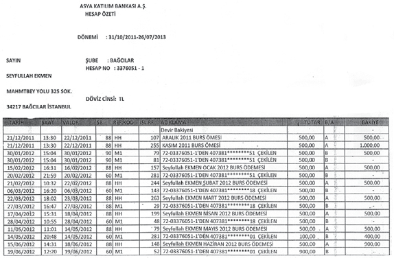
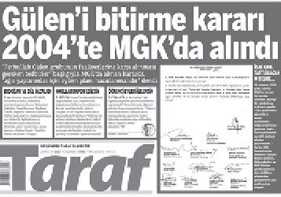
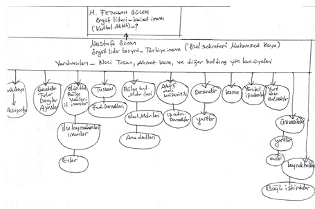
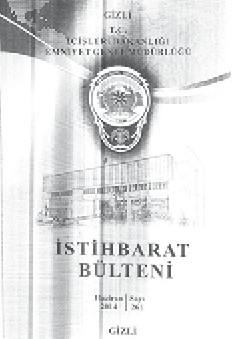
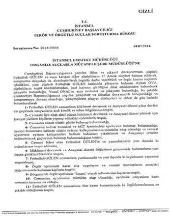
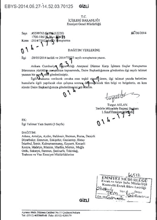
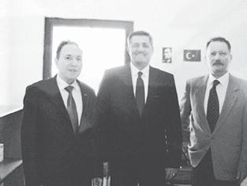
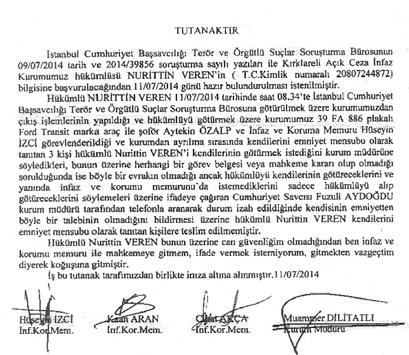
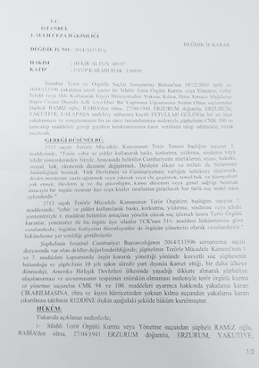

İlk şikâyet
Türkiye henüz 17-25 Aralık yolsuzluk ve rüşvet operasyonunu konuşmaya başlamamış; ancak Hükümet ile Cemaat arasındaki kavga artık en üst seviyeye çıkmıştı. Dönemin Başbakanı Tayyip Erdoğan her fırsatta Fethullah Gülen ve cemaatinin devlet içinde ayrı bir örgütlenme kurarak kontrol sağlamaya çalıştığını söylerken, bunun adını da “Paralel Yapı” olarak belirlemişti.
17 Aralık 2013’ten sadece dört gün önceydi…
Avukat Mehmet Demirlek, Beylikdüzü’ndeki ofisinde bir haftadır çalıştığı dilekçesini tamamlamanın verdiği rahatlıkla bir sigara yakmıştı. Koltuğuna gerildiğinde, karşısında bulunan saate gözü takıldı. Cep telefonunu eline aldı ve bir kere de oradan kontrol etti saati. Doğruydu. “Artık bugün geçti, yarın götürürüm” diyerek geçiştirdi. Gün bitmişti artık.
Günlerce uğraşmış, gazete haberleri ve belgeleri bir savcı gibi incelemişti. Eksik bir şey kalmamalıydı. Yedi sayfalık dilekçesine her gün bakıyor, bazı ufak rötuşlar yapıyor, iş yoğunluğu da üstüne gelince teslim etmek için fırsat bulamıyordu.
17 Aralık sabahı uyandığında ise artık Türkiye’nin eskisi gibi olmadığını görecekti. Gözaltına alınan kişileri duydukça âdeta gözleri yuvalarından çıkıyordu. “Bugün ne olursa olsun teslim etmeliyim” diye içinden geçirirken, bir taraftan da hızlı hızlı kahvaltısını yapıyordu.
Gireceği duruşmaları ve randevularını gözden geçirirken, yapacağı şikâyeti düşünüyordu. Öğleden sonra saat 16.00’da işlerini tamamlamıştı. Artık önünde bir engel yoktu… Hazırladığı suç duyurusu dilekçesini ofisinden alarak Çağlayan Adliyesine hareket etti. Fakat trafik engelini hesaba katmamıştı. Mesai saatini geçirmek istemiyordu. Hemen kararını değiştirdi, dilekçenin başlığını el yazısıyla değiştirerek Büyükçekmece’den muhabere yoluyla gönderilecek şekilde ayarladı. Büyükçekmece Adliyesine vardığında saat 16.20’ydi. Adliyenin 2. katında bulunan müracaat savcısı henüz mesaiden çıkmamıştı. Koşar adımlarla savcılık bürosuna yöneldi.
Yetişmişti…
Önce dilekçesini havale ettirdi, ardından savcılık muhabere bürosuna dilekçesi ve eklerini verdi. Artık tamamdı… Ter içinde kalmıştı. Sigara içtiği için de soluk soluğaydı. İçinden, “Oh be… Büyük bir yük kalktı” diye geçirdi. Adliyenin kapısından çıkar çıkmaz daha önce hazırladığı sigarasını yaktı. İlk nefesi çektiğinde zafer kazanmışçasına bir sevinç vardı içinde.
Avukat Mehmet Demirlek’in, Fethullah Gülen hakkında “suç örgütü” kurduğu gerekçesiyle yaptığı başvuru savcılık tarafından dikkate alınmıştı.
Gülen hakkındaki şikâyetler 2014 yılında birleştirilmişti. Dosya ise kabarıktı…
İstanbul Cumhuriyet Başsavcılığı tarafından yürütülen soruşturmada Fethullah Gülen hakkında, “Suç örgütü kurmak ve bu kapsamda eylemlerde bulunmaktan” dolayı soruşturma başlatılmıştı. Ankara’da da bir soruşturma yürütülüyor, tanık olarak ifadeler alınıyordu.
***
Soruşturma dosyasındaki bilgiler elime ulaştığında, Türkiye artık yeni bir dönemdeydi. Aydınlık gazetesinde yazı dizisi yapmış ve şikâyetçi, tanık ifadelerinin ayrıntılarını açıklamıştık. Bu haberler ses getirmiş ve Fethullah Gülen’i kızdırmıştı. Yazı dizisi biter bitmez, Gülen harekete geçmiş ve bizzat benim hakkımda savcılığa 6 ayrı şikâyet yapmıştı. Demek ki doğru yoldaydım…
Soruşturma dosyasına giren belge, bilgi ve tanık ifadeleri Fethullah Gülen ve cemaat yapılanmasının en ince ayrıntısına kadar anlatıyordu, dosyaya giren iddialar dudak uçuklatan cinstendi.
Hedef TSK
Fethullah Gülen cemaati hakkında şikâyetçi olan kişilerden biri de “Işık Evi” diye tabir edilen öğrenci evinde kalan İstanbul Üniversitesi İletişim Fakültesi öğrencisi olan İnfaz Koruma Memuru Seyfullah Ekmen idi.
Seyfullah Ekmen’in, 8 Temmuz 2014 tarihli 3 sayfalık şikâyet dilekçesini İstanbul Cumhuriyet Başsavcılığına verdiği gün, Fethullah Gülen hakkındaki “suç örgütü” soruşturmasını yürüten savcılardan Fuzuli Aydoğdu tarafından ifadesi de alınmıştı.
İfadesinde cemaatle tanışma sürecini, çalıştığı Bakırköy Denetimli Serbestlik Müdürlüğü’nde tanık olduğu olayları, evsiz kaldığı gün parkta nasıl sabahladığını anlatan Seyfullah Ekmen’in hikâyesini gelin kendinden dinleyelim:
“Ben Konya’da oturuyordum. Bir tanıdığım vasıtası ile İstanbul’a geldim. Bağcılar’da bulunan Birey Dershanesi’ne kayıt yaptırdım. Ancak cemaatin evinde kalıyordum. Beni ve arkadaşımı Birey Dershanesi’ne kaydettirdiler. Bunun sebebi de askeriyeye gidecek kişilerin deşifre olmamasıdır. Bu nedenle kendi dershanelerine kayıt yaptırmadılar. Bana ‘eğer sende askeri okula gidersen senin dershane masraflarını biz karşılarız harçlıkta veririz’ dediler. Askeri okulu tercih edenlere bol bol harçlık veriyorlardı. Onlara özel ilgi gösteriyorlardı. Ben kabul etmeyince beni askeri okula gidecek öğrencilerin arasından ayırıp başka bir eve gönderdiler.
Ben İstanbul Üniversitesi İletişim Fakültesi Gazetecilik Bölümünü kazandım. Evde kaldığım abiler, gazeteciliği okumamı da istiyorlardı. Ben gazeteciliği en son tercihime yazmıştım. Burayı kazandım. Puanım önceki tercihlerime de yetiyordu. İlk on bine girmiştim. Tercihler internetten yapılıyordu. Tercih şifrelerimizi evdeki abiler biliyordu. Ben tercihlerimde oynama yapıldığını tahmin ediyorum.
Benimle birlikte dershanede kalırken askeri okulu tercih eden arkadaşım gözünden ameliyat oldu. Ancak kendi ismini kullandırmadılar. Cemaatin hastanesinde farklı isimlerle tedavi oldu. Şu anda askeri kayıtlarında hiçbir sağlık sorunu yokmuş gibi gözüküyor.”
Adına açılan hesap üzerine “burs” aldığını tesadüfen öğrenmişti. Cep telefonuna gelen banka mesajları üzerine şüphelenmiş ve bankanın Şirinevler şubesine giderek kısa bir soruşturma yapmıştı. Aklına, daha önce kaldığı evde imzaladığı formlar gelmişti. Banka şubesine kartını kaybettiğini söyleyerek dilekçe doldurmuş ve aynı gün yeni kartını teslim almıştı. Hesaba baktığında ise şaşkınlığı daha da artacaktı:
“Hesabıma baktığımda 500 TL olduğunu gördüm ve çektim. Ertesi gün yine 500 TL yatırılmıştı onu da çektim. Bu şekilde 2000 TL çektikten sonra benim kart meselesini anladığımı öğrendiler. Yıldız Teknik Üniversitesi’nde Bilgisayar Öğretmenliği okuyan Bölge abisi Ersin kod isimli kişi bu durumu kimseye anlatmamamı istemişti. Fakat bir daha hesabıma para yatırılmadı.
Memur olduktan sonra Alper kod adlı kişi telefonla arayarak Bank Asya’dan çektiğim para için ilk maaşımı kendilerine vermemi ve her ay toplantılara katılarak aidat vermemi istedi. Bu görüşme Fatih’te bulunan FEM Dershanesi’nin olduğu iş merkezinde oldu. Ben kabul etmedim. Dershaneye gittiğimde benimle birlikte Bakırköy Denetimli Serbestlik Müdürlüğü’nde işe başlayan 4 kişi de oradaydı.1
Bu şekilde grup olarak Alper ve Yusuf kod isimli kişilerle görüşüyorlardı. Benimle ve benden sonra işe başlayan birçok memur arkadaş bunların evine gitmektedir. Bunlar her ay cemaate düzenli olarak para ödüyorlar. Ayrıca Zaman gazetesi abonelikleri vardır. Gazeteler ise genellikle yurtlara gidiyordu. Arkadaşlar ödedikleri paraları elden bölge sorumlusuna zarf içerisinde veriyorlardı.”
İddiaları araştıran savcılık 8 Ağustos 2014’te Bank Asya’ya bir yazı göndererek Seyfullah Ekmen’in hesap hareketlerini isteyecekti. Banka, Ekmen’in hesabının 26 Temmuz 2013 yılında kapandığını bildirecek ve bu hesaba yönelik 31 Ekim 2011’den itibaren olan hesap dökümünü savcılığa gönderecekti. Bankanın gönderdiği dökümde de, Ekmen’in hesabına 2011 Kasım ayından 2012 yılının Haziran ayına kadar toplamda 4000 TL’lik burs ödemesi yapıldığı gözüküyordu. Burada dikkat çeken nokta ise, Seyfullah Ekmen’in ifadesinde hesabın Bank Asya Bağcılar şubesinden açıldığı, ancak kendisinin o şubeye hiç gitmediğini söylemiş olmasıydı.

Seyfullah Ekmen’in hesap hareketlerinin bulunduğu döküman
Paralel Askerlere: Siz benim Hamzalarım, Alilerimsiniz
Seyfullah Ekmen’in, cemaatin gençleri askeri okullara yönlendirdiği iddiasını kuvvetlendiren bir başka söylem de kitabın ilerleyen bölümlerinde kapsamlı ifadesine yer vereceğimiz Latif Erdoğan’dan geliyordu. Erdoğan, 17-25 Aralık 2013’teki yolsuzluk ve rüşvet operasyonunu cemaatin hükümete karşı yaptığını söyleyerek, Fethullah Gülen’in bir sonraki hamlesinin, “askeri unsurları devreye sokmak” olduğunu ifade ediyor, yaşanabilecekleri de şöyle açıklıyordu:
“Fethullah Gülen’in yapmış olduğu açıklamalardan konuyu sahiplendiği belli olmuştur. Zaten onun bilgisi dışında bu gelişmelerin olması mümkün değil. Bir sonraki süreçte şu ana kadar Fethullah Gülen tarafından devreye henüz sokulmayan güç Askeriye içerisindeki yapılanmadır. Bu yapılanma küçümsenecek bir yapılanma değildir. 40 yıldır asker içinde çok ciddi çalışmalar yapıldığını biliyorum. O dönem öğrenci evlerinden yetişerek Askeri kurumlara subay-astsubay-uzman çavuş-sivil memur statüsünde yerleştirilen şahıslar şu an kurum içerisinde belirli bir mertebe ulaşmışlardır. Benim askeri unsurlar içinde ismen bildiğim bir kişi yoktur. Bilmem de mümkün değildir. Çünkü yapı içerisinde bu tür kurumlarda görevlendirilen şahısların isimleri çok gizli tutulur ve bu şahısları sadece kurumun sorumlusu bilir.”
Asker içindeki yapılanma iddiası sadece bununla sınırlı değildi. 25 yıl cemaat içinde hizmette bulunduğunu anlatan Prof. Dr. Ahmet Keleş’in de Fethullah Gülen soruşturma dosyasına giren ifadesinde, asker içindeki yapılanmadan sıkça söz ediliyordu. Ergenekon operasyonları sürecine dikkat çekerek bilgiler veren Keleş, bu süreçte “AKP Hükümeti”ne verilen sözlerin de altını çiziyordu:
“Ergenekon süreci başladığında Diyarbakır’da yakın arkadaşlarımla konuştuğumda bu operasyonun bütün aşamalarında adım adım cemaatin yürüteceğini ve operasyonun nasıl yönlendireceğini söyledim. Ergenekon operasyonu cemaatin askeriyede ne kadar güçlü olduğunun kanıtıdır, Ergenekon operasyonu süresince elde edilen bilgiler Amerika’ya hocaya gönderildi ve hükümete operasyon süresince destek verildi. Hükümete yargıdan ve emniyetten hiçbir kaygısının olmaması yönünde cemaatten teminat verildi.
Fethullah Gülen’in toplantı ziyaret odalarında aşırı bir askeriye vurgusunu hissedersiniz. Toplantı odalarında özellikle Hava Kuvvetlerine ait uçaklar, amblemler, askeri nişanlar yer almaktadır. Hoca kendisini askeriyeye hayran bir görüntü sergiler. Fakat arka planda derin bir asker korkusu ve rahatsızlığı vardır. Her asker konusu geçtiğinde, Hoca sunu söylemiştir: ‘Bu askeriyeye, askeriyenin içindeki kahramanlarla bir gün hesabını soracağız’ demiştir. Zaman zaman askeriye içerisindeki cemaat elemanları ile esnaf abilerin bağ evlerinde bir araya gelirdik. Hem onlar biraz tatil yapmış olur hem de biz onlara işin manevi boyutunu anlatırdık.
O zaman Fethullah Hocanın askerlere nasihati şu şekilde olurdu: ‘Siz benim Bedir’imin, Uhud’umun Hamzaları ve Alileri olarak yetişiyorsunuz’ derdi.
30 yıldır askeriyenin içerisinde Fethullah Hocanın emri ile ‘bir gün tankları yürüteceğiz’ diye bekleyen kişiler var. Hava ve Deniz Kuvvetleri cemaat yapılanmasının daha çok yerleştiği yerlerdir. Bir dönem askeriyeden atılanların üzerine Hoca neredeyse felç geçirecekti. 28 Şubat döneminde askerden atılan cemaat elemanlarına cemaat tarafından maddi destek yapılıyordu. Tuncay Güney’in operasyonel işlerde kullanıldığı yönünde bilgim oldu. Tuncay Güney ile çok kez görüşmüşlüğüm vardır. Bizim dönemimizde meslekten atılan askerler için para verilirdi. Bizde bu paraları sorumlulara iletirdik.”
Maltepe Askeri Lisesine sızma girişimi
Cemaatin Türk Silahlı Kuvvetlerine sızma çalışmalarıyla ilgili en çarpıcı tespit, dönemin Devlet Güvenlik Mahkemesi Savcısı Nuh Mete Yüksel’in hazırladığı iddianamede yapılmıştı.
İddianamede, Gülen grubunun önlerindeki tek engel olarak Türk Silahlı Kuvvetleri’ni gördüğü ve yetiştirdikleri gençleri askeri okullara yönlendirerek sızma faaliyetleri yaptığı ifade edilmişti. Cemaatin eğitim alanında bazen devletten daha ileri imkânlara sahip olduğu gözlemlenmiş, çalışmaları planlı ve sinsi olarak nitelendirilmişti. Burada dikkat çeken nokta, Türk Silahlı Kuvvetlerine karşı polis teşkilatını güçlendirmek için çaba harcadığının ortaya koyulmasıydı.
Belki o dönemde bu pek anlaşılmayacaktı, ancak 8 yıl sonra Ergenekon operasyonlarıyla ortaya çıkacak tablo bu iddianameyi doğrulayacaktı.
Bakalım Nuh Mete Yüksel, 2000 yılında hazırladığı iddianame ile cemaati ve amacını nasıl tarif etmiş:
“Fethullah Gülen Grubunun Türk Silahlı Kuvvetlerine karşı uyguladığı politika, hoş görünme, Türk Silahlı Kuvvetlerine karşı bazı politikacılardan alınmış tavizlerle polisi güçlendirme, böylece denge sağlama, etkinleştiği polis camiasını gerektiğinde Türk Silahlı Kuvvetlerine karşı kullanma şeklindedir. Türk Silahlı Kuvvetlerini ele geçirme amacıyla sızma politikasını sessiz ve derinden devam ettirmektedir.
Türk Silahlı Kuvvetleri mensupları arasına sızma çalışmalarının yanı sıra subay ve astsubay çocuklarını kendi okullarına ve dershanelerine kaydettirmeye, yetiştirilen bu çocukları askeri okullara sokmaya çalışmaktadır. Fethullah Gülen tarafından, silahlı kuvvetler içinde yapılanabilmek ve ileride etkinliğe kavuşabilmek amacıyla yeni projeler üretilmeye başlanmış, bu çerçevede askeri okullarda okuyan öğrenciler önce fiili hedef olarak belirlenmiş, kültür düzeyi yüksek, kendine bağlı, türban takmayan bayanların askeri öğrenciler ile tanışmaları ve evlenmelerinin sağlanabilmesi için gerekli vasatı sağlayacak bir yapılanmaya gitmiştir. Fethullah Gülen, bu yöntem ile 10 yıl içinde Türk Silahlı Kuvvetleri içinde söz sahibi olacağı bir konuma gelmeyi planlamaktadır.”
İddianamede ayrıca cemaatin Türk Silahlı Kuvvetlerine sızma çalışmalarına ilişkin Maltepe Askeri Lisesi öğrencisi Mustafa Soysal’ın ifadeleri de yer almıştı. Bu anlatımın, Seyfullah Ekmen’in yaşadıklarıyla örtüşmesi de buraya mercek tutmamızı sağılıyor. İsterseniz Mustafa Soysal’ın itirafına kısaca göz atalım:
“Okula başlamadan evvel bize dini konulardan ve Orta Asya’da açılan okullardan bahsettiler. Maltepe Askeri Lisesi’ne girdikten sonra bize ‘Sahabi mertebesine ulaştığımızı, kurallara uymadığımız takdirde Allah tarafından cezalandırılacağımızı’ söylediler. Maltepe Askeri Lisesi imtihanları için bizlere form doldurttular. Ömer isimli şahıs bizleri Sultanbeyli’de bulunan belediye arazisinde koşturuyordu, ayrıca daha önceki yıllarda Maltepe Askeri Lisesi imtihanlarında sorulan soruları ezberlettiler, mülakatta neler yapacağımızı anlattılar. Murat Yanık ile birlikte Maltepe Askeri Lisesi’nin imtihanlarını kazanıp İzmir’e geldik.
Bu cemaat mensupları hiç çekinmeden Atatürk’ü kötülediler. Kızların şeytan olduklarını, onlardan uzak durmamız gerektiğini söylediler.”
MGK kararında Gülen
Bu bilgilerin ışığında, AKP’li yıllara ilişkin kısa bir bilgi aktarmak gerekli. Kadrolaşmasını bu dönemde hızlandıran cemaatin tehlikeli boyutlara ulaştığını iktidar partisi görse de önlem almada gecikmiş ya da pek umursamamıştı. Fakat 2004 yılının Milli Güvenlik Kurulu (MGK) toplantısında alınan tavsiye kararının altına atılan imzalar, iktidarın cemaat yapılanmasının boyutunu bildiğini gösteriyordu. Bu karar, o gün kamuoyu tarafından bilinmese de 10 yıl sonra açığa çıkacaktı. 28 Kasım 2013’te Taraf gazetesi sürmanşetinde Mehmet Baransu imzalı haberde, tavsiye kararı, “Gülen’i bitirme kararı 2004’te MGK’da alındı” başlığıyla duyurulacaktı.
Haberde yer alan bilgilere bakıldığında, tavsiye kararda cemaatin işleyişi anlatılmıştı. MGK kararında, “Nurculuk Faaliyetleri ve Fethullah Gülen grubunun yurtiçi ve yurtdışı faaliyetlerine karşı bir eylem planı hazırlanması uygun görülmüştür” ifadeleri kullanılmıştı.
MGK’nın 25 Ağustos 2004 tarihli kararında, dönemin Cumhurbaşkanı Ahmet Necdet Sezer, Başbakanı Tayyip Erdoğan, Genelkurmay Başkanı Hilmi Özkök ve Dışişleri Bakanı Abdullah Gül, Kara Kuvvetleri Komutanı Orgeneral Aytaç Yalman, Deniz Kuvvetleri Komutanı Oramiral Özden Örnek, Hava Kuvvetleri Komutanı Orgeneral İbrahim Fırtına ve Jandarma Genel Komutanı Orgeneral Şener Eruygur’un imzaları bulunuyordu.
Tavsiye kararında yer alan maddeler ise şöyle veriliyordu:
“ - F. Gülen grubunun yurtiçi ve yurtdışı faaliyetleri, Başbakanlık Uygulamayı Takip ve Koordinasyon Kurulu (BUTKK) koordinesinde İçişleri Bakanlığı, Dışişleri Bakanlığı, MİT Müsteşarlığı ve ilgili diğer kurumlar aracılığı ile yakından takip edilmelidir. Devletin yurtdışında görevli memurları aracılığı ile F. Gülen grubu yakından takip edilmeli, gerekiyorsa Dışişleri Bakanlığı tarafından ilave tedbirler geliştirilmelidir. F. Gülen grubuna ait özel okulların faaliyetleri, İçişleri Bakanlığı ve Milli Eğitim Bakanlığı tarafından incelenmeli ve takibe alınmalıdır. Bu gruba ait okullardaki şüpheli ve yasa dışı faaliyetler periyodik olarak BUTKK’na rapor edilmelidir.
- F. Gülen grubunun ‘öğrenci evleri’ kapsamında sempatizan ve yandaş edinme gayretleri İçişleri Bakanlığı nezdinde dikkatle takip edilmelidir. Yasal olmayan yollar kullanılarak din eğitimi veren ve bir nevi dini alet ederek yandaş toplama sistemi olan ‘öğrenci evleri’ uygulamalarına engel olunmalıdır.
-Yapılan bağışlar ile usulsüz para hareketleri ve kara para uygulamalarının Maliye Bakanlığı- MASAK (Mali Suçlar Araştırma Kurulu) aracılığı ile takip edilmesi sağlanmalıdır.”
Haberde dikkat çeken bir başka bilgi ise, MGK tavsiyesinde-kararında Dışişleri Bakanı Abdullah Gül’ün Büyükelçiliklere, Gülen okullarına ve Milli Görüş’e yardım edilmesi için gönderdiği 3846 ve 3847 sayılı genelgenin geri çekilmesinin kararlaştırılmasıydı.

Taraf gazetesinde çıkan mgk kararı
28 Kasım 2013 Taraf- Mehmet Baransu
Komünizmle Mücadele Derneği kurucusu
Kitabın ilerleyen bölümlerinde, Türk Silahlı Kuvvetlerinin “imamı” olduğu iddia edilen kişiyi de tanık anlatımlarında okuyacaksınız, ancak burada biraz geriye, Fethullah Gülen’in askerliğine dönelim.
Edirne’de imamlık yaparken askerliği Ankara’ya çıkan Gülen’in, acemilikten sonraki durağı İskenderun olacaktır. Askerde geçirdiği sarılık hastalığı nedeniyle 3 ay hava değişimi raporu alır ve memleketi Erzurum’a gider. Asker olmasına karşın burada da camilerde vaaz vermeye devam eder. Buradaki konuşmalarından dolayı birçok kez hakkında işlem yapılır, askeri mahkemede yargılanır ve hatta cezaevine bile girer. Bir filmle ilgili yaptığı konuşmada, “dininizle dalga geçiliyor” diyerek halkı galeyana getirir. Bu sırada Erzurum’da, Komünizmle Mücadele Derneği’ni kurar.
Gelin bu olayı Latif Erdoğan’dan dinleyelim:
“Erzurum’a geliyor ve hala asker olduğu halde Komünizmle Mücadele Derneği’ni kuruyor. Buradan bir daha birliğine dönmüyor ve terhis oluyor. Fethullah Gülen’in askerde iken MİT’in kendisi hakkındaki raporunun eline geçtiği ve ‘dünya çapında bir ihtilal yapabilir’ şeklinde kendisi hakkındaki görüşü okuduğu şeklinde tarafımıza beyanı mevcuttur. Komünizmle Mücadele Derneği, Amerika tarafından Türkiye içerisinde İzmir’de Ankara’da ve Erzurum’da kurulan bir dernektir. Buradaki gariplik, Fethullah Gülen’in bu derneğin kurucusu olması daha sonra yine bu derneğin diğer bir şubesinin bulunduğu İzmir’e tayin edilmesidir. Fethullah Gülen askerlik sonrası Edirne’de imamlık görevine başlıyor. Daha sonra Kırklareli’ne görevli olarak gönderiliyor, dönemin Diyanet İşleri Başkan Yardımcısının tavassutu ile İzmir’e tayin ediliyor. Yaşar Hoca, eski Edirne Müftüsü olup Fethullah Gülen’i bu ilde vazife yaparken tanımıştır. Ayrıca Fethullah Gülen’in kendi anlatımına göre ‘İskenderun’da askerlik vazifesini ifa ederken Arif Başçavuş (soyadı Başol olabilir) isimli şahsın, Batılı eserleri okuması hususunda ‘üzerinde çok etkili olduğu’ şeklinde beyanı vardır.
İzmir’de göreve başladıktan sonra İzmir Komünizmle Mücadele Derneği Başkanı Prof. Saffet Solak ile görüşmelerini sürdürüyordu. Bu, Fethullah Gülen’in benimle yapmış olduğu sohbetler esnasında geçen bir husustur.
Bence İzmir’de Fethullah Gülen’in edindiği ilk çevreden insanların araştırılması neticesinde neden bu hareketin Ege Bölgesinden yayıldığı belli olur.”
Cemaat Şeması
Gülen, örgütleme becerisini sadece Komünizmle Mücadele Derneği kurmakla bırakmayacaktı. Verdiği vaazlarda ulaştığı kitleler ve yakın çevresinin kendisine sadakati, bu yönünü hep ön planda tutmasını sağlayacaktı. Ancak, bu tespitler herkes tarafından yapılsa da cemaat hiyerarşisi bugüne dek pek bilinmiyordu. Söylentiler üzerine yazılanların dışında en kapsamlı bilgi, yine soruşturma dosyasına giren ifadelerde yer alıyor.
Dosyada şikâyetçi sıfatıyla ifadesi yer alan işadamı Ahmet Sarıtaş, 16 yıl boyunca “hizmet” içinde çalışmıştı. Sarıtaş’ın cemaatle yolu 1990 yılının başlarında, İstanbul Şişli Pangaltı’daki bir mağazada Fikri isminde bir kişi vasıtasıyla kesişmişti. Tesisatçı olmasına karşın, 1998 yılında biraz da ticari kaygılarla yemek sektörüne girmiş ve bir şirket kurarak cemaat okullarıyla çalışmaya başlamıştı.
Cemaatle ilk sorununu da şirketinde çalıştırdığı aleviler için yaşamıştı. Anlatımına göre, cemaat okullarındaki yöneticiler bu durumdan memnun olmamışlar ve “Alevi çalıştırma” diye telkinde bulunmuşlardı. Okullardaki türbanlı öğretmenlerin o dönem peruk takarak ders verdiklerine şahit olmuş ve bunu samimi bulmadığını ifade etmişti. Birçok kez katıldığı toplantılarda, şahit olduklarını ve yaşadıklarını savcı ile paylaşan Ahmet Sarıtaş, ifadesini el yazısı ile vermiş ve bir de cemaatin şemasını çıkarmıştı. Şemada bir numara “Kâinat İmamı” Fethullah Gülen, Başyardımcı ve “Türkiye imamı” olarak Mustafa Özcan gösterilmişti. Özcan’ın yardımcıları da cemaate yakın olan Kaynak Holding’in Yönetim Kurulu Başkanı Naci Tosun, holding yöneticileri ve Ahmet Kara olarak belirtilmişti. Örgüt içindeki hiyerarşide şirketler, gazete, dergi ve TV’ler, kamu çalışanları, dershaneler, yurtlar, işadamları, üst düzey bürokratlar ve ışık evlerinin “Türkiye İmamı” ve yardımcılarına bağlı olduğu ifade edilmişti.
Ahmet Keleş’in ifadesindeki iddialar da soruşturma dosyasına girmiş ve bunlar şemanın kafamızda şekillenmesine yardımcı olmuştur. Cemaat hiyerarşisi ve yapının hücrelerini anlamamıza yardımcı olan açıklamalar, devlet içine sızmanın nasıl gerçekleştiğini açığa çıkarıyor. Şimdi yapının özelliğini Ahmet Keleş’ten dinleyelim:
“Aslında şöyle büyük bir piramitten oluşuyor. Şimdi bu piramidi iyi analiz etmemiz gerekiyor. Piramidin en üstü Fethullah Gülen katıdır. Üst akıl diye tanımladığımız, dünya akıllarının da müdahil olduğu yerdir. Buradaki üst akıl, dünyayı dizayn eden yukarıdaki aklın koordine olmuş halinden oluşuyor. Buradan aşağıya doğru indiğimizde (2) önemli katmanı anlatacağım. Burası benim tanımımla (6) kat ve (5) kat ve sonrası aşağıya doğru katmanlar. Bu iki kat son derece önemli katmanlardır. Bu iki katın altında da birçok katmanlar var.
Şimdi bu zemin kattaki halk, o paralel çizginin bunlarla birlikte yürüdükleri halde, sadece burada dini duygularıyla ve dini inançları ve fedakârlık üzerine oturmuş bir tabandan oluşur. Bu taban, bu yukardaki yapılanmanın önemli bir maddi finansmanını sağlıyor. Ama şöyle bakarsanız yanılırsınız. Bu yapı maddi finansman olarak buradan çok iyi besleniyor. Fakat tek beslendiği şey burası değil, buranın maddi olarak desteğinin yukarıdan çekmesi yukarı katmanların faaliyetinin biteceğini düşünmeyin. Hani deniliyor ya ‘çocuklarını dershaneye vermeyecekler, okullardan alacaklar, gazeteye abone olmayacak dolayısıyla cemaat çökecek’ böyle bir şey yok, çökmez.
Ne gazeteye aboneliğini bırakarak, ne çocukları okula göndermeyerek burası çöker çünkü bu yapılanma bu katmanlar bu katın üzerine oturuyor ama bu yapı mevcudiyetini ve varlığını sadece bu katın üzerine inşa etmemiş, burada paralel bir şey var, bu kat yapı için çok önemli ama tek unsur değil. Dolayısıyla halk, cemaat için çok çok önemli. Ama sadece halktan ibaret bir hareketten bahsetmiyoruz.
Dolayısıyla buradan söylemek istediğim bir husus var. ‘Halkın dini duyguları üzerinden yukarı katlar bunları öyle bir motive etmiş ki, hiçbir Müslümanın hayır diyemeyeceği bir vaatte bulunmuş bunlara. Bu manevi vaat nedir? Mahşerde Resulullah ile haşrolacaklar, şu cemaatin tümünün yapmış olduğu hayır ve hasenat tek tek her birinin hanesine yazılacak.’ Yani aşağı kattaki herhangi bir şahıs, buraya intisap ettiğinde, bir şekilde katkıda bulunduğunda, gazete aldığında, burs verdiğinde, himmet yaptığında, yani bir şey yaptığında, tüm cemaatin yaptığının tamamımın sevabı onun defterine yazılacak ki buna hiçbir fani hayır demez. Dolayısıyla çok cazip, anlamlı değerli bir şey. Buraya katkıda bulunuyor, burada olmayı Allah’ın bir lütfu olarak algılıyor ve diyor ki: ‘Ne büyük bir lütuf ki Allah’ım beni böyle bir cemaate müntesip kıldı. Benim böyle bir cemaatim var’ diye düşünüyor.
Devletin paçasından tutacağım…
Katmanlar bu halkın üzerinde gibi duruyor ama diğer katlarla da halk bağlantısı sürekli devam ediyor. Aşağıdan yukarıya geçirgenlikler devam ediyor, ‘buralar da halka açılmış yurtlar, okullar, evler vs. şeklindeki hizmetin kurumsal müesseseleri vardır. Bu kurumsal müesseselerin içerisinden yukarı katmanlara doğru süzülerek gidiliyor.’
Örnekle piramidin en alt katında yer alan bir x tuğlasını düşünün, bu tuğlanın nasıl üst katmanlara çıktığını nasıl iletişim kurulduğunu anlayacağız. Esas anlamamız gereken şey, bunlar. Bunu anlarken şöyle bir şeyi görmemiz gerekiyor, o da şu: Hizmetin yapılanması içerisinde ‘resmi ve kurumsal müesseseleri var. Bunlar da evlerdir. Cemaat evleridir. Resmi kurumlar olarak sizin tanıdığınız yurtlar, kurslar, kolejler, üniversiteler cemaat sadece bunlar değil. Bunları sadece zemindeki öğrenci evleri olarak algılamamak lazım, cemaat yapısının asıl hücresini oluşturan odaklardır ve bunlarda evlerden oluşmaktadır. Resmi kurumların tamamını kapatsanız bile faaliyetler evlerde yürütülür.
Bu yapısal analizde resmi kurumlar ve evler dediğimizde bir hususun altını iyice çizmek gerekiyor. O da şu: ‘Fethullah Gülen hareketi bu şekilde yapılandırırken, temel taş olarak evleri koyarken (Işık Evleri) bu kattakilere de alt kata vaat edilenden daha farklı olarak 2. Kutsiler (adanmış ruhlar) olarak cemaatin vurucu gücü, operasyonel gücü, asli elemanları, unsurlar burada yetişip motive edilip, şekillendirilip sahaya indiriliyor ve buradan gönderiliyorlar.
Bir de bu resmi kuramlarının dışında medya, hastane hizmetleri ve ticari hizmetler gibi pek çok unsurlar vardır bu katta. Cemaatin sağlık ve ticari alandaki gücünü hayal bile edemezseniz. TUSKON birliği altında toplanarak çok önemli bir hale getirildi.
Bu yapılanmayı Fethullah Gülen kurgularken, her yapıda olduğu gibi bu yapıya da bir amaç koyuyor. Bu amaç ‘Fetih Hareketi’dir. Türkiye’yi, Orta Asya’yı fethedecek, mümkünse dünyayı fethedecek bir fetih hareketinden söz ediyoruz. Bu fetih hareketi Fethullah Gülen tarafından planlanırken bunu bir ütopya olarak planlamıyor. Bu hayali bir yapılanma değil, gerçekçi, operasyonel uygulamaya dayalı bir yapıdır.
Fethullah Gülen de bunu böyle algıladığı için Türkiye’yi ikiye ayırıyor:
A- Resmi Devlet Kurumları
B- Millet/Halk
Şimdi bu organize edilirken resmi kurumların tamamını ve milletin kahir ekseriyetini ele geçirmeye çalışan bir yapıdan söz ediyoruz. Devletin resmi kurumu olarak akla gelen neresi varsa oralardan söz ediyoruz. ‘Bunlar birinci, ikinci, üçüncü önem arz eden hayati kurumlar’ diyor ya F. Gülen konuşmalarında; resmi kurumları halka olarak birbirine bağlayan ve örgütlenmeyi planlayan bir yapıdan bahsetmekteyim.
Bu hayati kurumlar, askeriye, yargı ve emniyettir.
Devletin resmi kurumlarındaki yapılanmayı kendi tabiri ile Necatibey Caddesindeki o evde şöyle söylemişti: ‘Bir gün bana Ankara’da bin evimiz olduğunu söyleyin, devletin paçasından şöyle bir tutacağım, devlet uyandığında yapacağı hiçbir şey kalmayacak.’
Tabi bu evler bugün on binleri aşmıştır.
Biz bunu 17 Aralık’ta bacağımıza sarıldıklarında hissettik. Yaşadık biz bunu yaşadık, o zaman hayaldi ama biz bunu yaşadık, gerçekçi bir şeyden bahsediyoruz. Şimdi bu nasıl olur, piramide dönünce daha iyi anlaşılacaktır. Halkın tüm sivil örgütlenmeleri içerisinde hizmet vererek halk içerisinde örgütleniyor, (hem halka hizmet veriyor, dershanesi ile hastanesi ile okuluyla) halk içerisinde örgütleniyor. Tüm sivil toplum örgütlerine sızılıyor.
Devletten daha ciddi istatistik çalışması vardır cemaat içerisinde. Cemaatte öyle bir istatistik vardır ki mesela Hoca sorsun; ‘ne kadar hukukçusu, savcısı, kâtibi ne kadar polisimiz var rütbeli/rütbesiz’ bir firesiz tek tek sayılır.
Yapının altından üst katmanlarına yolculuğunuz esnasında siz birer derece/rütbe alarak çıkarsınız. Bu dereceler ve rütbeler kaydolur. Bizim data bank dediğimiz bir sistem var. Her zaman bu kayıtlar data bank içerisinde durur. Devletin kurumları içerisinde yapılanmak için okullardan başlamak üzere kurstan yurda öğrenci alıyor. Önce üniversite hazırlık kursuna alıyor, üniversite hazırlık kursları (bunların hafta sonu abi-talebe ilişkilerinde zekâ derecesine göre bir ilişki var) üzerinden üniversiteyi kazandırıyor ve cemaatin ihtiyaçlarına göre çocuğu yönlendiriyor. Çocuk üniversiteyi kazandıktan sonra cemaat kendi eliyle bu genci nerede kalacaksa (evde/yurtta) cemaat tarafından hazırlanan ve öğrenci ile ilgili bilgilerin olduğu bir zarfla teslim ediyor.
Bu zarf içerisinde çocuğun dini yaşamı, sadakati, ne kadar nurculuğu, Fethullah Hocayı bildiği, ne kadar güvenilir olduğuna dair rapor mevcuttur ve bir üste teslim edilir. Bunlar hep kayıt altındadır. Bu öğrenciler bir dönem yurtta kalırlar daha sonra evlere aktarılırlar, ideal olan budur. 2 dönem yurtta kalmış bir öğrenci eve aktarılmamışsa bir daha aktarma işlemi yapılamaz ve bu öğrenci yurtta da kalamaz. Yani evlere intikal etmeyen ve yolu evden geçmeyen kişiler yukarı katmanlara doğru çıkamaz. Yukarı tırmanmanın tek yolu evlerdir. Eve geçmezseniz bir şekilde diskalifiye edilirsiniz.
Dolayısıyla öğrenciler evlere geçerken kendilerine verilen güven dereceleri ile yükselirler (önce evdeki abi ile geçimi, evdeki uyumu iyiyse ve umut vaat ediyorsa, ileride buna ev abisi yardımcılığı verilir).
Şimdi buradan başlıyorum:
Ev abiliği: ilk rütbe budur. Ev abiliğindeki performansınız beğenilirse semt abiliğine yükselirsiniz.
Semt abiliği: 8-10 evin abisi olursunuz. Şehrin büyüklük ve küçüklüğüne göre değişi, burada başarılı olursanız asgari olarak 3 bölgenin bağlı olduğu bölge abiliğine yükselirsiniz.
Bölge abiliği: Başarılı olursanız ilçe imamlığına terfi edersiniz.
İlçe İmamlığı: Başarılı olursanız il imamlığına yükselirsiniz.
İl imamlığı: Başarılı olursanız Bölge İmamlığına terfi edersiniz.
Bölge İmamlığı: İstanbul başlı başına bir bölgedir. Şöyle söylenebilir: İzmir, Bursa büyükşehir sayılır. Küçük şehirler de ise birkaç il size bağlıdır. Buradaki başarıdan sonra…
Müfettişlik: İl, bölge imamı ile müfettişler 5. Kat üyesidir. Bu sistemin bir benzerini yurtdışı içinde düşünebilirsiniz. Kazakistan, Türkmenistan, Almanya, Arnavutluk imamı vardır. Bu ülke imamları da 5. kata gelir. Bu kat meclistir. 5. katta ayda bir rutin bu meclis toplanır, bu toplantılar 3 gün sürer. Burası resmi/gayri resmi bütün çalışmaların ve hizmetin konuşulduğu yerdir.
5. Kat üyesinin aşağıda olan her şeyden haberi vardır. Burada konuşulur, burada olgunlaşır, burada maddeleşir.
Burada gündem oluşur. Fethullah Hoca gelir ve oturur. Biz bir gün boyunca gündem hazırlığı yaparız. Öbür gün hoca bunları cevaplar ve emirler verir ve biz not alırız. Burada alınan kararlar hiyerarşik bir düzende aşağıya kadar iner. (Yani 5. Kata kadar çıkılan hiyerarşi ile aynı şekilde emirler aşağıya iletilir). Herkes kendisine bağlı olanlara söyler.
Örneğin ben Ankara’ya dönüyorum, dönüş saatim bellidir. Bana bağlı İl İmamları varsa onlar gelir ben imamlara talimatları iletirim, onlar ilçe imamlarına, onlar bölge abilerine, onlar da semt abilerine sırası ile bu iletişim sağlanır.
Okullardan, hastanelerden, medyadan sorumlu imamlar da 5. kata gelirler. Asıl sizi ilgilendiren konuşulması gereken yer üst katman yani 6. kattır. Bütün operasyonu 5. kat yürütüyor gibi görünüyor ama tehlikeli operasyonları 6. kat yürütür.
Yani fetih hareketini gerçekleştirilme amacına dair yönetim F. Gülen ve 6. kattır. Burada kimlerin olduğunu sadece F. Gülen bilir. Bizim içimizden de bu katta olan arkadaş vardır ama biz bilmeyiz. Bu katta kim hangi konu ile görevli bilmeyiz. Mesela bizimle birlikte gelen bölge imamı veya bir müfettişin emniyet teşkilatı veya başka bir kurumun içerisindeki bir yapılanmanın neresinden sorumlu olduğunu sadece Fethullah Gülen bilir.
6. katı iç içe geçmiş kareler olarak düşünürsek sadece birbirini tanıması gerekenler birbirini tanır. Diğerlerini tanımaz. Mesela bu kareden birinin ihanet ettiğini düşünürseniz sadece o kare içerisinde bir zarar çıkar. Bu zarar diğer karelere sirayet etmez ve harekete zarar vermez. Fethullah Gülen bu kattakilerle özel zamanlarda özel bir yerde görüşme yapar.”

Fethullah Gülen soruşturma dosyasına giren şema
Himmet tosunları
Aşağıdan yukarıya çıkan sistemli yapının mali durumu ve finansman kaynakları çok farklı olmasına karşın, önemli bir bölümü bağış adı altında toplanan yardımlar üzerine kurulmuştu. Bu, istihbarat raporlarına da böyle yansımıştı.
İşadamı Ahmet Sarıtaş, Fethullah Gülen soruşturma dosyasına giren 30 Mayıs 2014’teki ifadesinde, cemaatte bölge imamlarına “kaymakam” diye hitap edildiğini anlatırken, işadamlarından istenen ve cemaat içinde “himmet” diye tabir edilen yardımlara karşı çıkılması halinde “ticari ilişkilerin bozulur” diyerek gözdağı verildiğini şu sözlerle aktarıyor:
“1998 yılı Kurban Bayramı’nda yemek verdiğim her bir okul için tosun istediler. Bende birlikte çalıştığımız için bir tosun verdim. Ayrıca öğrenci bursu da istediler onu da verdim. Daha sonraki yıl benden yemek verdiğim her okul için birer tane tosun istediler. Daha sonraki yıllarda bu sayı her okul için 3’e çıkmaya başladı. Yurtlarına ve okullarına verdiğim fatura çoğaldıkça benden istedikleri tosunlar da artmaya başladı. Zamanla sen bize kârsız yemek vereceksin dediler. ‘Biz Allah için çalışıyoruz’ diyerek
manevi baskı yapmaya çalıştılar. Ben her okul için tosun bağışını fazla buldum. ‘İnsaflı olun birer tane alın’ dediğimde, okul yöneticileri kendilerine bir hedef verildiğini, bu hedefe ulaşmaları gerektiğini, bu hususun yukarı tarafından duyulması halinde ticari ilişkilerin sekteye uğrayacağını söyleyerek tehdit ediyorlardı.”
Latif Erdoğan da “himmet” adı verilen bağışlarla ilgili ayrıntıları anlatırken, cemaate yakınlığıyla bilinen şirketlerin hisseleri için daha sonra hak iddia etmemesi için çek ve senet alındığını söylüyordu:
“İllerde ‘Himmet’ ve bağış adı altında cemaat yapılanması için toplanan paraların 1/15’lik kısmı Fethullah Gülen’in kendisine getirilirdi.
Fethullah Gülen ise kedisine çek, senet ve nakit para olarak gelen bu parayı genel bütçeye bakan İstanbul ilinde toplanan Mütevelli Heyetindeki isimlerin başındaki Mustafa Özcan aracılığıyla gerekli yerlere aktarırdı. Fethullah Gülen, bu çek senet ya da nakit parayı kendi üzerinde bulundurmazdı. Mustafa Özcan bu yapılanma içerisindeki tüm para trafiğini kontrol eder ve koordinesini yapardı.
Kimi illerde himmet gelirleri yetersiz olduğu ve o bölge, semt ya da ildeki cemaat faaliyetlerinin ihtiyaçlarını karşılamadığı için yardım edilirdi. Türkiye genelinde bu paraların nereye aktarılacağını ya da bu Mütevelli Heyetinde kimlerin olduğunu en net Mustafa Özcan bilir. Mütevelli Heyetinde çalışan kişilerin durumu genelde iyi olduğundan parasal konularda suiistimal olmazdı.
Hatta yeni açılan il, bölge ya da ülkelerdeki cemaat faaliyetlerinin yürütülebilmesi amacıyla bu Mütevelli Heyetindeki isimler kendi verdikleri himmetlerle ya da kendi bütçelerince yaptıkları yardımlarla bu eksiklikleri giderirlerdi. Bunun neticesinde ise Fethullah Gülen’in iltifatlarına mazhar olurlardı. Bu onlar için gurur verici bir durumdu. Toplanan paraların 1/15’lik kısmı dışında kalan bölümü olduğu gibi ihtiyaçlar için harcanırdı. Yabancı bir ülkedeki yapılan harcamaların büyük bir kısmı Türkiye içindeki illerden karşılanırdı. Buradaki masrafları ise o illerdeki cemaat yapılanmasının Mütevelli Heyetleri üstlenirdi.
Maddi konular Mütevelli Heyetinin denetimindedir. Her ilde bir himmet toplantısı yapılır ve paralar toplanırdı. Nakit ya da çek, senet şeklinde toplanan paralarla neler yapacağını Mütevelli Heyeti karar verirdi. Bu paraların nereye harcanacağı hangi alanlara aktarılacağına dair görüşmeler yapılırdı. Bu görüşmeler neticesinde okul, dershane ya da vakıf her ne yapılacaksa kararlar burada alınırdı.
Hizmetin kendi açtığı kuruluşlardan ziyade şahıs adına kurulan firmalarda hisseleri mevcuttur. Bunlara Bank Asya, Kaynak Holding, Sürat Kargo, Nida AŞ örnek gösterilebilir. Bu firmalar, şahıs üzerinden hizmet adına açıldığından şu anda bu şirketin sahibinin çocuklarının ileride herhangi bir hak iddia etmemesi için çek, senet alınır ve bunlar bir yerde muhafaza edilirdi.”
Paralel Yapı Emniyet raporunda
Cemaat soruşturması tek yönlü yürümüyordu. MİT ve Emniyet İstihbarat da yaptığı çalışmalarla Fethullah Gülen cemaatinin yapısını inceleyerek işleyişini rapor haline getiriyordu.
Bunun en önemli örneği, Emniyet İstihbarat Bülteninin 2014 Haziran sayısıydı.
Rota Haber’den Ahmet Memiş’in ulaştığı raporda, “Paralel Devlet Yapılanması (PDY) Fethullah Gülen Örgütü” başlıklı bir bölüm yer alıyordu.
“Gizli” ibareli raporda, cemaatin “amacı, stratejisi, kullandığı taktikler ve oluşumu” maddeler halinde sıralanıyordu.
Raporda, cemaatin yurtiçi ve yurtdışı genelindeki örgütlenmesi DGM Savcısı Nuh Mete Yüksel’in hazırladığı Fethullah Gülen iddianamesinden sonra bir kez daha ayrıntılı şekilde devlet raporlarına şöyle giriyordu: “Ülke genelinde yapı bünyesinde faaliyet gösteren 13 üniversite, 350 özel okul, 916 dershane ve kurs, 443 öğrenci yurdu, 297 dernek ve 31 vakıf bulunduğu, dünya genelinde ise 134 ülkede 400 özel okul, 38 öğrenci yurdu ve 6 üniversitenin yapı tarafından yönetilip yönlendirildiği kayıtlara yansıyan bilgilerdendir.”
İşte o raporun tamamı:
Paralel Devlet Yapılanması (PDY)
Fethullah Gülen Örgütü
Amacı: F. Gülen Örgütü, bünyesinde bulunan vakıf, okul ve dershaneleri kullanarak ideolojisine bağlı gençlerden oluşan bir taban oluşturmayı, devlet kurumlarına sızarak devletin tüm karar ve uygulama mekanizmalarını kontrol altına almayı, örgütsel menfaatleri her türlü değerin üzerinde tutarak örgüt ideolojisini hakim kılmayı, bölgesel ve küresel bağlamda uygulanacak iç ve dış politikalarda belirleyici ana unsur olmayı, sadece ülkemizde değil dünyadaki tüm Müslümanları yönetmeyi hedefleyerek ruhani liderliğe ulaşmayı amaçlamaktadır.
Stratejisi: Devlete karşı mücadele vererek hedeflere ulaşmanın yıpratıcı olacağını öngören örgüt, mevcut sistemi yıkmaya uğraşmak yerine, devlet modeline uygun bir örgütlenme ile devlete sızarak içeriden ele geçirmeyi hedeflemiştir.
Ilımlı ve modern bir cemaat imajı sergileyerek, tüm dinler ve uluslar ile iyi ilişkiler kurmayı, onlardan gelecek karşı girişimleri engellemeyi ve hatta yurtdışında açtıkları okullarla yetiştirdikleri kadrolar marifetiyle global anlamda destek bulmayı stratejik hedef olarak belirlemiştir.
Kullandığı Taktik ve Yöntemler: F. Gülen örgütünün kullandığı taktik ve yöntemler;
- Tedbir ve takiyye yoluyla gizliliği esas alarak hücre yapılanması şeklinde organize olmak.
- Bünyesinde bulunan vakıf, okul ve dershaneleri kullanarak yapıya mensup insan kaynaklarının nicelik ve niteliğini artırmak.
- Devlet hiyerarşisini bozarak yapı içerisindeki hiyerarşiyi esas almak.
- Sahip oldukları kadrolar ve basın yayın organları marifetiyle ülkemizin siyasi ve ekonomik istikrarını bozmak.
- İllegal yollardan elde edilen mahrem bilgi ve belgeleri örgüt lehine propaganda amaçlı servis ederek algı operasyonları yürütmek
- Medya, finans ve birçok iş kolunda yürütülen faaliyetlerle temel yapıyı güçlendirmek olarak sıralanabilir.
F. Gülen Örgütünün Oluşumu: Fethullah Gülen Hareketi/Cemaat/Hizmet olarak da adlandırılan yapının önceleri Nurculuk zemini üzerinde şekillendiği, Bediüzzaman Said-i Nursi vefat ettikten sonra nurculuk hareketinde bölünmeler olduğu, bu kapsamda grubun 1970’li yıllarda faaliyete başladığı bilinmektedir.
O dönemde, Yeni Asyacılar grubu içerisinde hareket eden Fethullah Gülen’in; görev yapmış olduğu Edirne’den İzmir’e yerleştiği yıllarda, kendi görüşlerine yakın arkadaşlarını da yanına alarak, ana gruptan ayrıldığı, burada ve civar illerde vaaz, sohbet, seminer ve konferans gibi faaliyetlerde bulunmak suretiyle taraftar topladığı, taban kazanma faaliyetlerini genç kesim üzerinde yoğunlaştırarak, kurulan öğrenci evleri (Işık Evleri) ve düzenlenen kamplar marifetiyle taraftar grubunu genişlettiği gözlenmiştir.
Sözde altın nesil yetiştirmek amacıyla yola çıkan ve ihtiyaç sahibi nitelikli öğrencilere eğitim ve burs imkânları sağlayan bu yapı, amaçlarına ulaşmak için stratejisini üzerine kurduğu ılımlı İslam’ı savunan ve radikalleşmeye karşı barışçıl dini motifli söylemleriyle dünyanın ve ülkemizin her kesiminden destek ve taraftar bulmuştur.
Zaman içerisinde dershaneler, özel okullar, üniversitelerde uygulamaya koyduğu abilik-ablalık sistemiyle geniş kitlelere ulaşan ve özellikle mülki idare, adliye ve emniyet teşkilatları içerisinde kadrolaşarak devlet içerisinde devlet haline gelen bu yapı, gün geçtikçe amacından uzaklaşmıştır. Kendisinden olmayanları yabancılaştıran, yalnızlaştıran ve neticesinde sistem dışına iten bir anlayışın hâkim olduğu bir örgüt haline gelmiştir.
Başlangıçta, Bediüzzaman temsilciliği ile görevli olduklarını söyleyen F. Gülen’in zamanla düşünce olarak çok farklı noktalara geldiği, şu an temel hedefinin kâinat imamı olarak dünyada büyük bir egemenlik kurmak olduğu, grubunun genel anlamda fetih olarak adlandırılan bu amaç etrafında faaliyet gösterdiği ve amaçlarına ulaşmak için her yolu mubah gören Makyavelist bir anlayışla hareket ettikleri görülmektedir.
F. Gülen Örgütü’nün, zaman içerisinde dershanelerinde veya okullarında yetiştirmiş olduğu iyi eğitilmiş insan kaynağı ve izlemiş oldukları tedbir ve takiyye politikaları sayesinde devlet kurumları içerisinde kadrolaşma imkânına kavuştuğu ve gün geçtikçe görev yaptıkları kurumların karar ve uygulama mekanizmalarını ele geçirdikleri gözlenmiştir.
Kendisini bir hizmet hareketi olarak ifade eden yapı, bugün kendisine ait bankası, holdingleri, medya kuruluşları, eğitim kurumları, dernekleri ve vakıflarıyla milyar dolarlık sermayeye hükmeden ve kâr-zarar hesabı yapan bir güç odağı haline gelmiştir.
Tamamen dini hassasiyetlerle hareket ettiğini ve amacının eğitim olduğunu söyleyen bu yapı, hücreler şeklinde teşkilatlanmakta, kod adları kullanmakta, tedbir adı altında İslamiyet’in temel bazı ilke ve kurallarıyla çelişen uygulamalarda bulunmakta, bir istihbarat örgütü gibi hareket ederek devlet kadrolarını ele geçirmeye çalışmaktadır.
Örgütlenme Şekli: Hiyerarşik bir şekilde yapılanan F. Gülen örgütünde lidere rabıta (tam bağlılık) esastır. Tek tip insan yetiştirmeyi amaçlayan yapı, disipline ve itaate azami değer atfetmekte ve bu değerleri kendi hiyerarşik yapısı içerisinde uygulamaktadır. Tam bağlılık ve mutlak itaat yapıyı ayakta tutan en önemli düsturdur.
Örgüt içerisinde ilk rütbe ev abiliğidir. Performans yeterli görülürse semt abiliğine, (8-10 evden sorumlu) buradan da başarılı olunması halinde en az (3) semtin bağlı olduğu bölge abiliğine, sonrasında ise sırasıyla sözde ilçe imamlığı, il imamlığı, bölge imamlığı ve müfettişlik mertebelerine erişilmektedir. Bu sistemin benzeri yurtdışındaki örgütlenme içinde geçerli olmaktadır. Bu yapılanmanın tabandan tavana kadar özellikleri aşağıda sırlanmıştır:
7- Fethullah Gülen
6- En üst katman “Hizmetin en has tabakasıdır, Fethullah Gülen’in aşağı tabakalar ile irtibatını sağlar. Görev değişikliği ve azillere bakar. Doğrudan Fethullah Gülen atar.
5- Üst düzey gizlilik gerektirir. Devletteki yapılanmayı organize eden, yürüten tabakadır. Bu tabakadakiler birbirlerini çok az tanır. Doğrudan Fethullah Gülen atar.
4- Bağlılık ve itaatte dereceye girenlerin yükseldiği teftiş- kontrol tabakasıdır. Hizmeti denetler. Müfettişler, irşat ekipleri bu tabakadadır.
3- Ev ağabeyleri, semt, bölge, belde ve şehir sorumluları statüsünde olanlar. Bu tabaka ideolojik örgütlenmeyi sağlar.
2- Okul, dershane, yurt, banka, gazete, dergi, vakıf vs. resmi kurumlarda görevli olanların oluşturduğu tabakadır. En sadık gruptur.
1-Halk tabanı. Cemaate gönül ve iman bağı ile bağlı olanların oluşturduğu tabakadır. Fiili ve maddi destek sağlayan müntesiplerden oluşur.
Örgüt içerisinde faaliyet yürüten şahısların, bulundukları ortamdaki insanlardan grup faaliyetlerine olumsuz bakanları menfi/olumsuz; olumlu bakanları ise müspet/olumlu şeklinde tasnifledikleri, bu tasnif yapılırken de her gruptaki insana rakamsal bir değer verildiği ele geçen dokümanlardan anlaşılmaktadır. Buna göre sınıflandırma aşağıdaki gibidir: Hizmetten Uzak, Nispeten Ilımlı, Geleneksel (Dini Eğilimleri Olan), Cemaati Bilen, Hizmet Ehli.
Bu tasnifin dışında kalanların ise Ehl-i Beyt (Kızılbaş) ve Ehl-i Târik (Tarikat Ehli) olarak tasnif edildiği ancak bu iki gruba rakamsal bir değer verilmediği, daha sonra bu verilerin Ankara, İstanbul ve Amerika’da toplandığı ve atama/tayinlerde referans olarak kullanıldığı yönünde bilgiler edinilmiştir.
F. Gülen örgütünün yayılması sürecinde, resmi ve gayrı resmi kuruluşların önemi büyüktür. Özellikle okul, yurt, vb. gayri resmi müesseseler, gruba yeni eleman kazandırılmasında kaynak olarak kullanılmaktadır.
Gençler örgütün insan kaynağını, esnaf ise lojistik ve para kaynağını oluşturmaktadır. F. Gülen örgütünün devletin kurumları içerisine yerleşebilmek için çok uzun vadeli planlar ve yatırımlar yaptığı, açmış olduğu yurtlar, dershaneler, özel okullar marifetiyle daha ortaokul ve lise çağlarında nitelikli ve ihtiyaç sahibi öğrencilerin seçilerek yetiştirildiği, üniversite sınavlarında yüksek puanlarla istenilen fakültelere girmelerinin sağlandığı, mezuniyet sonrasında Kamu Personel Seçme Sınavlarında (KPSS) yandaşlarının lehine usulsüzlükler yapılarak kamu kurumlarına yerleştirildikleri, bu süreç içerisinde mensuplarının dini yaşamı, sadakati, itaat etme derecesine göre raporların tutulduğu ve hiçbir evrede irtibatın koparılmadığı görülmüştür.
İmamların Faaliyetleri: Faaliyet yürütülen her ülkenin başında İmam denilen bir sorumlu bulunur, her ülkede olduğu gibi, Türkiye’nin başında da bir imam vardır. Bu yapılanma çerçevesinde Türkiye (7) bölgeye bölünmüştür ve her bölgeye sorumlu bir imam atanmıştır.
İmam olarak adlandırılan bu sorumluların daha çok işin finansal ayağını oluşturan esnaf sisteminin uygulanmasından ve bağış (himmet) toplantılarının organizasyonundan mesul oldukları intikal eden bilgilerdendir.
Himmet; grup içerisinde faaliyet yürüten şahısların periyodik aralıklarla bir araya gelerek hizmet için müntesiplerden topladıkları para olarak tarif edilmektedir.
Yapılan çalışmalarda İmam olarak tabir edilen sorumlu şahısların:
- İl dışından atandıkları,
- Atandıkları illerde 2 yıl görev yaptıkları,
- Himmet paralarının bu şahıslarda toplandığı,
- Resmi evraklarda isimlerinin geçmemesine özen gösterildiği,
- Gizliliğe son derece önem atfettikleri ve deşifre olmamak için sık sık telefon ve hat değiştirdikleri istihbar olunmuştur.
Kamu Kuruluşlarında Yapılanma: Kamu kurum ve kuruluşlarının, örgüt içerisinde “Mahrem Yapı” olarak adlandırıldığı ve yapılan çalışmalarda;
- Mahrem yapılardan sorumlu şahısların güvenliğe aşırı derecede dikkat ettikleri,
- Bu kapsamda kullandıkları GSM hatlarını düzenli olarak değiştirdikleri,
- Genelde örgüte müzahir şirket, vakıf yurt, okul, gazete, TV, radyo vb. kurumlarda çalışan ya da bu gruplardan hizmet alan şahıslar- üzerinden edindikleri GSM hatlarını kullandıkları,
- Özellikle son dönemde GSM hatlarını yalnızca bir telefonda kullandıkları ve bu telefonlarda yeni bir hat kullanmadıkları görülmüştür.
F. Gülen örgütü resmi kurum ayırt etmeden tamamını ele geçirmek üzere faaliyetini sürdürmekte olup, bahse konu kurumları önem derecesine göre ayırmaktadır.
Bu kapsamda; grup için hayati derecede öneme sahip olan kurumların başında; Askeri Kurumlar, Yargı ve Emniyet gelmektedir.
Medya Alanındaki Faaliyetleri: Örgüt görüşleri doğrultusunda yayın anlayışına sahip olan yaklaşık (4) dergi, (3) gazete, (1) İngilizce dilinde gazete, (7) radyo kanalı, (8) televizyon kanalı, (4) internet sitesi ve (1) haber ajansı bulunmaktadır.
17 ve 25 Aralık 2013 tarihlerinde yapılmaya çalışılan operasyonlarla, her ne kadar yolsuzluk iddiaları ön plana çıkarılsa da nihai amacın demokratik yollarla seçilmiş hükümeti yıkmak olduğu, yakınları üzerinden bazı hükümet üyelerinin hedef alındığı, F. Gülen örgütüne ait basın yayın organları ve müzahir sosyal medya adresleri üzerinden yürütülen algı operasyonlarıyla ortaya çıkmıştır.
Yerel seçimler öncesi ve sonrasında gruba ait yayın organlarında, gizli operasyonlarda elde edilen bilgi ve belgelerin propaganda amaçlı servis edilmesi, İstanbul’da havaalanı, 3. köprü vb. büyük yatırımların yapıldığı bir dönemde ülkemizin siyasi ve ekonomik istikrarını bozmaya ve yoğun bir şekilde mevcut hükümeti yıpratmaya ve teröre destek veren ülke imajı yaratılarak ülkemizi uluslararası arenada zor durumda bırakmaya ve itibarını zedelemeye yönelik yayınlar yapılması dikkat çekici bulunmuştur.
Paralel yapılanma adına (25) ilimizde 5-28 Mart tarihleri arasında yazılı ve görsel basında hükümet aleyhinde çıkan haberlerin derlenmesiyle oluşturulan (11) farklı yerel gazete yayımlanmış.
Konu ile ilgili olarak (8) ilimizde toplam (32) şahıs hakkında soruşturma yürütülmüştür.
Bu kapsamda, üst düzey devlet görevlilerinin kullandığı kriptolu ve diğer telefonlar yasadışı dinlenerek yine paralel yapıya müzahir basın yayın organlarında ve sosyal medya hesaplarında ifşa edilmiştir. Nitekim Dışişleri Bakanlığındaki çok önemli bir toplantının ses kaydı da ilk olarak bu gruba muin olduğu bilinen sosyal medya adresleri üzerinden yayımlanmıştır.
Sosyal Medya: Sosyal medya aracılığıyla “17 Aralık Operasyonu” sonrası ve yerel seçimler öncesinde kamuoyunda hükümete yönelik negatif algı oluşturmak amacıyla (13) Twitter ve bunlarla bağlantılı (5) Youtube hesabının açıldığı görülmüştür.
17 Aralık 2013 sonrası hükümeti yıpratmaya yönelik yayınlar yapılan örgüte müzahir profillerin bir kısmının geçmiş yıllarda açılmış olmasına rağmen paylaşım yapılmadığı, ancak 2014 Ocak ayından itibaren aktive edilerek çok yoğun bir şekilde kullanılmaya başlandığı, yeni açılan profillerin de aynı tarih aralığına denk geldiği gözlemlenmiştir.
Hükümeti düşürme girişimlerinde bulunan şahısların ve faaliyetlerin tespiti amacıyla açık kaynaklardan yapılan çalışmalar neticesinde;
Bahse konu hesapların birbirine bağlanmak suretiyle, paylaşımların eş zamanlı olarak hem profillerinde hem de Facebook duvarında görünmesini sağladıkları,
Bahse konu hesaplara sahip kişilerin; kişisel görüş ve yorumlarını belirtmekten ziyade, 17 Aralık 2013 sonrasında ortaya çıkan yasadışı ses kayıtlarını servis eden profilleri takip ettikleri ve burada yapılan paylaşımları kendi profillerinde paylaştıkları görülmektedir.
Malum operasyonlar sonrasında ortaya çıkan yasadışı ses kayıtlarını servis eden ve hükümet aleyhinde kara propaganda üreten profillerin paylaşımlarının tamamını PC üzerinden yaptıkları, mobil cihaz, tablet vs. kullanmadıkları görülürken, illerde faaliyet yürüten şahısların paylaşımlarını bilgisayardan daha çok tablet, smartphone aracılığı ile yaptıkları tespit edilmiştir.
Basında geniş yer bulan ve “tweetleri ikiye katlayın” şeklinde konuşmaların geçtiği Fethullah Gülen’e ait olduğu iddia edilen ses kayıtları video paylaşım sitesi Youtube’a 30 Ocak 2014 tarihinde yüklenmiştir. Grup adına faaliyet yürüten şahıslara ait sosyal medya profillerinde bu tarihten sonra aktive edilmesi yahut aktif kullanmaya başlanması, dikkat çekicidir.
Eğitim Kurumları: Fethullah Gülen, eğitim kurumları yapılanması ile ilgili ilk adımlarını 1986 yılında, ikinci kez gittiği hacdan döndükten sonra birçok yerde açtırdığı üniversiteye hazırlık dershaneleri ile atmıştır. Günümüzde yapı adına faaliyet gösteren ve kurumsal olarak maddi kaynak sağlayan birçok üniversite, okul ve dershane mevcuttur.
Ülke genelinde yapı bünyesinde faaliyet gösteren (13) üniversite, (350) özel okul, (916) dershane ve kurs, (443) öğrenci yurdu. (297) dernek ve (31) vakıf bulunduğu, dünya genelinde ise (134) ülkede; (400) özel okul, (38) öğrenci yurdu ve (6) üniversitenin yapı tarafından yönetilip yönlendirildiği kayıtlara yansıyan bilgilerdendir.
F. Gülen örgütü yurtiçinde ve yurtdışında sahip olduğu binlerce eğitim kurumu sayesinde tabanını nicelik ve nitelik olarak sürekli genişletmiş ve yetiştirdiği insan kaynaklarını 1980’li yıllardan bu yana tedricen devletin mülki idare, yargı, askeriye, emniyet gibi birimlerine yerleştirerek devleti ele geçirme planını zımnen uygulamaya koymuştur.
Mali Yapı: F. Gülen örgütü için hem geçmişten gelen gelenekçi yapının, hem de son dönemde sistemi kontrol etmek için öne çıkmaya başlayan kurumsal yapıların eliyle himmet/bağış/zekât/kurban adı altında toplanan paralar, mali kaynakların en önemli kalemlerini oluşturmaktadır.
Bu minvalde, gruba bağlı işadamlarından mali durumlarına, gruba bağlılıklarına ve mertebelerine göre belirlenen miktarlar tahsil edilmektedir.
Grup dışında olmakla birlikte, pek çok işadamının ve kurum-kuruluşun da grubun yurtdışındaki eğitim faaliyetlerini, Türkçe öğretildiği, İslam’ın tanıtıldığı, yoksul öğrencilere burs imkânı sağlandığı şeklinde algılaması sonucunda gruba önemli miktarlarda yardımda bulunduğu bilinmektedir. Ayrıca bazı işadamları da grup nüfuzundan yararlanıp, iş imkânları bulma adına yardım ve iletişimlerini sürdürmektedir.
Gelir Kalemleri
Bağış Himmet Gelirleri:
Şahıslar
Alt gelir grubundakiler: Örgüt sempatizanı olan alt gelir grubundaki esnaf, çiftçi ve emeklilerden gelirleri düzeyinde toplanan paralar,
Devlet Memurları: F. Gülen örgütü sempatizanı/mensubu memurların maaşlarından (ilk aylığın tamamı ve diğer aylıkların % 10’u) alınan taltif ve yurtdışı görev harcı gibi kazançlardan belli oranlarda toplanan paralar,
Bu himmetlerin tamamı belli bir gizlilik ve düzen içinde yürümektedir. Özellikle gizli kalması gereken yerlerde çalışan kişilerin himmetlerinin toplanması işi o bölgenin sorumlu imamı tarafından bizzat takip edilmektedir.
İşadamları: F. Gülen örgütü kendisine bağlı şirket ve işadamlarını çeşitli federasyonlar ve bunlara bağlı çok sayıda dernek altında toplamıştır.
Bu organizasyonların bünyesindeki işadamlarından düzenli olarak yıllık alınan paralar, o bölgede bulunan ve bölgenin potansiyeline göre sorumluluk sahası belirlenmiş görevliler vasıtasıyla toplanmaktadır.
Burada, örgüt mensubu/sempatizanı farklı sektörlerdeki işadamlarının ihtiyaç duydukları mal ve hizmetleri birbirlerinden satın alarak ticari bir işbirliği ve dayanışma içerisinde olmaları dikkat çekmektedir. Bu vesileyle örgüt, en önemli para kaynaklarının başında yer alan müzahir şirketlerin ticaret hacimlerini artırmayı ve sektörlerinde daha güçlü şirketler haline gelerek kazançlarını yükseltmeyi hedeflemektedir. Bu döngü içerisinde asıl amacın, güçlenen şirketlerin sosyal, ekonomik ve siyasi alanda nüfuslarından faydalanmak, mensuplarına istihdam alanı yaratmak ve toplanan bağış miktarlarını artırmak olduğu görülmektedir.
Paralel yapı Türkiye’nin en büyük holdinglerinin de zaman zaman desteğini almaktadır. Yalnız bu holdingler doğrudan değil, sponsorluk gibi dolaylı şekillerde destek olmayı daha çok tercih etmektedirler.
Kurumsal Gelirler: F. Gülen örgütünün on binlerce çalışanı bulunan, içerisinde pek çok şirketi barındıran devasa kurumsal oluşumlar ve finans kurumları tarafından desteklendiği de intikal eden bilgilerdendir.
PDY ile Mücadele Kapsamında Yapılan Çalışmalar: 17 ve 25 Aralık operasyonlarıyla başlayan ve akabinde İzmir TCDD Liman İşletmesi Operasyonu, Van merkezli İHH operasyonu, yardım TIR’larına yönelik operasyonlar ile devam eden süreçte, yakınları üzerinden bazı hükümet üyeleri hedef alınarak, yürütülen algı operasyonlarıyla demokratik yollarla seçilmiş hükümeti yıpratmayı ve nihayetinde düşürmeyi amaçlayan bir darbe girişiminde bulunulduğu açığa çıkmıştır.
Bu süreçte,
-Birbirinden bağımsız yürütülen soruşturmaların aynı günde operasyona dönüştürülmesi,
-Uygulamaya geçiriliş şekli ve zamanlaması,
-İdari yapılanma içerisinde hiçbir üst amire bilgi verilmeden son derece gizli bir şekilde yürütülen soruşturma dosyaları ve elde edilen delillerin, basın yayın organları ve sosyal medya aracılığıyla illegal bir şekilde ifşa edilmesi,
-Sözkonusu operasyonların olağan soruşturma usul ve esaslarının dışında yürütülmesi,
-Yapılan tüm bu faaliyetlerin bir merkezden düğmeye basılmışçasına organize bir şekilde yürütülmesi,
-Operasyonları gerçekleştiren ve gerek yazılı/görsel gerekse sosyal medyada operasyonlara ve operasyonları yapan kamu personeline sahip çıkan/destek verenlerin örgüte ait/mensup veya müzahir şahıs ve kurum/kuruluşlar olmaları tüm dikkatleri, uzun süredir yargı ve emniyet içerisinde kadrolaştığı bilinen F. Gülen örgütüne yöneltmiştir
Bu minvalde, ani ve olağanüstü bir şekilde ortaya çıkan ve doğrudan mevcut hükümeti yıkmayı hedefleyen darbe girişimi, devlet idaresi içerisinde birtakım olağanüstü tedbirlerin ivedi olarak alınmasını zorunlu kılmıştır.
Bu çerçevede, öncelikle yargı ve emniyet içerisinde gerekli görev değişiklikleri yapılmış, adli ve idari yapılanma içerisinde lüzumlu görülen hukuki düzenlemeler hayata geçirilmiş, başta illegal dinlemeler ve usulsüz operasyonlar olmak üzere sorumlular hakkında adli ve idari soruşturmalar açılarak örgütün devlet kurumları içerisindeki nüfusu ve etkinliği akamete uğratılmaya başlanmıştır.
Paralel Devlet Yapılanmasının ve yasadışı faaliyetlerinin tespiti ile sorumluların belirlenmesi amacıyla İçişleri Bakanlığımızca yürütülen soruşturmalar ve sonuçları aşağıda tabloda belirtilmiştir.
Konuyla ilgili yukarıda maruz adli soruşturmalar kapsamında bulunan ve Haziran ayında sıklıkla kamuoyunun gündemine gelen “Böcek” soruşturmasıyla ilgili olarak:
Sayın Başbakanımızın Keçiören’deki ikametgâhında 28 Aralık 2011 tarihinde ve Başbakanlık resmi konutunda ise 29 Aralık 2011 tarihinde, MİT Müsteşarlığı görevlileri tarafından yapılan arama/tarama faaliyetleri esnasında; (l)’er adet böcek olarak tabir edilen dinleme cihazları bulunduğu malumdur. Bulunan böceklerle ilgili Haziran ayı içerisinde, Ankara Cumhuriyet Başsavcılığınca yürütülen soruşturma kapsamında; Ankara Terörle Mücadele Şube Müdürlüğü tarafından 17 Haziran 2014’te (5) ilde gerçekleştirilen eş zamanlı operasyonda çeşitli rütbelerdeki (11) polis gözaltına alınmış, (1) şahıs yurtdışında bulunması sebebiyle firari olarak aranmaktadır.
Gözaltına alınan şahıslardan (6)’sı savcılık sorgularının ardından; (5)’i ise adli kontrol şartıyla 20 Haziran 2014 tarihinde çıkarıldıkları mahkemece serbest bırakılmıştır. Konuyla ilgili yargı süreci devam etmektedir.”

Emniyet İstihbarat Raporu
Tanık: Hanefi Avcı
Emniyetin kapsamlı raporunu okuduktan sonra, soruşturma dosyasına tanık olarak ifade veren eski Emniyet Müdürü Hanefi Avcı’ya kulak verelim. Dosyada, Avcı’nın daha önce cemaatle ilgili yaptığı başvurular, verdiği bilgi ve belgeler değerlendirilmeye alınmıştı. Savcı, Emniyet içindeki yapının uzantılarını açığa çıkarmak için eski defterleri de karıştırmış, dosyaya Ahmet Şahinalp olayı da girmişti.
Peki, Şahinalp kimdi?
Bu sorunun cevabını, Hanefi Avcı’nın, Haliç’te Yaşayan Simonlar Dün Devlet Bugün Cemaat kitabından alalım:
“Emniyet teşkilatındaki örgütlenme nasıldı, yani cemaat Emniyeti nasıl yönetiyor, görevleri nasıl etkiliyordu? Emniyet hiyerarşik bir teşkilattı, teşkilat içinde ikinci bir cemaat teşkilatı nasıl yapılanıyordu? Yıllarca amir ve müdürlük görevlerinde bulunan kişiler kendilerinin dışında birinden nasıl emir alıyor? İddialar doğru ise onlardan fırça bile yiyor, bir şey diyemiyorlardı.
Cemaatin geçmiş yıllardan başlayarak teşkilatta nasıl elaman temin ettiği, nasıl yapılandığı belki uzun araştırma ve incelemelerin konusu olsa da ben şu andaki örgütün nasıl yapılandığını, idare edildiğini bir nebze olsun göstermek istiyorum. Bunun için öncelikle bu konudaki belgelere bakmak gerekiyor. Maalesef bu konuda çok fazla belge yok ama yine de bulunan belgeler mevcut durumu belli oranda anlamamızı sağlıyor. Bunlardan bir tanesi Elazığ’ın Sivrice ilçesindeki bir camide 04.08.2002 tarihinde unutulan ve Ahmet Şahinalp isimli maden mühendisine ait olduğu anlaşılan çanta içerisindeki dokümanlardır. Bu belgelere göre bu kişi Elazığ, Bingöl, Tunceli ve Malatya gibi o bölgedeki emniyet teşkilatını yöneten, cemaatin imamı denen yöneticisidir. Maden mühendisidir ama bir eğitim kurumunda çalışıyor gözükmektedir.
Çantada ana hatlarıyla;
- O yıl o bölgeye tayini çıkan ve o bölgeden batı illerine atanan polislerin 4 sayfalık listesi vardır, bu liste emniyetin bilgisayarlarından çıktığı belli olan tayinci personelin sicil numarası ve emniyetin kendi personelini tasnif ederken kullandığı harf kodlarını da taşımaktadır.
- Bazı polislerin cep ve ev telefonları 2 sayfalık liste halinde bulunmaktadır.
- 1 Ağustos 2002 ile 1 Kasım 2002 tarihleri arasında hedef şahısların tespiti ve listelerin çıkarılması, çalışma gruplarının oluşturulması ve işbölümü aşamasının gerçekleştirilmesi şeklindeki notlar; kurumsal açılım başlığı altında adliye, idari personel, avukatlar, hastaneler, bankalar ve diğer kurum isimleri ile yeni tanışılacak işadamları, toplum önderleri ve etkili nüfuz sahiplerine nasıl davranılacağıyla ilgili notlar.
- Yapılacak işler, personelin sorunları gibi konularda 4 sayfalık not.
- Elle yazılmış notlarda bazı polis amiri ve müdürlerinin tayin yerleri ve özel durumları hakkında notlar. En önemlisi İl Emniyet Müdürünün makam harcamaları ile yemek yediği yerler, makam araçlarının kullanımı hakkında notlar.
Ahmet Şahinalp yakalanır ama kapsamlı ifade vermez, yakalandığında üzerinde bulunan bilgisayarın diskinin pilinin çıkarılmasını ister. Belgelerde örgütsel bir çalışma, bazı görevlilerin belli yerlere getirilmesi, bazıları hakkında bilgi toplanması gibi konular vardır.
Aşağıda yer verdiğim ikinci belge ise çok yeni ve günceldir. Bana yeni ulaşan bu belgeye göre Emniyet teşkilatı içerisinde cemaate bağlı polisler, yöneticileri olan kişiden işlerini iyi yapmadığı için şikâyetçi olmuş, yanlışlarını madde madde bir rapora dönüştürerek muhtemelen Fethullah Hocaya göndermek istemişlerdi. Buradaki şikâyetlere bakıldığında örgütlenme hakkında ciddi bilgiler verilmektedir:
Emniyet imamı
(Ömer bey tarafından görevlendirilen şahısların hem kendilerini hem de sorumluluklarını üstlendikleri arkadaşları ve birimleri deşifre etmeleri)
- MİT Müsteşarlığı ve askeri istihbarat birimleri Ömer Beyi gerçek adı (Osman Hilmi Özdil) ile bilmekte ve takip etmektedir. Emniyet Teşkilatında görev yapan üst düzey yetkililerden olan Emin Aslan, Sabri Uzun, Hanefi Avcı, Hüseyin Özalp gibi devletin önemli merkezleriyle irtibatlı kişiler de Ömer Beyin teşkilatın sorumlusu olduğunu bilmektedirler. Yine adı geçen yetkililer Ömer Beyin hangi mekânlarda ve kimlerle görüştüğünü tespit ettiklerini ifade etmektedirler.
- Başbakanın çok yakınında bulunan M.A. tarafından da Ömer Bey Teşkilatın imamı olarak bilinmekte ve adı geçen şahıs tarafından çeşitli mahfillerde bu durum ifade edilmektedir.
- 2007 yılında Ömer Bey ve Yenimahalle ile ilgilenen Sinan Bey’in (Murat Bey) ABD’ye giriş ve çıkışlarında FBI tarafından önce sorgulanmaları, sorgulanma sırasında üst ve bagaj aramaları yapılmış/ bu şüpheli duruma rağmen Ömer Beyin seyahat programını değiştirmeyerek ABD’de bulunan emniyetçi arkadaşlar tarafından havaalanında karşılanmış ve onlarla görüşmüş daha sonra yine emniyetçi arkadaşların kullandığı araç ile H. E’nin bulunduğu kamp yerine götürülmüş ve fiziki ve teknik takip ile bu süreç bütün teferruatıyla FBI tarafından kayıt altına alınmıştır.
ABD’den çıkış esnasında da tekrar sorgulanmış, bilgisayarı dahil üzerinde ve bagajında bulunan bütün bilgi ve belge niteliğindeki eşyanın kopyası alınmış, FBI sorgusunda ABD’de daha önceden defalarca ziyaret ettiği Emniyet Müdürü S. T. isimli kişiyi ziyaret maksadıyla bulunduğunu ifade etmiş, ifadelerinin birer sureti ile kendisinden alınan bilgi ve belgelerin birer kopyası Emniyet Genel Müdürlüğüne intikal ettirilmiştir. Emniyet Genel Müdürlüğü’ne intikal ettirilen bilgi ve belgeler arasında bazı üst düzey emniyet yetkililerinin ve eşlerinin bilgileri de tespit edilmiştir. Örnek, Emniyet Müdürü M. Y. T. Ankara istihbarat Şube Müdür Yardımcısı Z. G.’nin eşinin isim ve telefon bilgileri, Emniyet teşkilatı mensuplarının da bulunduğu USAK isimli araştırma merkezinin danışmanı olduğuna ilişkin Ömer Beyin kendi adına düzenlenmiş kartvizit vb.
Yukarıda özetlenen olayın akabinde Emniyet Müdürü S. T.’nin ABD vizesi iptal edilmiştir. Yine bu olayın akabinde iki FBI ajanı New Jersey’de ikamet eden ve New York Bölgesindeki emniyetçilerin manevi sorumlusu olan Emniyet Müdürü A. Ç.’nin evinde ziyaret ederek Ömer Beyi kampa götüren araç hakkında bilgi istemişler, aracın başkası adına kayıtlı olmasının gerekçesini soruşturmuşlardır.
Yapılan tüm çalışmalara rağmen FBI tarafından kopyalanan Ömer Bey’in bilgisayarında bulunan bilgilerin içeriği hakkında ne FBI yetkililerinden ne de Ömer Bey’den tatminkâr bir cevap alınamamıştır.
Konu olağanüstü hassasiyeti nedeniyle Büyüğümüze genel hatlarıyla arz edilmiştir. Büyüğümüz, Ömer Beyle görüşülerek bilgisayarında bulunan bilgilerin muhtevasının ne olduğunun sorulması talimatını vermiş ve olaydan büyük üzüntü duyduğunu ifade etmişlerdir. Büyüğümüzün talimatı üzerine ilgili Daire Başkanı R. G. Ömer Beyle görüşmüş ve kendisinden ABD de yaşanan olayla ilgili bilgi talep etmiştir. Ancak Ömer Bey böyle bir olayın vuku bulmadığını, kendisinin sadece pasaportuna bakılarak uçağa bindiğini ifade ederek, hilaf-ı vaki beyanda bulunmuştur. Bilahare önüne bilgi ve belgeler konulduğunda kabullenmek zorunda kalmıştır. Ancak bu esnada bile bilgisayarında bulunan bilgilerle ilgili malumat vermek istememiştir. Bu süreçte Ömer Beyin ABD vizesi, ABD tarafından iptal edilmiştir. Benzer bir sıkıntının Yenimahalle ile ilgilenen arkadaş (Sinan Bey) için de sözkonusu olabileceği değerlendirilmektedir.
Ömer Bey ABD vizesini geri alabilmek için İstihbarat Dairesi Başkanlığındaki arkadaşları riske atarak kendisinin Polis Sandığının sahibi olduğu Ankara Sigortanın temsilcisi olduğunu, Emniyet Genel Müdürlüğü’nün araçlarının kendisi tarafından sigortalandığını ifade ettirmiş, ancak bu durum FBI yetkilisinde daha büyük bir şüphe uyandırmış ve Ömer Beye vize verilmesi talebi reddedilmiştir.
Daire Başkanı R. G. ve emsali teşkilat büyüklerinin katılımıyla oluşturulan istişare heyetlerinde Ömer Bey’in müteaddit defalar verdiği sözleri tutmaması, hilafı vaki beyanları ve heyetlerin sembolik misyonu nedeniyle bu teşkilat büyüklerimiz nezdinde Ömer Beye karşı büyük bir güven kaybı sözkonusu olmuştur. Yıllarca hizmetimizin yükünü çekmiş ve teşkilatın önemli mevkilerinde görev yapan bu büyüklerimizde fikir ve önerilerine kıymet verilmediği teşkilatın önemli hiçbir meselesinin görüşülmediği bu heyetlerde büyüklerimizde idare edildikleri kanaati oluşturulmuştur. Netice olarak Ömer Beyle görüşmekte bir maslahat olmadığı düşüncesi hâkim olmuştur.
- Görevlendirilen şahıslar izah edilemeyecek müesseselerde görev yapmaktadır. Örneğin bütün masrafları Başbakanlık örtülü ödeneğinden karşılanan ve İçişleri Bakanlığı Dernekler Dairesi Başkanlığının kontrolünde kurdurulan Uluslararası Sivil Toplum Kuruluşlarını Destekleme Derneğinin il temsilcileri ve merkez koordinatörleri Ömer Beyin emniyet teşkilatına bakan ekibi tarafından oluşmaktadır. Teşkilat mensuplarıyla yapılan ikili görüşmeler ve istişareler zaman zaman bu dernek merkezi ve temsilciliklerinde yapılmaktadır. Yine teşkilatla ilgilenen sivillerin bir kısmı ve eşleri Samanyolu Koleji, Turgut Özal Derneği, Maltepe Dershaneleri veya illerdeki özel okullarımızda görev yapmaktadır.
Ayrıca, arkadaşlardan sorumlu siviller bürokraside ve değişik birimlerde istihdam edilmektedir.
- Müstakil olarak hizmet müesseseleri ve görevli sivil şahıslar adına tutulan evleri farklı devrelerin bazen aynı anda kullanmaları neticesinde tedbire muhalif durumlar yaşanmaktadır. Düzenli bir aile ve yaşantı görüntüsü olmayan bu evler apartman sakinleri tarafından dikkatle izlenmekte ve şüpheyle bakılmasına neden olmaktadır.
- İlgili sivil şahısların eşleri, beylerine paralel olarak resmi arkadaşların eşlerinden sorumlu olarak vazife yapmaktalar. Bunun neticesinde bir sivil bayan bir ildeki veya yapıdaki arkadaşların her türlü bilgisine vakıf olmaktadır. Ayrıca görevlendirilen sivil şahıslar sık sık değişime tabi tutulmaktadır. 20 yıldır birbirini tanıyan, dostluğu olan insanlara birbirinizle görüşmeyin, gidip-gelmeyin denilmekte, fakat 15 ay içerisinde bir arkadaş ailesiyle birlikte 3 farklı sivil aile ile muhatap edilmektedir.
-Görevli sivil şahısların bütün resmi arkadaşları tanımaları, lojmanlara ve işyerlerine giderek görüşme yapmaları, cenaze merasimlerine katılmaları, toplu yerlerde özel teveccühe mazhar olmaları neticesinde yapılan fiziki veya teknik takip ile kendileri deşifre olmuşlardır. (Van ve Diyarbakır’da görevlendirilen şahısların özel arabaları ile Emn. Müd. Lojmanlarına sık sık gelip gitmesi İl Emniyet Müdürünün dikkatini çekmiş ve şahıslarla ilgili ciddi bir araştırma yapılmıştır.) Ayrıca, görevlendirilen şahısların kendi evleri baylar ve bayanlar tarafından sık sık kullanılıyor.
Yıllarca aynı yatakhaneyi, yemekhaneyi ve sıraları paylaşmış ve birbirini tanıyan arkadaşların bir araya gelmelerinin dışarıdaki insanlara izah edilemeyecek hiçbir tarafı yokken mevcut yerleşik sistemler değiştirilmiş, sivil hayatta tanınan ve hizmet müesseslerinde görev yapan sivil insanlar lojmanlara, işyerlerine ve birtakım hususi ortamlara rahatlıkla girip çıkmakta hiçbir sakınca görmemektedir.
Bir taraftan, ‘aman evinizde bir kitap, bir cd, bir Kuran ve bir cevşen olsun, dersleriniz 4 kişiyi geçmesin, hiçbir büyüğünüzle-küçüğünüzle görüşmeyin, irtibatınız olmasın’ diye tahşidat yapılırken diğer yanda ağabeylerin tedbire aykırı her türlü davranışları, akıllarda soru işareti oluşturmakta ve vicdanlarda kabul görmemektedir.
- Çok mahrem olan operasyon ve telefon detay bilgileri ilgisiz kişilerle paylaşılmakta ve bu husus uluorta konuşulmaktadır. Resmi arkadaşlardan alınan operasyon bilgileri doğrudan “bilgi notu” formatında kaynak gösterilmeksizin hizmetle irtibatı olduğu bilinen yerlerde yayımlatılmaktadır. Daha İl Emniyet Müdürünün bile bilgisi olmadan aktif haber isimli internet haber sitesinde gizli konuların yayımlanması ve yine çok önemli stratejik / mahrem konuların savcılığa intikal ettirilmeden bize ait internet sitelerinde veya gazetelerde yayımlatılması nedeniyle arkadaşlarımız ve hizmet hedef haline getirilmiştir.
- Ömer Bey ve görevlendirdiği sivil arkadaşların konumları dolayısıyla sahip oldukları bilgileri eskiden irtibatlı oldukları şahıslara aktarmaları nedeniyle teşkilat kemmiyet ve keyfiyet bakımından deşifre edilmektedir. Örneğin Nuh Mete Yüksel ve ÇEV vb. olaylar resmi arkadaşlarla ilişkilendirilerek anlatılmaktadır. [Savcı Yüksel’in kasetini kendilerinin yaptığını övünerek çevresinde anlattığını duymuştum. Demek ki Nuh Mete Yüksel’in kaset olayı tereddütsüz cemaat tarafında yapılmıştır- Yazar Notu]
- Çok mahrem mevzular her ortamda neye hizmet edeceği bilinmeksizin konuşulmakta, reklam konusu haline getirilmektedir. (YAŞ, MGK, Ergenekon, parti kapatılması, L. E., N. V., vb.) HE’nin davası için rüşvet verildiği, telefonların dinlenildiği, bir Yargıtay üyesinin evinin tefrişatının yapıldığı gibi konular Ömer Bey ve ekibi tarafından herkesle rahatlıkla paylaşılmaktadır. Planlama aşamasında olan operasyonlar önceden du- yutulmakta, Ergenekon dalgaları olmadan haber verilmektedir. Atabeyler ve Danıştay operasyonlarında, Y. Büyükanıt, İ. Başbuğ hadisesinde yaşanan sıkıntılar.
- Teşkilat mensupları ile alakalı listelerin ve bilgilerin flash belleklere ve disklere kaydedilmesi ve bunların taşınması ile ilgili sıkıntılar büyüğümüzün defaatle yaptığı ikazlara rağmen aşılamamıştır. Ömer Bey ve ekibi rahatlıkla bu tür resmi arkadaşların bilgilerinin bulunduğu flash disk ve laptoplarla yurtiçinde ve yurtdışında seyahat etmektedirler. Elazığ ve Burdur’da yaşanan üzücü hadiselerden ders alınamamıştır.” (Hanefi Avcı-Haliç’te Yaşayan Simonlar Dün Devlet Bugün Cemaat)
Savcılık cemaatin peşinde
Emniyet İstihbarat raporundan hemen sonra Ankara Cumhuriyet Başsavcılığı, ardından da İstanbul Cumhuriyet Başsavcılığı harekete geçmiş ve cemaati soruşturan iki savcı (Ankara’da Serdar Coşkun, İstanbul’da da Fuzuli Aydoğdu) emniyete birer yazı göndererek Fethullah Gülen Cemaati ile ilgili, ayrıntılı bilgiler istemişti.
Ankara savcısı Serdar Coşkun, “cemaatin silahlı gücünün bulunup bulunmadığının ve anayasal düzen ile hükümeti yıkabilecek gücünün olup olmadığının araştırılması…” istemişti. Emniyet harekete geçmiş ve 25 Haziran 2014’te 30 vilayete gönderdiği 3 sayfalık gizli yazıyla, “cemaatin tuttuğu arşivlerin bulunduğu yerlerin tespit edilerek acil aramalar yapılması ve elde edilecek delillerin değerlendirmeye tabi tutulması” talimatı verilmişti. Emniyet talimatıyla ilgili haber, T24’te Arzu Yıldız imzasıyla çıkmıştı. Talimat yazısında, teşkilatlardan şu bilgilerin araştırılması talep edilmişti:
“- Öncelikle istihbarat birimleriyle irtibat kurulup cemaatin tuttuğu arşivlerin bulunduğu yerlerin tespit edilerek acil aramalar yapılması ve elde edilecek delillerin değerlendirmeye tabi tutulması...
- Bu soruşturmanın çerçevesine giren cemaat üyesi olup örgütlü olarak hükümeti devirmek ve anayasal düzeni yıkıp, doğrudan faaliyet yürüten kişilerin tespiti, adreslerinin ve açık kimliklerinin belirlenmesi...
- Ülke çapında eş zamanlı arama ve delil elde etmek için ayrıntılı çalışma yapılıp, gecikmeksizin arama ve delil elde etme işlemlerinin gizlilik içerisinde yürütülmesi...
- Cemaate üye olup, aktif olarak hükümeti devirmek ve Anayasal düzeni yıkmak için faaliyet yürüten kişilerin cep telefonu ve elektronik iletişimlerinin denetlenip, izlenebilmesi için her türlü araştırmanın yapılması, gerekli kararların mahkemelerden alınabilmesi için işlemlerin başlatılması...
- Fethullah Gülen ve cemaatinin elinde silahlı bir güç bulunup bulunmadığı, ordu, jandarma, MİT ve Emniyet birimleri içerisindeki cemaat üyelerinin böyle bir eyleme kalkışmaları halinde hükümeti yıkabilecek ve Anayasayı ortadan kaldırabilecek güçlerinin olup olmadığının belirlenmesi...
- Cemaat üyelerinin Türkiye’nin son 10 yılında işlenen önemli olaylara azmettiren, yardım eden ya da doğrudan suç işleyen sıfatıyla katılıp katılmadıklarının belirlenmesi, cemaat üyelerinin rolleri bulunduğu iddia edilen Aziz Santoro cinayeti, Hrant Dink’in öldürülmesi, Danıştay saldırısı, Zirve Yayınevi Katliamı, Necip Hablemitoğlu ve Üzeyir Garih’in öldürülmesi gibi olaylarda irtibatlarının araştırılması...
- Cemaat lideri Fethullah Gülen ve yanındakilerin yurtdışındaki ilişki ve irtibatları, yurtdışına ne zaman çıktıkları ve yurtdışında kim adına çalıştıklarının tespit edilmesi, cemaatin neyi savunduğu, hangi konularda hassas olduğu, geçmişteki faaliyetleri, cemaat içi kuralları, cemaat dışı ilişkileri, bağlı olduğu ilkeler, cemaat mensuplarının davranış modellerinin belirlenmesi...
- Bu suçlara karışan ve yurtdışına gidenlerin bulunduğu ülkelerin tespiti, ne zaman yurtdışına çıktıklarının belirlenmesi, ülkeye dönmeleri halinde yakalanmaları için gerekli işlemlerin tamamlanması...
- Gülen cemaatinin ülke içerisinde ve ülke dışında örgütlenme yapısının araştırılıp bu örgütlenme içerisinde yer alanların tespiti...
- Gülen cemaatinin üst imamlarından gelen talimatları, alt birimlere ulaştırma şeklinin belirlenmesi...
- Örgüt içerisindeki disiplinin nasıl sağlandığı, cemaatten ayrılan ve ayrılmak isteyenlere karşı ne tür tedbirlerin alındığı, cemaatin üst düzey imamlarının aldığı kararların uygulanma şeklinin belirlenmesi...
- Gülen cemaatinin kurumlarda örgütlenme şekillerinin belirlenmesi...
- Cemaatin Jandarma, MİT, EGM, yargı organları ve ordudaki üyelerinin kimler olduğu, toplam kaç kişi olduklarının belirlenmesi, kurumlar içerisinde örgütlenme şekli ve şemasının tespiti...
- Gülen’in Türkiye’de imam olarak görevlendirdiği kişilerin ilçeler, iller, ülke geneli, yabancı ülkeler olmak üzere ayrı ayrı tespit edilmesi...
- İmamların hangi devlet idaresi veya kurumundan sorumlu olduğunun tespit edilmesi, imamların sorumluluk ve görev alanlarının belirlenmesi...
- Emniyetten sorumlu imamın Ömer kod adlı O.H.Ö., TSK’dan sorumlu imamın H.Ö., MİT’ten sorumlu imamın Sinan kod M.K., Adalet Bakanlığı, Teftiş Kurulu Başkan yardımcılığı yapan ve soyadı A. olan imamın ve diğer devlet kurumlarında sorumlu imam düzeyinde görevli olan kişilerin açık kimliklerinin tespiti...
- Gülen cemaatinin kullandığı internet siteleri, basın yayın organları, gazeteleri, haber ajansları, TV ve radyolarının araştırılıp hangileri olduğunun il ve ilçelere dağılımın tespiti...
- Gülen cemaatine bağlı şirket, vakıf, okul, dernek, yurt ve benzeri kuruluşlarda toplam çalışan kişi sayısının yıllara göre çıkarılması talep edildi...
- -Cemaatin dershane, yurt, ev ve okullarında kalan öğrenci sayısının tespiti de istendi. İlgili talepte Gülen cemaatinin her türlü ticari, eğitim, sosyal etkinlik, basın yayın ve matbaa işlemleri, internet yayıncılığı gibi faaliyetlerinin araştırılması...
- Cemaatin devleti ele geçirmeye başladığı ve aktif olduğu 2003 yılından sonraki dönemde yapılan uygulamaları, soruşturma ve davalarla mağdur edilenlerin müşteki sıfatıyla olay, kişi ve yer hatırlatması yapılarak ayrıntılı ifadelerinin alınması...
- Yazıda Ahmet Şık’ın İmamın Ordusu, Hanefi Avcı’nın Haliçte Yaşayan Simonlar, İşçi Partisi’nden Metin isimli kişinin kitabı, İlker Başbuğ’un kitabının temin edilip gönderilmesi.”

Emniyetin 30 vilayete gönderdiği talimat yazısı
Bir ay sonra da İstanbul Cumhuriyet Savcısı Fuzuli Aydoğdu, 14 Temmuz 2014’te İstanbul Emniyeti Organize Suçlarla Mücadele Şube Müdürlüğüne “Gizli” ibareli bir yazı göndererek, Ankara savcısının taleplerine benzer bir araştırma yapılmasını istemişti. 2 sayfadan oluşan yazıda, Emniyete gönderilen 16 soruya yanıt bulunması emredilmişti.
İlk kez bu kitapta okuyacağınız yazıda, Fethullah Gülen hakkında örgüt kurma suçundan yapılan şikâyetler sıralanmıştı.
İşte o “Gizli” yazının tamamı:
“Cumhuriyet Başsavcılığımıza yapılan ihbar ve şikâyet dilekçelerinde şüpheli Fethullah Gülen ve suça karışan diğer şüphelilerin 17 Aralık olayı bahane edilerek, soruşturma dosyaları da alenileştirilerek örgütlü darbe teşebbüsü ve örgüt kurma suçlarını işledikleri, yine şüpheli Fethullah Gülen hakkında şikâyette bulunan A. O., şüphelilerin örgüt kurduklarından, özel hayatın gizliliğini ihlal ettiklerinden bahsederek şikâyette bulunduğu, Y. Ö.’ın aynı nedenler ile şikâyette bulunduğu, bu şekilde Cumhuriyet Başsavcılığımıza yapılan şikâyetler ve ihbarlar dosyamızda birleştirildiği ve soruşturmaya devam olunduğu, şikâyetlerin şikâyet dilekçeleri ve ekleri de göz önünde bulundurularak,

Cemaat soruşturmasını yürüten savcının
Emniyete gönderdiği gizli yazı
Erdoğan’ı cemaat hastanesinden Fidan kurtardı
Savcılıkların istediği bu araştırmalar yapılırken, bir taraftan da cemaati iyi tanıyan isimlere gidiliyor ve tanık olarak dinleniyordu. Devlet kurumları içerisine sızmış cemaat unsurlarının açığa çıkarılması o kadar kolay olmayacaktı… Tanık olarak ifade veren Latif Erdoğan’ın anlattığı bir iddia filmlere konu olacak cinstendi.
Dönemin Başbakanı Tayyip Erdoğan’ın rahatsızlanarak ameliyat olduğu gün, ilk olarak cemaat hastanesine götürüldüğünü söyleyen Latif Erdoğan’ın bu sözleri soruşturma dosyasına da girecekti. Erdoğan’ın iddiasına göre, Başbakan rahatsızlandıktan sonra cemaat hastanesine kaldırıldı ve ardından devreye MİT Müsteşarı Hakan Fidan girdi. Başbakan’ın orada tedavi edilmesine engel olan Fidan, bu yüzden cemaat tarafından çizildi. Bir diğer iddia ise, cemaatin MİT Müsteşarlığı’na Ramazan Akyürek’i getirme planı olduğuydu…
MİT-Cemaat ilişkisini çok kapsamlı anlatan bir başka kişi de MİT Orta Asya Başmüşaviri Kâşif Kozinoğlu’ydu. Tutuklu olduğu sırada Silivri Cezaevi’nde hayatını kaybeden Kozinoğlu, ölmeden önce kendi el yazısıyla bazı notlar almış ve bunları Aydınlık gazetesi ile paylaşmıştı. Daha sonra kitaplaştırılan notlarda, cemaat-MİT ilişkisini içeren bilgiler de mevcuttu. Ancak burada, Latif Erdoğan’ın iddiasının tersine, cemaat üyelerinin MİT’e Hakan Fidan tarafından yerleştirildiği öne sürülecekti.
Kozinoğlu’nun Aydınlık gazetesinde yayımlanan ve daha sonra kitaplaştırılan cemaatle ilgili notlarını sizlerle paylaşıyorum:
“ - Hakan Fidan’ın MİT’e gelişi ile sözkonusu okullarda (Fethullah Gülen okullarında) çalışan öğretmenlerden birçok isim MİT’e davet edilmiş ve MİT’te göreve başlamıştır. Emniyet Genel Müdürlüğü gibi MİT de F. Gülen cemaatine mensup kişilerce ele geçirilmek üzeredir.
- F. Gülen okullarında görev yapan personel, gerekirse eşinin başını açar. Çok az maaş aldıklarını ifade ederler. Lüks içinde yaşarlar. Gerektiğinde içki de içerler. F. Gülen’in okullarını kapatan ülkelerin “kapatma” nedenlerinin metinleri yayımlanırsa bu F. Gülen için ağır bir darbe olur.
- F. Gülen tek başına Apo gibi! Yani kendisinden sonra bir ikinci şahsın olmasına izin vermeyen bir kişilik. F. Gülen neden ABD’ye gitti? Cemil Çiçek Adalet Bakanı iken ‘Türkiye’ye dönebilir’ demesine rağmen neden hâlâ Türkiye’ye dönmüyor? Dönecek mi? Dönecekse ne zaman dönecek?
- F. Gülen, Türkiye’ye dönmeye korkuyor. Ayrıca ABD dönmesine izin vermiyor. ABD ne zaman verirse izni, o zaman döner. Nurettin Veren bulunup konuşturulmalı. Bu konu çok önemlidir! O adam çok şeyi belgeli anlatacaktır.
- Tüm F. Gülen okullarında görev yapan öğretmenler Işık Evlerinde yetiştirilmiş gençlerdir. Sorulduğunda ‘askerlik görevlerini yaptıklarını’ söylerler. F. Gülen okullarının talebeleri özenle seçilir. O ülkedeki bürokrat, siyasetçi ve diğer ileri gelenlerin çocuklarıdır. Amaç o nesille, o ülkeyi ileride ele geçirmektir. N. Veren’in açıkladığı milyarlarca dolarlık mal varlığının kaynağı nedir? Bu para birçok ülkenin hazinesinde mevcut değildir. Okullarda görevli öğretmenler, bulundukları ülkenin şartlarına ayak uydurur. Her okulda Atatürk köşesi vardır. Bu, aslında takiyedir. Okullarda talebelere risaleler ezberlettirilir. Atatürk düşmanı olarak yetiştirilirler (dünyadaki bütün okullarda).
- Dışişleri Bakanlığı da F. Gülen cemaati tarafından tamamen ele geçirilmiştir. Kurumları ele geçirirken önce personel departmanını ele geçirirler. Örneğin F. Koru’nun (Fehmi Koru) kardeşi Naci Koru, Dışişleri Bakanlığı’nın personel işlerinden sorumlu müsteşar yardımcısıdır. Daha birkaç yıl öncesinde Şikago Başkonsolosu idi. Bunlar atlaya zıplaya ve hiçbir hiyerarşi dinlemeden gitmektedir. Dışişleri Bakanlığı, cemaatçi olmasa bile F. Gülen’in personelinden korkmaktadır. Yurtdışını ziyaret eden tüm siyasetçiler, F. Gülen okullarına mutlaka uğrarlar. Onlardan hediye ve para zarfları alırlar.
- Türk İşbirliği ve Kalkınma Ajansı (TİKA), tamamen F. Gülen’in kontrolündedir. Dışişleri Bakanlığı bazı konularda, büyükelçilikleri değil, anılan okulların (Gülen okulları) müdürlerini ve o ülkenin TİKA sorumlularını muhatap almaktadır. Korkmaları nedeniyle Dışişleri mensupları bu duruma seslerini çıkaramamaktadır. Emniyet Genel Müdürlüğü’nde (EGM) olduğu gibi, Dışişleri’nde de tayin ve terfileri F. Gülen cemaati yapmaktadır. Birkaç ay içerisinde MİT’te de yapmaya başlayacaktır.” (Kâşif Kozinoğlu’nun Mezara Götürmediği Sırlar-El Yazıları Tıpkıbasım- Aydınlık Yayınları)
Soruşturma dosyasına dönmeden önce, Kozinoğlu ile ilgili bir ayrıntı daha vermek tehlikenin hangi boyutlarda olduğunu görmek açısından önemli olacak. Kâşif Kozinoğlu ile Silivri Cezaevi’nde aynı koğuşu paylaşan iki eski asker Albay Hasan Atilla Uğur ve Yüzbaşı Hasan Ataman Yıldırım’ın açıklamaları dikkate alınmaya değer. Kozinoğlu’nun ölmeden önceki son saatlerini geçirdiği iki asker, ölmeden önce koğuşta yaşananları 12 Kasım 2014 tarihli Aydınlık gazetesine yaptıkları açıklamayla anlatmışlardı.
Kozinoğlu’nun sağlıklı olduğunu söylen arkadaşları, kendilerine şu bilgiyi verdiklerini aktardı: “Kozinoğlu bize bir kaç defa bu F tipi çetenin kendisini hedef aldığını ve öldürebileceğini söyledi.”
Gelin o gün yaşananları tanıklarından dinleyelim:
“Ben Kaşif Kozinoğlu’nun rahatsızlandığı gün, hastaydım. Ataman Yıldırım ve Kozinoğlu benim yanımda nöbetleşe bekliyordu. Yine o gün benim yanımdan ayrılıp, öğlene doğru sporunu yapıp, soğuk suyla duşunu aldıktan sonra yatağına gitti. Biraz sonra göğsünün ağrıdığını söyleyerek bizi çağırdı. Biz de butona basıp, görevlileri çağırdık. Bana kısaca ‘Ato’ derdi. Koğuştan çıkarılıp hastaneye götürülürken bana ‘Ato sen de gel’ dedi. Ancak cezaevi yönetmeliği gereği mümkün değildi. Koğuştan yürüyerek çıktı. Kaç saat sonra olduğunu hatırlamıyorum, bize ölüm haberini verdiler.
Kozinoğlu çok eskiden bir kalp rahatsızlığı geçirmiş. Bizim yanımızda böyle bir rahatsızlığı yoktu. Sadece kan sulandırıcı bir ilaç içiyordu, bu da o yaşta birisi için normal bir şeydi. Her yönüyle şüpheli bir ölüm. Yürüyerek koğuştan gidiyor. Ambulans değiştiriyorlar. Ambulansta kalp masajı yapıyorlar. Kalp masajı en son yapılan şeydir. Yürüyerek giden birisine kalp masajı niye yapılır. Bunların hepsinin aydınlatılması lazım. Görevi esnasında bu çetenin hedefi haline geldiğini bize söylemişti. Cemaatin dış bağlantılarıyla ilgili MİT Müsteşarlığına 2 rapor yazdığını ama geri dönüş yapılmadığını ifade etmişti.”
Eski Yüzbaşı Hasan Ataman Yıldırım da Kâşif Kozinoğlu’nun koğuştan çıkarken bilincinin yerinde olduğunun ısrarla altını çiziyor ve ekliyor:
“Cezaevi revirinde kalp krizine müdahale edecek herhangi bir cihaz olmadığı gibi, mesai saatleri dışında doktor veya yetkili herhangi bir teknisyen de yok. Bu bakımdan, revire değil de doğrudan, ‘mahkûm kabul’ dediğimiz yere götürüldü. Orada beklemeye başlandı. Daha sonra öğrendiğimize göre, cezaevinin mahkûm kabul kısmında yine bilinci açık, nabzı atar ve konuşur durumda bekledi. Bu saatler infaz koruma memurlarının günlük vardiya nöbetlerinin değişme saati olduğundan, eski ve yeni vardiya personeli halen cezaevinde bulunuyordu.”

Bu fotoğraf ilk kez 12 Kasım 2014 tarihli
Aydınlık gazetesinde yayımlanmıştır.
Fethullah Gülen’in yol arkadaşı anlatıyor
Tekrar soruşturma dosyasına dönelim ve Fethullah Gülen’in yakın çevresinde yer alan kişilerin anlatımlarıyla cemaati incelemeye devam edelim…
Ankara Cumhuriyet Başsavcılığı’nın, 29 Nisan 2014 tarihli 50403 sayılı inceleme kararıyla, cemaatin devlet içinde kadrolaşarak hükümeti devirmeye çalıştığı iddiaları araştırılmaya başlanmıştı. Bu kapsamda da savcılık, medyada yer alan isimleri tanık sıfatıyla dinlemek istemişti.
Savcılık talimatıyla 27 Mayıs ve 6 Haziran 2014’te iki kez İstanbul Terörle Mücadele Şube Müdürlüğünde görevli 2 polis memuru tarafından tanık sıfatıyla ifadesi alınan Latif Erdoğan’ın 30 sayfa tutan anlatımını ilk kez burada okuyacaksınız. İlkinde 3 saat, ikincisinde de 9,5 saat ifade veren Latif Erdoğan, Fethullah Gülen’le geçen yıllarını şöyle özetliyor:
“İlkokulu İzmir Çiğli’de okuduktan sonra Kestanepazarı’ndaki Kuran kursuna gittim. Fethullah Gülen de orada hoca olarak bulunuyordu. Cahit Erdoğan’ın referansı ile girdim. Cahit Erdoğan ilk Mütevelli Heyetinde olan ve Fethullah Gülen’in vaazlarını kaydeden kişiydi. 1974’te İzmir Yüksek İslam Enstitüsüne girdim. 1975 yılında Edremit kampında bulunduğum sırada Jandarma baskın yaptı. Ben orada bulunan Risale-i Nur’ların kendime ait olduğunu söylemem üzerine İzmir Buca Cezaevi’nde 3 ay yattım. Cezanın diğer kısmını 1980 yılında 3 ay daha yatarak tamamladım.
1981-82 yılında Bitlis Tatvan’da vaizlik yaptım. Bu görevimden kendi isteğimle istifa ederek hizmette göreve devam ettim.
Askerden sonra, Sivas, Tokat, Amasya, Samsun, Ordu, Giresun illerinde hizmet adına imamlık yaptım.
1989 yılında İstanbul’a geldim. Bu tarihten itibaren Akademi isimli kuruluş adı altında yaklaşık 4 yıl boyunca Fethullah Gülen’in hayatı başta olmak üzere sohbet ve vaazlarını kitaplaştırdık. Bu süreçte Fethullah Gülen ile 3 ay kadar kendi hayatını anlatan röportaj yaptım.
Hizmet gereği Amerika’da 6 ay, Almanya ve Arjantin’de değişik süreler kaldım. Gazeteciler ve Yazarlar Vakfı’nı kurduktan sonra Zaman gazetesindeki görevime devam ettim. Gazete bünyesindeki ‘Akademi’ sayfasını ben oluşturuyordum. Daha sonra fikir ayrılığı nedeniyle cemaatle ilişkilerimi mesafeli olarak yürütmeye başladım. Ardından Bugün gazetesinde yazdım. Şu anda Yeni Akit gazetesinde yazıyorum. 1989 yılından sonra cemaat içinde herhangi bir ilde ve yurtdışında imamlık görevinde bulunmadım.”
Mesih ilan ettiler
Cemaatin kuruluş amacının devlet kurumlarını ele geçirerek İslam Devleti kurmayı amaçladığını, Hilafet anlayışını benimsediğini vurgulayarak Fethullah Gülen’in kişiliği ile önemli bilgiler veren Latif Erdoğan, hocanın kendisine “Mesih” benzetmesi yapanları desteklediğini şu sözlerle aktarıyordu:
“Fethullah Gülen benim görebildiğim kadar hafızası çok güçlü, zekâsı normalin biraz üstünde, adaptasyonu çok güçlü, ikna kabiliyeti samimiyet bakımından etkin, şahsa göre tavrını koyarak onunla konuşan, insanları iyi analiz eden, ikili görüşmeler öncesinde ön bilgi toplayarak hazırlık yapan, bu bilgileri cemaat içinden şahıslarla toplayan bir şahıstır. Mustafa Özcan, Kudret Ünal ve Mehmet Demircan bilgi toplama hususunda kendisine bilgi aktarır.
İtaat ve başarı Fethullah Gülen’in şahıslara güven duymasında en çok önem teşkil eden iki etmendir. Talimatları ne kadar zamanda tamamladığı önemlidir.
Mehmet Tabanca, Hüseyin Gemici isimli şahıslar 1970 yıllarda hocanın Mesih olduğunu yaymışlar ve bu konu ile ilgili kitaplar yayımlamışlardır ancak şu an aktif değildirler. Kendisi bu tür benzetme ve hitapları hiçbir zaman yalanlamadığı gibi bu tarz yaklaşımları ya da yazılan yazıları destekleyerek yayımlanmasını istemiştir. Hatta Hüseyin Gemici’ye bu konu hakkında ‘ya inanmazlarsa’ şeklinde bir söylemde bulunmuştur.
Fethullah Gülen kendisi ve yapı ile ilgili olumlu yorumlanan bir rüyanın her ortamda söylenmesini isterken, aleyhte bir rüya durumunda ise kendisi bizzat bunun yalan bir rüya olduğunu dile getiriyor ve bu da cemaat tabanında kendine yönelik etkin bir sistem oluşturuyordu.
İfadenin bir başka bölümünde de Latif Erdoğan, Fethullah Gülen’in kendini peygamber olarak gördüğünü yine Gülen’le yaptığı sohbeti örnek göstererek şöyle anlatıyordu:
“Fethullah Gülen’siz bir cemaatin düşünülmesi şu an için mümkün değildir. Gülen’in kendisinden sonraya ait bir planı da yoktur. Kendisine ‘sizden sonra bu yapı ne olacak’ diye soruduğumda ‘onları şimdi düşünmeye gerek yok. Ben öldükten sonra bu topluluk Ebubekir’ini seçecek kıvama gelmiştir’ diye kendisini farklı yerlerde görmüş ve bu şekilde cevap vermiştir.”
Burada, Latif Erdoğan’ın bu açıklamalarını kuvvetlendirecek bir bilgiyi paylaşmak gerekiyor. Fethullah Gülen, askerdeyken İslamiyet’i anlatan bir filmi beğenmediği için halkı galeyana getirmekten tutuklandıktan sonra girdiği cezaevinde, bir mahkûmun intihar eğiliminde olduğunu ancak kendisiyle tanıştıktan sonra mahkûmun bundan vazgeçtiğini, Allah’ın kendisini cezaevine bu mahkûm için gönderdiğini bile söylediği anlatılır.
Zaman gazetesinin internet sitesinde yer alan “Komutandan tokat yedim” başlıklı haberde de Gülen’in askerlik günlerini anlattığı bölümde kendini şöyle tarif etmekte:
“Askerliğe 1961 senesinde Ankara Mamak’ta başladım. 11’inci ayda askere gitmiştim. 1’inci Taburun 1’inci Bölüğü’nün 11’inci eriydim. Yani hep birler vardı.” (http://www.zaman.com.tr/kursu_komutanimdan-tokat-yedim_280269.html)
Ahmet Keleş’in de soruşturma dosyasına giren ifadesinde Fethullah Gülen’in kişiliğine ilişkin söylediği sözler, Gülen’in kendi anlatımına paralellik gösteriyor. Keleş, Hocanın “megaloman” olduğunu belirterek şu özelliklerinin altını çiziyor: “Kindar, kendisine rakip teşkil edecek herkese karşı hınç duyan, ezber, hitap yeteneği dini donanımı üst düzeydedir.”
Fethullah Gülen’in cezaevi anıları içinde öyle bir olay var ki, akıllara durgunluk veren cinsten. Bu anlatım tanık ifadelerinin söylemlerini doğruladığı için dikkatinize sunmayı istedim. Gülen, cezaevine girdiğinde koğuşta Aydınlı bir kişi ile tanışır. Gülen’e karşı sıcak davranarak ihtiyaçlarını karşılamasına yardım eder… Ancak, Aydınlı mahkûm bunalımda olduğu için intihar eğilimlidir. Her fırsatta hapisten çıktıktan sonra intihar edeceğini anlatır ve bunu Gülen’le paylaşır. Ancak, Fethullah Gülen’in yakın alakası sayesinde Aydınlı mahkûm bu düşüncesinden vazgeçer… Gülen, bu durumu şöyle açıklar: “Sanki Allah, beni buraya onun için göndermiş. Bir gün bana: ‘Hocam, Aydın’a gelirseniz görüşürüz’ dedi. Rahatladım. Belli ki önceki fikrinden vazgeçmişti.”
Bağlılık yemini
Cemaat içinde belirli bir mertebeye gelen kişilere de “bağlılık” temelinde bir yemin ettiriliyordu. Bu yemin edilirken, odada yemin eden ve ettiren kişi dışında kimse olmuyordu. Fethullah Gülen yapılanması içinde bulunan üst düzey kişilerin bildiği bu yeminin kendisine de ettirildiğini söyleyen Erdoğan, bu yeminin Nurettin Veren tarafından yüzüne karşı okunduğunu belirtiyordu. Erdoğan, ifadesinde bağlılık yemini ile ilgili şu ilginç ayrıntıları veriyordu:
“Evet, böyle bir yemin vardır. İlk kez 1986 yılında bana bu yemin ettirilmiştir. Ben hizmet içerisinde bulunduğum yıllarda böyle bir yeminin olduğunu biliyordum. Bu, gizlilik esası olan bir uygulamadır. Bu yemin toplu halde yapılmaz. Bu yemin için çağırılmışsanız belirli bir mertebeye gelmişsiniz demektir. Bana bu yemin metninin okuyan Nurettin Veren’dir. Yüzüme karşı bu metin okunduğunda Fethullah Gülen orada yoktu.
Bu yemin Fethullah Gülen’e bağlılık anlamını taşır. Bende yemin metni yok ama Nurettin Veren’in bir röportajında okuduğu metin doğrudur. Bu yapı içerisinde belirli bir mertebeye gelmemiş iseniz kesinlikle yemin ettirilmezsiniz. Aynı zamanda yapı içerisinde önemli bir göreve gelmek istiyorsanız da bu yemini etmeniz zorunludur.”
‘‘Fethullah Gülen’i hayatıma gaye edineceğim…’’
Nurettin Veren de yıllarca “Hocaefendi” ile çalışmış, tabiri caiz ise Fethullah Gülen’in “sağ kolu” olarak her işte yer almıştı. Nurettin Veren de Gülen’le yollarını ayırdığında cemaat yapılanmasını tüm ayrıntılarıyla Aydınlık ve Ulusal Kanal’a anlatmıştı. Hatta bu açıklamalar daha sonra gazeteci Aytunç Erkin tarafından kitaplaştırıldı. İşte bu açıklamalarda da Fethullah Gülen’e bağlılık yemininden bahsedilmişti. Latif Erdoğan, kendisine yemin ettiren kişinin Nurettin Veren olduğunu söylemiş, ancak yemin metnini hatırlamadığını ifade etmişti. İşte o Yemin metninin tamamı:
“Gücüm yettiği kadar Kuran’ı (Orijinal metinde bu Fethullah Gülen’e idi. Tepki çeker görüşü ile Kuran olarak değiştirildi.) hayatıma gaye edineceğime;
Kardeşlerime karşı sadakat izinde bulunacağıma;
Halkın ve talebe arkadaşların izzet ve onurlarını izzetim ve onurum kadar yükseltmeye çalışacağıma;
Kusurlarımın hatırlatılması karşısında memnuniyet ihzar edeceğime;
Dâhilden ve hariçten gelen bilumum taarruz ve tenkidleri nefsime yapılmış gibi ret edeceğime, bilumum karar listesindeki esaslara riayette bulunacağıma;
Hizmet adına uhdeme aldığım vazifeleri veya kararla bana tahmil edilen mükellefiyetleri itirazsız yerine getirmeye çalışacağıma;
Kuran’a (orijinal metinde bu Fethullah Gülen’e idi. Tepki çeker görüşü ile Kuran olarak değiştirildi.) sadakatten hiçbir suretle ayrılmayacağıma;
Münferid hareket edip bu kararlara muhalif davrandığım an ihtiyarımla bu kadrodan kendim iskat edip herhangi bir talebe gibi dershanede gibi vazifeme devam edeceğime; Vallah-Billah kasemleriyle yemin ediyor ve bu yeminin La Yenkatı olmasına Cenabı Hakkı istişhadda bulunuyorum.” (Aytunç Erkin, Fethullah Hoca’nın Şifreleri, 2005 Kaynak Yayınları)
Nurettin Veren’i götürmek isteyen polisler
Latif Erdoğan’ın ifadelerine tekrar döneceğiz, ancak burada Nurettin Veren ile ilgili çok tartışılacak bir olayı anlatmakta fayda var. Fethullah Gülen soruşturmasını yürüten savcı Fuzuli Aydoğdu, Nurettin Veren’in de bu kapsamda tanık olarak dinlenmesini isteyecekti. Bunun için, Veren’in bulunduğu Kırklareli Açık Cezaevi’ne bir yazı ile durumu bildirmişti.
11 Temmuz saat 08.34’te ifade vermek için cezaevinden ayrılacağı sırada, kendilerini polis olarak tanıtan 2 kişi Nurettin Veren’i almak isteyecekti. Cezaevi müdürlüğü de ifadenin alınacağı gün Veren’in yanına bir infaz koruma memuru ile şoför görevlendirmişti. Fakat İstanbul’dan geldiklerini söyleyen 2 polis buna gerek olmadığını, Veren’i kendilerinin götüreceğini söylemişlerdi. Bu durumdan şüphelenen Veren ise can güvenliğinin olmadığını söyleyerek koğuşuna dönecekti. Bunun üzerine cezaevi müdürü, olayı tutanak altına alacaktı. Gelin o gün yaşananları cezaevi müdürü Muammer Dilitatlı’nın tutanağından okuyalım:
“İstanbul Cumhuriyet Başsavcılığı Terör ve Örgütlü Suçlar Soruşturma Bürosunun 09.07.2014 tarih ve 2014/39856 soruşturma sayılı yazıları ile Kırklareli Açık Ceza İnfaz Kurumumuz hükümlüsü Nurettin Veren’in bilgisine başvurulacağından 11.07.2014 günü hazır bulundurulması istenmiştir.
Hükümlü Nurettin Veren 11.07.2014 tarihinde saat 08:34’te İstanbul Cumhuriyet Başsavcılığı Terör ve Örgütlü Suçlar Soruşturma Bürosuna götürülmek üzere kurumumuzdan çıkış işlemleri yapıldığı ve hükümlüyü götürmek üzere kurumumuz 39 FA 886 plakalı Ford Transit marka araç ile şoför Aytekin Özalp ve İnfaz Koruma Memuru Hüseyin İzci görevlendirildiği ve kurumdan ayrılma sırasında kendilerini emniyet mensubu olarak tanıtan 3 kişi hükümlü Nurettin Veren’i kendilerinin götürmek istediğini kurum müdürüne söyledikleri, bunun üzerine herhangi bir görev belgesi veya mahkeme kararı olup olmadığı sorulduğunda ise böyle bir evrakın olmadığı ancak hükümlüyü kendilerinin götüreceklerini ve yanında infaz koruma memurunu da istemediklerini sadece hükümlüyü alıp götüreceklerini söylemeleri üzerine ifadeye çağıran Cumhuriyet Savcısı Fuzuli Aydoğdu kurum müdürü tarafından telefonla aranarak durum izah edildiğinde kendisinin emniyetten böyle bir talebinin olmadığını bildirmesi üzerine hükümlü Nurettin Veren kendilerini emniyet mensubu olarak tanıtan kişilere teslim edilmemiştir.
Hükümlü Nurettin Veren bunun üzerine can güvenliğim olmadığından ben infaz koruma memuru ile mahkemeye gitmem, ifade vermek istemiyorum, gitmekten vazgeçtim diyerek koğuşuna gitmiştir. İş bu tutanak tarafımızdan birlikte imza altına alınmıştır.”

Cezaevi Müdürünün tutanak metni
Yahudi ajanlar Gülen’i sorguladı
Latif Erdoğan’ın ifadesine geri dönelim… Savcılık, Fethullah Gülen’in ABD bağlantısını araştırırken, tanıkların verdiği bilgiler Gülen okullarıyla CIA ilişkisini de gözler önüne seriyordu.
Hem Latif Erdoğan hem de işadamı Ahmet Sarıtaş bu bağlantıyı anlatırken, cemaatle birlikte ABD’ye giden öğrencilerin devlet destekli okullarda eğitim aldığı ortaya çıkıyordu. Ahmet Sarıtaş, ABD askerlerinin Kuzey Irak’taki Gülen okulunda eğitmenlik yaptığını şöyle anlatmıştı:
“2008 yılında Irak’ın kuzeyindeki Işık Üniversitesi ve oradaki kolejler için Türkiye’deki aynı işlerimi yapmak için gittim. Gittiğimde İngiliz vatandaşı Robert, Amerikan vatandaşı Edward ve Türk vatandaşı Savaş Aksoy’u gördüm. Bunların görevi doğal İngilizce konuşması sağlayan öğretim görevlileri olarak geçiyordu. Ben Savaş ile samimi oldum. Siz bu insanlarla aynı evde kalıyorsunuz, bunlar ne iş yapıyor diye sordum. Oda her ikisinin İngiliz ve Amerikan deniz piyadelerinde asker olduklarını söyledi.”
Latif Erdoğan da Cemaat-ABD ilişkisini şöyle özetliyor:
“Amerika’da devlet tarafından finanse edilen ‘charter school’ denilen okullar vardır, bu okullara Türkiye’den, Fethullah Gülen bilgisi dahilinde gelen öğrenciler yetiştiriliyor ve yetişmiş kadrolardan olan bu öğretmenler cemaat adına görevlendirildikleri yerlerden bilgi akışı sağlamıştır. Burada önemli olan husus Amerika’nın hegemonyası altına almak istediği Türkiye Cumhuriyeti ve İslam coğrafyasını çok kolay bir şekilde altına alınmasına imkân sağlamasıdır. Amerika bu sayede kendisine yeni bir kapı aralamış olduğunu Fethullah Gülen’in kendi ağızından duymuşluğum vardır. Cemaat kadroları öncelikle gittikleri ülkede Amerikan Büyükelçiliğini ziyaret ederek biat tabir edilen yeminle göreve başlıyorlardı, akabinde bu cemaate ait okullarda CIA görevlilerinin öğretmen olarak çalıştığını biliyorum. Amerika’da Ortadoğu ve Türkiye masasında Yahudi görevliler vardır. Fethullah Gülen’in bu masalar tarafından birçok kez sorgulandığını kendisi bana anlatmıştır. Hatta Usame bin Ladin sorusunu bile sorduklarını anlattığını hatırlıyorum. Amerika hangi ülkeyi terör örgütü ilan edecekse Fethullah Gülen’i çağırarak deklare etmesini istiyordu.”
Cemaat jargonu
Yıllardır cemaat içindeki hiyerarşi merak konusudur. Abilik-ablalık kavramları bize uzak olmasa da yapılanma içinde cemaat üyelerinin birbirlerine hitap şekillerinden tutun yapılan işe verilen isimler de ilginç.
Dosyada, “Bu kavramların karşılığı nedir” sorusu ise şu şekilde yanıt buluyor:
“Cemaat: Genel manada iman ve Kuran inancını dünya ve Türkiye bazında yaymaya çalışan belli bir statü ve hiyerarşisi olan geniş kitlenin geniş ismidir.
Hizmet: Hizmette cemaat ile aynı anlamı taşır.
Öğrenci evi abisi: Bir ev içinde kalan cemaat üyelerinin başlarında sorumlu olan şahıstır.
Semt abisi: Birkaç evden sorumlu olan kişiye denilir ancak bu ev sayısı şehirlere göre değişir.
İlçe İmamı: Kazalara bakan ve onlardan sorumlu olan kişidir.
İl İmamı: Bağlı olduğu illerde koordinasyonu sağlayan ve onlardan sorumlu olan kişidir. O ilde olan cemaatin bütün faaliyetlerinden haberdar olan kişidir. Eskiden bu yapılanma içinde bulunduğum zamanda il imamları Fethullah Gülen’in katıldığı aylık rutin toplantılarda bulunan sorumlu kişilerdir. Toplantıda alınan kararlar bu şahıslar aracılığıyla görevli olduğu ilde cemaat adına faaliyet yürüten diğer sorumlu kişilere iletilir.
Bölge İmamı: Normalde birkaç semtin içinde olduğu bir yapıyı anlatırdı. Ancak bizim dönemimizde Türkiye’nin coğrafi bölge dağılımına göre bölge imamları mevcuttu.
Müfettiş: İmamlık konumundan alınan yani emekli olabilecek gibi görülen il imamlarının faaliyetlerini denetlemek maksadıyla kısıtlı yetkilerle göstermelik olarak cemaatin illerdeki faaliyetlerini kontrole giden şahıslardır.
İrşat Ekipleri: Cemaat içerisinde tüm sorumluluk görevlerini yerine getirdikten sonra herhangi bir vazife almadan sadece sohbet-vaaz vermekle görevlendirilen şahıslardır.
Mütevelli Heyeti: Hizmet bölgesinde mali işlere bakan ve çoğunluğu esnaftan oluşan topluluktur.
Tayin Heyeti: O dönemde cemaat içinde en üst düzeyde görev yapan şahısların oluşturduğu heyettir.
Şakirt: Bediüzzaman dönemine ait bir tabirdir. Talebe anlamına gelir. Hizmette kullanılmaz.
Hadim: Hizmetçi anlamına gelir ancak cemaat yapılanması içinde imam anlamında kullanılmıştır. Şu anda kullanılmamaktadır.
Abi: Hizmette öncülüğü olan kişi anlamındadır.
Abla: Bayanlarda abinin yaptığı görevi üstlenen kişidir.
Kardeş: Müslümanlarda umumi bir kavramdır. Geleneksel olarak yapı içinde kullanılmaktadır.”
Mollalar kimler?
Soruşturma ile cemaat içinde kullanılan ama kamuoyunun ilk kez duyduğu bir kavramla daha karşılaşıyorduk: “Molla!”
Bu iddia çok tartışılırken, ayrıntılı bilgi de soruşturma dosyasında karşımıza çıkacaktı. Peki, “Molla” diye tabir edilen kişiler ne iş yapar ve nasıl yetişir? Cemaat yapılanmasında kaç Molla var? Bu soruların yanıtını da Latif Erdoğan’dan dinleyelim:
“Mollalar ilahiyat mezunları içerisinden seçilerek alınan kişilerdir. Önceki tarihlerde doğrudan Fethullah Gülen’den hadis, fıkıh ve tefsir gibi dersleri okumak suretiyle ders alan bir kadro oluştu. Sonra bu kadro ders okutmaya başladı ve bu ilk kadronun elinden geçerek ders alan kişiler Fethullah Gülen’in yanına gönderilmeye başlandı. Bunlar mobil hareket eden kişilerdir. Fethullah Gülen nerede kalıyorsa onlarda orada kalır, ortalama hocanın yanında 3-4 sene kalırlar. Kayıtsız şartsız Fethullah Gülen’e bağlıdırlar.
Tabi bu süre içerisinde birçok güven testinden geçirilirler ve daha sonra yapılanma adına çeşitli önemli görevler (dış ülke ve devlet birimlerine ait tüm çalışmalarda bu şahıslar görevlendirilir) bu şahıslara verilir.
İlk dönemlerde Mollaların sayısı yaklaşık 10 kadardı. Daha sonra grup halinde yetiştirilmeye başlanıldı ve sayıları çoğaldı. İçlerinde akademisyenlerde vardır.
Şu an ki Gülen cemaati denilen yapılanmanın idareci kadrosunun yüzde 90’ı Mollalar tarafından oluşur. Örnek olarak, Ahmet Kurucan, Cemal Türk, Mustafa Yeşil, Reşit Haylamaz, Hamidullah Öztürk’ü verebilirim. Bu şahıslar ilk Molla eğitiminden geçen ve daha sonra Molla yetiştiren şahıslardır. Bu ünitenin başındaki kişi ise Mustafa Özcan’dır.”
15 yıl dinletti
Fethullah Gülen’in özel olarak yetiştirdiği kişilerin yanında, özel olarak dinlediği yol arkadaşları olduğunu da soruşturma dosyasından öğreniyoruz. Özellikle Ergenekon soruşturması döneminde karşılaştığımız yasadışı dinlemelerin Emniyet içindeki cemaat ekibi tarafından yapıldığı defalarca gündeme taşınmıştı. Burada farklı olan şey, bu yasadışı dinlenen kişiye bunun bizzat Gülen tarafından açıklanmış olması. İfadesinde kendisine yöneltilen, “Hanefi Avcı, Orhan Özdemir, Celal Uzunkaya’yı tanıyor musunuz?” sorusuna verdiği yanıtla yaşadığı olayı bir kez daha hatırlayan Latif Erdoğan’a kulak verelim:
“Yukarıda isimi geçen şahısları tanımıyorum ancak Hanefi Avcı’yı da basından gördüğüm kadar biliyorum. Hanefi Avcı’nın mahkeme safahatında ‘cemaat kendi abilerini de dinletiyordu’ şeklinde sorması üzerine cevaben ‘örneği Latif Erdoğan’dır’ şeklinde beyanda bulunduğundan dolayı kendisi hakkında bilgi sahibi oldum. Bu bağlamda cemaatin istihbarat birimlerini kontrol ettiğini ve istemedikleri şahısları dinledikleri ortaya çıkmıştır. Hatta Fethullah Gülen ile yaptığım bir görüşme esnasında bana ‘seni de 15 yıldır dinletiyorum hakkını helal et’ şeklinde söylemesi üzerine dinlendiğimi öğrendim. Bu konuşma Amerika’ya gitmeden önce olmuştur.”
Peki, bu sözler doğru mu? Bu açıklamaya temkinli yaklaşsak bile yine cemaat içinde 35 yıl geçirmiş Nurettin Veren’e döndüğümüzde de buna benzer bir yaşanmışlığı görüyoruz. İsterseniz şimdi Nurettin Veren anlatsın:
“Gülen her şeyi önceden biliyordu. Yine bir gün beni odasına çağırdı, elinde 50-100 sayfalık kâğıt ve 4-5 tane teyp kasetiyleydi. Bunları bana gösterdi. ‘bak Nurettin Bey, bunlar sizin ve pek çok kimsenin telefon dinleme kasetleri ve raporları’ dedi. Aldım, baktım. Dinlenen telefonlar, başta benim, İlhan İşbilen’in ve kendisiyle beraber hareket eden bizim arkadaşlarımızın telefonlarıydı. Ben de kendisine ‘Bu dinledikleriniz içinde ne gibi mahsurlu bir şey var ki. Bunu bize sorabilirsiniz. Fakat Müslümanlıkta değil telefon dinlemek birinin penceresinden içeriğe bakmak adap açısından büyük günahtır. Bunu siz anlatmıştınız’ dedim. Şu yanıtı verdi: ‘Ben sizin cüzdanlarınıza bile baktırırım. Bu benim hakkım.’ Bu durumu İlhan İşbilen’e gidip anlattım. Telefonlarımızı dinlettiğini söyledim. Dedi ki: ‘Nuri ben bir dedaktör aldım. Odalarımıza bile dinleme cihazı konulmuş. Ben buldum’ dedi. Bana gösterdi.” (Aytunç Erkin, Fethullah Hoca’nın Şifreleri, 2005 Kaynak Yayınları)
Kod isimlerle çalışıyorlar
Soruşturma dosyasının suç örgütü kapsamında yer alması ve bu noktada savcıların tanıklara cemaat içinde kod isim kullanılıp kullanılmadığını özellikle sorması kimseyi şaşırtmamıştı. Ancak, dosyanın içeriğine baktığımızda şaşkınlık yaratan ilişkiler ağı gün yüzüne çıkıyordu. Tanık ifadelerinde yer alan iddialardan en önemlisi ise Fethullah Gülen’in kod isminin dosyaya girmesiydi. Latif Erdoğan’ın bu soruya yanıtı şöyle olacaktı:
“Yapılanma içerisinde kod isim uygulaması vardır. Özellikle mahremiyet içeren kamu kurumlarında görev alan şahıslar kod isim kullanır ancak bu kod isimlerden sadece Hamidullah Öztürk’ün ‘Talip’ kod adını kullandığını biliyorum. Kod isim kim tarafından verilir bilmiyorum. Ama bağlı sorumlu şahsa kod isim verilebilir. Benim ise sadece gazetede müstear bir isimle bir dönem yazılarım yayımlanmıştır.”
Şikâyetçilerden Seyfullah Ekmen de “Işık Evleri”ndeki günlerini anlatırken sık sık kod isim kullanan cemaat abilerinden bahsetmişti. Ahmet Keleş’in kod isimle ilgili verdiği bilgiyi ise ilk defa bu kitapta okuyacaksınız. Keleş’e yöneltilen bu sorunun yanıtını gelin kendisinden dinleyelim:
“Bizim zamanımızda gizlilik için kod isim uygulaması vardı. 1994 yılından sonra, devlet içerisinde resmileşme süreci başlayınca sıkıntı oluşturduğundan bu uygulama kaldırıldı. Mesela, Fethullah Gülen’in Amerika’ya gitmeden önce onun adına yazılan kitaplarda Abdul Fettah Şahin imzası kullanılmıştır. Latif Erdoğan’ın ‘Küçük Dünyam’ isimli kitabı yayımladığında Şemsettin Nuri imzası ile yayımlandı. Abdullah Aymaz, Saffet Senih rumuzunu kullanırdı. Biz kendi aramızda Hocaya ‘DAYI’ olarak hitap ederdik. En yakın hizmet arkadaşı ve bizlerin de abisi olan halen Amerika’da yanında olan İsmail Büyükçelebi’nin kod adı da ‘Doktor’ idi.
Savcılık dosyasındaki şüpheli listesi
Soruşturma dosyasına giren tanık ifadelerinde göze çarpan bir soru cemaat yapısı içinde üst düzey görev alan kişilerin de araştırıldığını gösteriyordu. Hatta polislerin, tanıkların ifadesini almaya ellerindeki isim listesiyle gittiği ve ilgili olarak gördükleri kişilere yönelik tek tek sorular yönelttiği ortaya çıkacaktı.
Latif Erdoğan’a yöneltilen soru ve verdiği ayrıntılı yanıt bu tespiti doğrulayacaktı:
“Cemaat içerisinde bugüne kadar görev almış, bırakmış, halen aktif olan faaliyetini sürdüren aşağıda ismini verdiğimiz şahıslardan tanıdıklarınız kimlerdir?”
Dosyaya baktığımızda, polisin elindeki listede 44 kişinin bulunduğunu anlıyoruz…
Peki, bu kişiler kimler ve hangi görevleri yürütüyorlar? İşte soruşturma dosyasına giren bilgiler:
“Şerif Ali Tekalan: Ege Üniversitesi mezundur. Kayseri’de KBB doktoru olarak hizmet yaptı. YÖK üyeliğinde bulundu ardından Fatih Üniversitesinde Rektör oldu. Halen Cemaate ait tüm üniversitelerin başı ve sorumlusudur.
Diğer üniversitelerde yapılan çalışmalara da gider. Fethullah Gülen’in protokol ve bürokratlarla üst düzey siyasilerle görüşme ayrıca irtibatlarını kendisi organize eder. Hizmette en üst seviyede etkin bir isimdir. Yapı ile alakalı etkili ve derin bilgiye sahiptir. Özellikle cemaat içinde gerçek davaya bağlı insanların ilerlemesini engellemek için yollar deneyen ve yollar arayan bir isimdir.
Fethullah Gülen’i temsil eder. Fethullah Gülen’in kendisine verdiği kararların tamamını uygular ve kendisine karşı çıkmaz. Onun adına konuşabilir ve hareket edebilir. Kemalettin Özdemir ile daha önce beraber olmalarına rağmen Fatih Üniversitesi rektörlüğü konusundan dolayı aralarına soğukluk girdi. Bu dönemde paralel yapı olarak adlandırılan oluşumun operasyonel faaliyetlerinde aktif olarak görev aldığını düşünüyorum.
Kemalettin Özdemir: Bediüzzaman’ın talebesi olan Sait Özdemir’in oğludur. Cemaat içerisinde İzmir Yüksek İslam Enstitüsünde okuduğunu biliyorum. Akabinde Ankara’ya geldi ve oradan hiç ayrılmadı. Devlet okullarında din dersi öğretmenliği yaptı bu zaman zarfında da Ankara imamlığı yaptı. Daha sonra emniyetten sorumlu imamlık yaptı. Sakarya Üniversitesinde akademik çalışmalar yaparak Hadis Profesörlüğüne kadar yükseldi. Kendisinin 6-7 sene kadar önce hizmetten ihraç edildiğini başkalarından duydum. Ayrılma sebebinin kendisi ile ilgili bir kaset olduğu iddiası olarak biliyorum ancak ben bunun iftira olduğunu düşünüyorum. Kemal Özdemir böyle bir şeyi yapabilecek şahıs değildir kendisi utangaç bir şahıstır. Böyle bir konuya ihtimal vermiyorum.
Kendisinden sonra yerine gelen ( Kozanlı Ömer olarak bilinen) Osman Hilmi Özdil ile emniyet teşkilatı yapısında aralarında çekişmeler olduğunu biliyorum. Bundan dolayı cemaatten ilişiğinin kesildiğini duydum. Hanefi Avcı’nın yazdığı kitapta bulunan cemaatle ilgili bilgileri onun verdiğini duydum ancak Kemalettin Özdemir bunu yalanlamıştır.
Kemalettin Özdemir emniyet teşkilatı sorumlusu olduğundan buradaki rütbeli görevlilerle ilgili yapılanmayı en iyi bilendir. Aynı zamanda cemaatin düzenlemesini yapan sorumlu şahıstır. Kendisinden bu konu ile ilgili detaylı bilgi alınabilir. Halen Sakarya Üniversitesinde görev yapmaktadır.
Naci Tosun: İzmir Buca’da okudu daha sonra Ankara İmamı olarak Devlet Planlama Teşkilatında görev yaptı. Eskişehir’e geçerek orada imamlık yaptı. Zaman gazetesi genel müdür yardımcılığı ve genel müdürlüğü yaptı. Samanyolu TV’de genel müdürlük yaptı. Halen Kaynak Holding Yönetim Kurulu Başkanıdır. Daha önceki zamanda cemaatin Türkiye’deki tüm yargı sisteminden sorumlu şahıstı. Ayrıca bürokraside etkindi. Halen cemaat yapılanması içinde aktif olarak hizmet vermektedir.
Nevzat Ayvacı: Antalyalı bir işadamıdır. Hizmette görev yaptığı süre içerisinde Antalya sorumlusu olarak kalmıştır. Halen aktif olarak görev alıp almadığını bilmiyorum. Hizmeti en iyi bilen şahıslardan biridir. Kendisi paralel yapının doğrudan elemanları olarak değerlendirilemez. Milli değerlere aykırı bir şey yaptıramazsınız.
Ali Bayram: Erzurum İslami İlimler Akademisi mezunudur. Sakarya ve Kazakistan imamlıklarından sonra Latin Amerika(Arjantin) imamlığı yapmıştır. Cemaat içinde yapılan üst düzey toplantılarda bulunan bir üyedir. Fethullah Gülen’in yeğeni olan Kemal Gülen ise kendisinin damadıdır. Helan aktif olarak cemaatte görevli olduğunu biliyorum. Kendisi bütün yapı ile ilgili geniş bilgiye sahiptir. Fatih Üniversitesinin yapılanmasında da aktif rol almıştır ve oranın Mütevelli Heyeti Başkanlığını yapmıştır.
Mustafa Özcan: İzmir İslam Enstitüsü mezunudur. Diyanet’te vaizlik ve cemaat adına Balkanlar sorumluluğu yaptı. Diyanet’ten emekli oldu. Hem hizmette hem de paralel yapıda etkin bir rol oynadığını düşünüyorum. Halen bu yapıda büyük oranda ağırlığının olduğunu biliyorum. Fethullah Gülen’i yönlendiren isimlerden biri olduğunu biliyorum. Kaynak Holding’in patronu ve Sema Hastanesi’nin sahibidir. Fethullah Gülen Amerika’ya gittiği ilk günden itibaren Türkiye’deki yapının organizesini yapar. Ayrıca mali anlamda da kasadır. Hizmette bulunmadığı mevki yoktur. Halen İstanbul’da bulunmaktadır. Hizmette ve bu dönemde paralel yapı olarak adlandırılan oluşumun içerisinde olduğunu düşünüyorum.
Mustafa Yeşil: Marmara Üniversitesi İlahiyat Fakültesinden mezundur. Uzun yıllar İzmir ve Ankara imamlığının ardından İngiltere imamlığı yaptı. Harun Tokak’tan sonra Gazeteciler ve Yazarlar Vakfı’nın başkanlığına getirildi. Cemaat içinde bütün yurtdışı irtibatları kendisi koordine eder. Hizmet yapısı ve bu dönem paralel yapı olarak adlandırılan oluşumun içinde en aktif olan şahıstır.
Ahmet Kara: İzmir Yüksek İslam Enstitüsünden mezundur. Fatih Üniversitesinde genel koordinatörlük yaptı. Manisa Turgutlu, Tavşanlı, Erzurum ve İstanbul imamlığı yaptı. Daha sonra Marmara bölge sorumluluğu yaptı. Bir süre sonra da dış hizmetler için Kenya’ya gitti. Ahmet Kara, Fethullah Gülen’e çok yakın bir isimdir. Üst düzey işadamları ile irtibatı koordine eder. Cemaatin mali konularda işadamlarından sağlanan kaynakların birebir yaptığı görüşmelerle kendisi sağlamaktadır. Ahmet Kara’nın bu dönemde paralel yapı olarak adlandırılan oluşum içerisinde aktif olarak rol aldığını biliyorum.
İbrahim Kocabıyık: İzmir Yüksek İslam Enstitüsü mezunudur. Erzurum ve Van imamlığı yapmıştır. Samanyolu TV’de program yapmıştır. Milli Eğitim Bakanlığı’nda Din Kültürü öğretmenliği yapmıştır. Varlıklı bir ailenin çocuğudur vatana millete bağlılığı ile tanınan biridir. İstanbul’dadır.
Suat Yıldırım: Ankara İlahiyat Fakültesi mezunudur. Tefsir profesörüdür. Sakarya Üniversitesinde dekanlık yaptı. Marmara Üniversitesinde başkanlık yaptı ve emekli oldu. Fethullah Gülen ile ilişkisi Edirne’den başlar. Medine ve Malezya’da bulunmuştur. Hizmet yapılanmasını detaylarıyla bilir. Aynı evde kalmışlardır. Kendisi hizmet içinde bulundu, yapı içinde etkili bir isimdir ve savunur. Hatta bir ara Türkiye sorumlusu da olmuştur.
İlhan İşbilen: İktisat mezunudur. Bütün hizmette üst düzey görevde bulunmuştur. Akyazı Vakfı’nın genel müdürlüğünü yaptı. Erzurum imamlığı yapmıştır. Zaman gazetesi ve Samanyolu TV’nin genel yayın yönetmenliğini yaptı. Tayin Hayeti’nde de bulunmuştur. Zengin bir aileye damat ve milletvekili oldu. Kendisi milliyetçi bir yapıdadır. Paralel yapılanma içinde faaliyet gösterip göstermediğini bilmiyorum. Ancak Ak Parti’den istifa edip tepkisini göstermiştir. Cemaat içinde kendisinin ayrı bir ekibi vardır. Mülki amirlerle (vali ve kaymakam) koordine sağlardı. Bürokrasiyi bilir. Asya Finans başkanlığı ve Ege Üniversitesi genel sekreterliği yaptı, Manisa Vakıflar Bölge Müdürlüğü yapmıştır. Bu dönemde paralel yapı olarak adlandırılan oluşum içerisinde yer almış olabilir.
Cemal Uşşak: Daha çok “fırıncı abi” olarak bilinen gruba bağlıdır. Gazeteciler ve Yazarlar Vakfı’nın ilk açıldığı dönemde buraya başladı. Bütün faaliyetleri vakıfla sınırlıdır. Cemaatle bir alakası yoktur ancak hizmet yapılanmasını bilir. Halen İstanbul’da çalışmaktadır. Rahatsızlığı olduğunu biliyorum. Entelektüel kesimle irtibat sağlayan şahıstır. Bir dönemde paralel yapı olarak adlandırılan oluşum içinde faaliyet göstermiştir.
İsmail Büyükçelebi: İzmir Yüksek İslam Enstitüsü mezunudur. Fethullah Gülen için her zaman birinci adam olmuştur. Hizmetin en üst seviyesinde bulunmuştur. Ankara imamlığı yaptıktan sonra Uzak Doğu, Çin ve Amerika’da görev yapmıştır. Halen Amerika’da olduğunu biliyorum. Hizmetin bütün yapısını Fethullah Gülen’den sonra en iyi bilen kişidir. Paralel yapı ile doğrudan bağlantılı olup olmadığını bilmiyorum. Ancak Fethullah Gülen’e kayıtsız şartsız bağlıdır. Askeri hizmetlerde önemli görevlerde bulunmuştur. Karanlık hizmetlerde bulunacağını sanmıyorum.
Nejdet İçel: Bizimle aynı dönemde İzmir Yüksek İslam Enstitüsünden mezun olmuştur. Aydınlıdır. Aydın, Denizli, Kırıkkale imamlıkları yaptı ve resmiyette de Diyanet imamlığı yaptı. Daha sonra İzmir’e tayin edildi. İrşat ekibinde görev yaptı başka görevlerde bulunmadı. Hizmette çok aktif biri değildir.
Nejdet Başaran: İzmir Yüksek İslam Enstitüsü mezunudur. Manisa imamlığı yapmıştır. İlk olarak Almanya’ya gitti daha sonra uzun yıllar Hollanda’da kaldı ve ardından Amerika’ya gitti. Fethullah Gülen’in Amerika’ya gidişinde de yanında kaldı. Fethullah Gülen tarafından çok sevilen bir isimdir. İrşat ekibindedir doğrudan bir sorumluluk verilmemiştir.
Harun Tokak: İzmir Yüksek İslam Enstitüsü mezunudur. Milli Eğitimde din dersi öğretmenliği yaptı. Van’a gittiğinde de cemaatin imamlığını ve ardından da Ankara imamlığını yaptı. Akabinde Gazeteciler ve Yazarlar Vakfı’nın başkanlığını yaptı. Rusya’da bulundu. “Diyalog Avrasya” isimli platformun başkanlığını yaptı. Daha sonra İsrail sorumluluğu yaptı. Halen İsrail imamlığı vardır ve oradadır. Hizmet içindeki bütün gizli çalışmaları bilir. Yaklaşık 1,5-2 yıldır oradadır.
Faruk İlk: İzmir İktisat Fakültesi’ni bitirmiştir. Sonra öğretmenliğe geçti ve Sivas’ta görev yaptı. Akabinde iş müfettişliğine geçti ve Malatya’ya tayin oldu. Ardından İstanbul’a atandı. STV’de muhasebe müdürlüğü yaptı, burada kurulan Dünya Pazarlama Şirketinin başına geçti. Fethullah Gülen’in güvendiği bir isimdir. Özel bir görevi yoktur. Yapı ile ilgili bütün gelişmeleri yakından bilir. Diyalog kurulmasında fayda olabilir.
Selman Kuzu: Fethullah Gülen’den özel ders aldığını biliyorum. Burç FM’in müdürü olduğunu biliyorum. Kendisinin bu yapı içinde önemli bir kişi olabileceğini düşünüyorum. Ancak kendisinin ne pozisyonda olduğunu bilmiyorum.
Murat Karabulut: Kendisini Suat Karabulut’un kardeşi olarak tanırım. Kendisi hizmet yapılanmasının MİT’ten sorumlu şahsı olduğunu basından öğrendim. Fethullah Gülen’in sürekli yanında olan şahıstı. Yapı içindeki etkinliğini bilmiyorum. Ancak özel statüde bir şahıstı. Kendisi Fethullah Gülen ile doğrudan görüşebilen şahıslardandı.
Süleyman Uysal: İzmir Yüksek İslam Enstitüsü mezunu, Ehli Beyt hizmeti veren bir şahıstır. Emniyette rütbesiz memurların başındadır ve memurların imamlığını yapmaktadır. Kendisi Manisa Kulalı’dır. Emniyetteki memurların Türkiye sorumlusudur.
Ali Çelik: Esnaftır. Mustafa Özcan’la çok yakın irtibatı vardır. Rütbeli emniyet mensupları ile irtibatı vardır, aynı zamanda müteahhitlik yaptığını biliyorum. Erzurumludur. Samanyolu Yönetim Kurulu Başkanıdır. Bütün mali işlerin içinde bulunmaktadır. Bu dönemde paralel yapı olarak adlandırılan oluşum içerisinde görev almış olabilir.
Sait Aksoy: Bütün öğrenci hizmetlerinin sorumlusudur. Bütün öğrenci yerleştirmelerinin koordinesini kendisi yapar. Askeri ve polis okullarına/kolejine öğrenci alımını ve teminini sağlar. Cafer Kod adını kullanır. İstanbul imamlığı yapmıştır. Yurtiçi ve yurtdışındaki bütün okulların imamlığını yapmıştır. Hizmette çok önemli bir isimdir. Uzun zamandır Amerika’dadır. Fethullah Gülen’e ait özel kurye ve istihbarat işlerinde kendisi görevlendirilir. Milli Eğitim yapılanmasının başındaydı.
Akif Ulubaş: Ali Bayram’ın damadıdır. Hakkında bildiğim Kayseri ili imamı olarak toplantılara geldiğidir. Şerif Ali Tekalan’a yakın bir isimdir.
Ali Rıza Tanrısever: Kendisine her yönü ile kefil olabilirim. Kendisinden zarar gelmeyecek bir şahıstır. İslam’a hizmet eder ve samimidir.
Hamit Özyurt: Tüccardır. Kemal Özdemir’le birlikte cemaatten ayrıldı.
Ekrem Dumanlı: Bir süre edebiyat öğretmenliği yapmıştır. Zaman gazetesinde alt düzey bir görevi vardı. Daha sonra Amerika’da eyalet sorumlusu oldu. Ardından da Zaman gazetesinin genel yayın yönetmenliğini yaptı. Halen bu görevi yapıyor. Gazetedeki konumu gereği Fethullah Gülen ile irtibatlı bir isimdir. Hükümetle cemaatin arası iyi iken bürokratik bütün görüşmeleri yapan ve bu yapıyı en iyi tanıyan isimdir. İşadamı İzzet Aker’in eski damadıdır.
İzzet Aker: Aker eşarplarının sahibidir. Gönenlidir ve zengin bir işadamıdır. Hizmete gönül veren ve destek sağlayan bir isimdir. Kendisinin paralel yapı ile bir ilişkisi olduğunu düşünmüyorum. Mustafa Özcan’a yakın bir isimdir.
Bahattin Karataş: İzmir Yüksek İslam Enstitüsü mezunudur. Kendisi Güneydoğu bölge sorumluluğu yaptı. Halen aktif görevde olduğunu biliyorum. Kendisinin İrşat ekibinde olduğunu düşünüyorum.
Fehmi Çalışkan: Sızıntı dergisinde çalışmıştır. Bir dönem Sürat A.Ş’den sorumlu olmuştur. Halen Kaynak Holding’ten çalışmaktadır. Cemaat içinde üst düzey bir faaliyeti yoktur.
Mahmut Akdoğan: Ege Üniversitesi Tıp Fakültesi mezunudur. Şerif Ali Tekalan’a yakın bir isimdir. Fethullah Gülen ile İzmir’de tanışmışıtr.
Nurettin Veren: Temasa geçilmesi gereken biridir.
Yusuf Pekmezci: İzmir’de hareketin temelini atan şahıslardan biridir. Fethullah Gülen’in yeğenlerinden birine kızını vermiştir.
Alaaddin Kaya: Stratejik öneme sahip bir şahıstır. Nerede önemli bir hamle, konu varsa kendisi ve İlhan İşbilen içindedir. İstanbul Hukuk Fakültesi mezunudur. İstanbul’da avukatlık yapmaktadır.
Ahmet Can: Cemaat yapılanması ile ilgili bilgi alınmak istendiğinde doğrudan görülmesi gereken şahıstır. Adliye yapılanmasını koordine eder.
İsa Saraç: Şu an Amerika’dadır. Bursa’da il sorumlusuydu. Amerika’da kurulan bir üniversitenin kendi şahsi üniversitesi olmasını istedi. Ara sıra Fethullah Gülen’i ziyarete gelirdi.
İrfan Yılmaz: Sızıntı dergisinin yayın grubundadır. Cemaat yapılanmasında büyük bir yeri yoktur.
Hidayet Karaca: Kendisini Samanyolu Genel Müdürü olarak tanırım. Fethullah Gülen’le sıkı bir irtibat içinde olduğunu biliyorum. Samanyolu yayımlarının ondan habersiz gerçekleşmeyeceğini düşünerek paralel yapı ile ilgili en azından bilgi sahibi olduğu kanaatindeyim.
Kerim Balcı: Todays Zaman gazetesinde yazarlık yapmaktadır. İsrail’i çok iyi bilen biridir. Eğer cemaatin İsrail ile yakından ilişkileri varsa bunu en iyi bilecek kişilerden birisi de Kerim Balcı’dır.
Erhan Başyurt: Bugün gazetesi genel yayın yönetmenidir. Paralel yapı ile ilgili bütün gelişmeleri takip ettiğini sanıyorum.
Ahmet Kurucan: Fethullah Gülen’den özel ders alan “Mollalar”dandır. Zaman gazetesi yazarıdır. Halen Amerika’da cemaat adına aktif görev yapmaktadır.
Cemal Türk: Kendisi Mollalardandır. Molla yapılanmasını koordine eden kişidir. Dışa yansıyan görevi Akademi ve İnternet Başbakanlığı Genel Müdürlüğüdür.
Reşit Haylamaz: Molladır. Nil Yayınevi’nin Genel Müdürüdür. Sızıntı dergisi Yeni Ümit, Yağmur gibi yayın organları da kendisinin kontrolündedir.
Hamidullah Öztürk: Fethullah Gülen’den ders almış önemli bir isimdir. Kendisi uzun dönemler askeri hizmetlere bakmıştır. Askeriye imamı olarak bilinir. Şu an Brezilya’dadır. Eski gücü olmasa da yapılanma ile ilgili bilgisi vardır. İsmail Büyükçelebi’nin yardımcısıydı. Kendisini Tayyip Hoca olarak tanırdım asıl ismini daha sonra öğrendim. Kendisi Molladır.
Önder Aytaç: Ankara Siyasal Bilimler Mezunudur. Polis Akademisine girerek öğretim üyesi olmuştur. Babasını tanırım. Ancak yaptığı yorumlardan bu dönemde paralel yapı olarak adlandırılan oluşum içerisinde olabileceğini tahmin ediyorum.”
Burada altını çizmem gereken iki nokta var: Bunun ilki Latif Erdoğan’ın iddiası olan, Fethullah Gülen’in bizzat yetiştirdiği ve “Molla” diye tabir edilen kişiler. Bakıldığında, bu “Mollaların” ortak noktası sadece Fethullah Gülen tarafından eğitilmeleri değil, listede adı olan kişilerden çoğunun cemaatin kurulduğu İzmir’deki İslam Enstitüsü’nde eğitim görmüş olmalarıdı.
İkinci nokta ise Önder Aytaç’ın da listede yer alması… Kamuoyu, Aytaç’ı Polis Akademisi’nde öğretim üyesiyken Ergenekon ve benzeri davalarla ilgili sıkça ekranlarda boy göstermesiyle tanımıştı.
Fakat Aytaç ailesinin en önemli kişisi Önder Aytaç değil, baba Aysal Aytaç’tır. Nurettin Veren, Aysal Aytaç için, “Cemaatten. Oğlu Özgür Aytaç da cemaatten bizim elimizde büyüdü” diyor.
Biz baba Aytaç’a mercek tutalım…
Aysal Aytaç, Demokrat Parti (DP) milletvekili Orhan Dengiz’in Milli Eğitim Bakanı olması sonucu, DP Uşak teşkilatında etkin olan kayınpederinin yardımları ile 1966 yılında, İzmir Alsancak Ortaokulu’na müdür olarak atanır.
Fethullah Gülen ile tanışması da bu yıllara denk gelir. 1967 yılında ortak tanışları Alaattin Gıdak’ın ısrarıyla Gülen’le bir araya gelir. Aytaç, tanışma gününü şöyle anlatıyor:
“İki buçuk saat sonra, ona karşı büyük muhabbet duyan, onu çok seven ve sayan bir insan olarak Rabbim beni ayağa kaldırdı. Karşılıklı büyük bir muhabbet başladı aramızda.”
Odatv’de 7 Ocak 2009’da çıkan bir yazıda da Aysal Aytaç’ın, cemaatin yurtdışı okullarının yaygınlaşmasındaki rolü şöyle anlatılmıştı:
“Aysal Aytaç, 12 Eylül sonrası Nurcu faaliyetleri nedeniyle bir süre tutuklu kaldı. Ancak Özal dönemi sonrası göreve dönen Aytaç, 1993 yılında bir dönem kendisini İzmir Milli Eğitim Müdürü olarak göreve getiren Nahit Menteşe’nin Milli Eğitim Bakanı olmasıyla önemli bir göreve getirildi. Aysal Aytaç, Nahit Menteşe’nin ricasıyla Milli Eğitim Bakanlığı Yurtdışı Eğitim Öğretim Genel Müdürlüğü’ne getirilir. Bu göreve geldiği tarihte kendisini İzmir’den tanıyan Yeni Asır gazetesi “Yurtdışı Eğitim Öğretim Müdürü bir Nurcu” manşetini attı. Yurtdışı Eğitim ve Öğretim Müdürlüğü görevinin önemli bir özelliği vardı. Fethullah Gülen Cemaati’nin yurtdışında açtığı okullar ile Milli Eğitim Bakanlığı ilişkileri bu yapı üzerinden sağlanıyordu. Aysal Aytaç görevi boyunca cemaatin okullarının yaygınlaşması için çalıştı. Hatta 1995 yılında Milli Eğitim Bakanlığı’nda da tartışma yaratan bir toplantı düzenledi. Toplantıda yurtdışında eğitim veren bu okulların yöneticileri toplandı. Aysal Aytaç’ın görev yaptığı 1993 yılı ile 2002 arasında yurtdışında Gülen cemaatinin okulları yaygınlaştı.”
Diyanet İşleri Başkanları arabulucu
O gün, 29 Mayıs Üniversitesi’nin rektörü Prof. Dr. İbrahim Kafi Dönmez’in çok önemli konukları vardı. Toplantı olmayacaktı ama akşam yenecek yemekte Türkiye’yi ilgilendiren çok önemli bir konu konuşulacaktı. Konu, cemaat ve hükümet arasındaki gerginlikti. Görüşmeyi isteyen kişi ise eski Diyanet İşleri Başkanı Ali Bardakoğlu’ydu. Konuyu Diyanet İşleri Başkanı Mehmet Görmez’e de açmış ve ondan olumlu yanıt alınca harekete geçmişti. Hızlı bir telefon trafiği ile randevu ayarlanmış, uzlaşma masası kurulmuştu. Fatih Üniversitesi Rektörü Prof. Dr. Şerif Ali Tekalan, yemekte gerginliğin sona erdirilmesi gerektiğini kendi usulünce tanımlamıştı.
Peki, o yemekte neler konuşulmuştu? Savcı Fuzuli Aydoğdu da bu sorunun yanıtını almak için tarafları ifadeye çağırmıştı.
Ali Bardakoğlu, Müslümanlara zarar verdiğini söylediği bu kavgayı sonlandırmak için bir adım atmak istediğini şu sözlerle anlatacaktı:
“Ben eski Diyanet İşleri Başkanıyım. Ülkemizde olan olaylardan din adına rahatsızlık duydum. Cemaat ile hükümet arasındaki bu kavganın Müslümanlara zarar vereceğini düşünerek yine benim gibi bilim adamlarımız eski Diyanet İşleri Başkanı Tayyar Altıkulaç, İbrahim Kafi Dönmez, Mehmet Akif Aydın ve İsmail Erünsal hocalarımız ile bu konuları konuştuk. Din ve Müslümanlar adına son günlerdeki kavgaların iyiye gitmediğini, bu işe bir son verilmesi gerektiğini değerlendirdik. Arkadaşlarımızda aynı fikirde oldular. Bu hususu Diyanet İşleri Başkanımız Mehmet Görmez hocamıza da anlattık. Cemaatten birileriyle görüşmemizin faydalı olup olmayacağı hususunda onun da görüşünü aldık. O da görüşmenin bir zararı olmayacağını faydalı olacağını söyledi. Bunun üzerine Fatih Üniversitesi Rektörü Prof. Dr. Şerif Ali Tekalan ile bağlantı kurduk. İstanbul İslam Araştırma Merkezinde bir akşam yemeği yedik. Şerif Ali Tekalan hocamıza da anlattık. O da olumlu karşıladı. Olayı Şerif Ali Tekalan hocamız tıp hocasıdır. O da bize tıbbi terim olarak ‘ameliyatlık hastaya ilaç verelim mi diye sorarlar biz de faydadan hali değil (zararı olmaz)’ diyerek olumlu karşıladı. Hocamız da bu anlamda kavganın sona ermesini arzu ettiğini söyledi.”
Ancak, Tekalan, yemekte yaptığı bu konuşmayı savcılık ifadesinde yalanlayacaktı:
“Beni Ali Bardakoğlu aradı ‘bir akşam yemek yiyelim’ dedi. Bende kabul ettim. Yemek yiyeceğimiz 29 Mayıs Üniversitesi’ne gittik. Yemeği yedikten sonra sohbet ettik. Ali Bardakoğlu ‘gerginliklerin giderilmesi için bir şey yapabilir miyiz’ diye sordu. Benim ağzımdan ameliyat kelimesi hiç çıkmadı. Onlarda bana Fethullah Gülen ile görüş demediler.”
Savcılık talimatıyla tanıklara kritik sorular
Savcılık talimatı kapsamında tanık sıfatıyla ifade veren Latif Erdoğan ve Ahmet Keleş’e yöneltilen sorular da dikkat çekiyor. Cemaat yapılanmasının işleyişini her yönüyle araştıran savcılık şu soruların yanıtını arıyor:
“- Fethullah Gülen Cemaati olarak adlandırılan yapı ne zaman, kimlerle, ne şekilde başlamıştır?
- Amacı nedir?
- Bu cemaat oluşumunun stratejisi nedir? İlerlemesinde farklı unsur, siyaset, kuruluş, etnik, dinsel yapılarla irtibat kuruldu mu?
- Fethullah Gülen nasıl bir kişiliğe sahiptir?
- Yapılanma adına şahıslar hakkında bilgiyi kim toplar? Beşlik Sistem nedir?
- Kod isim uygulaması var mıdır?
- Dış devletlerden almış olduğu, stratejik, teknik, lojistik yardım var mıdır?
- Amaç, misyon anlayışında ne tür değişimler yaşanmıştır?
- ABD Fethullah Gülen ile neden temas kurdu? Başka ülkelerde teması oldu mu?
-Cemaatin mahalli alandan üst kademeye kadar olan faaliyet yapısı ve hiyerarşisi nedir?
- Mali kaynakları nelerdir?
- İllegal kaynak temini var mı? (kara para aklama, uyuşturucu, silah-insan kaçakçılığı, fuhuş)
- Üye temini ne şekilde yapılıyor?
- Cemaatin dünya genelinde tiyatro, müzik grubu şeklinde faaliyet yürüten yapılar var mı?
- Eğitim, vakıf, şirket alanındaki faaliyetleri nelerdir?
- Cemaat toplantılarında tutulan kayıtlar nerededir? Bu kayıtlar nereye ya da hangi devlete aktarılıyor, toplantı daveti nasıl geliyor?
- Toplantı yapılan yerler Türkiye içerisinde mi, dışında mıydı?
- Cemaat içerisinde, öğrenci evi, semt abisi, ilçe, il, bölge imamı, müfettiş, Mütevelli Heyeti, himmet, şakirt, cemaat, hizmet, abla, kardeş, hadim kavramlarının karşılığı nedir?
- Emniyet Genel Müdürlüğü bünyesinde bu yapıya üye bildiğiniz isimler var mı?
- Devlet kurumu bünyesinde yapı adına imamlık yapan şahıslar ne şekilde çalışır? Bu kurumlarda çalışan ve yapı içerinde olan şahıslar kimlerdir?
- Gezi olayları sırasında Fethullah Gülen’in olaylara katkısı nedir? Bu olaylara Fethullah Gülen 1. dereceden destek vermiş midir?
- Oslo süreci hakkında bilginiz var mı?
- Zirve Yayınevi’ne yönelik saldırı hakkında bilginiz var mı?
- Hablemitoğlu cinayeti hakkında bir bilginiz var mı?
- Muhsin Yazıcıoğlu’nun ölümü hakkında bir bilginiz var mı?
- Uludere’de yaşanan olaylarla ilgili bir bilginiz var mı?
- Mavi Marmara olayı ile ilgili bir bilginiz var mı?
- Ergenekon (Dahilindeki dosyalar) davası hakkında bir bilginiz var mı?
- Odatv davası hakkında bir bilginiz var mı?
- Cemaatten ayrılan şahıslara yönelik tehdit veya şantaj şeklinde bir uygulama var mı?
- Fethullah Gülen’in ABD’den iadesi hakkında ne düşünüyorsunuz? O geldiği takdirde yapı çöker mi? Fethullah Gülen’in veliahttı var mı?
- Yapının zayıf noktası neresidir?
- Devletin bütünlüğü ve varlığı göz önünde bulundurulduğunda Fethullah Gülen hareketini ne olarak değerlendirir siniz?
- Cemaate para vermeyen iş adamlarına yapılan yasadışı bir uygulama oldu mu?
- Nur Hareketi Doğu Anadolu Bölgesinde başladığı halde neden Gülen haraketi Ege Bölgesinde İzmir Kestanepazarı olarak bilinen semtte başlamıştır?”
Yargıtay Cumhuriyet Başsavcılığında görev yaptığı dönem Cumhuriyet gazetesinde Fethullah Gülen ile ilgili bir yazı kaleme alan Ömer Faruk Eminağaoğlu, hem bir tespit yapmış hem de olayı hukuksal açıdan incelemişti.
Kitabın sonunda yer alan ve Fethullah Gülen hakkında hazırlanan iddianame ve Ömer Faruk Eminağaoğlu’nun yazısı, Türkiye’deki “Fethullahçı” yapılanma için yıllardır aranan “Cemaat mi yoksa örgüt mü” sorusuna yanıt vermemizi sağlayacaktır.
EKLER
T.C.
ANKARA
DEVLET GÜVENLİK MAHKEMESİ
CUMHURİYET BAŞSAVCILIĞI
HAZIRLIK NO. 1999/420
ESAS NO. 2000/
İDDİANAME NO. 2000/
İ D D İ A N A M E
ANKARA ( ) NOLU DEVLET GÜVENLİK
MAHKEMESİ BAŞKANLIĞI’NA
DAVACI: K.H.
SANIK FETHULLAH GÜLEN: Ramis oğlu, Rabia’dan olma, 1941 doğumlu, Erzurum ili, Caferiye Mahallesi nüfusuna kayıtlı olup, halen firarda.
GIYABİ TEVKİF TAR.: 11.08.2000
SUÇ: Laik Devlet yapısını değiştirerek yerine dini kurallara dayalı bir devlet kurmak amacıyla yasadışı örgüt kurup bu amaç doğrultusunda faaliyetlerde bulunmak
SUÇ TARİHİ: 1989 Yılından itibaren
(…)
III- Fethullah Gülen Grubu:
1- Amacı:
Devletin tüm sistemlerinde İslam hükümlerini egemen kılarak teokratik bir İslam diktatörlüğünü kurmaktır.
Fethullah GÜLEN laik, demokratik ve sosyal bir hukuk devleti olan Türkiye Cumhuriyeti’ni sona erdirip, yerine şer’i yasaların hakim olduğu İslam devletini kurmak için okullarında beyinlerini yıkadığı gençlik ile oluşturacağı toplumu kullanmayı planladığı tespit edilmiştir.
Fethullah GÜLEN, demokratik usuller ile ılımlı İslam görüntüsü ile kamufle edilmiş yöntemi,
Toplumun önemli bir kısmı tarafından kabul görmesine neden olan yurtiçi ve yurtdışındaki okulları vasıta olarak kullanması,
Papa ile görüşerek sadece Türkiye’de değil, Dünyadaki Müslümanları yönetmeyi amaçlayan ruhani liderliğe olan ilgisi,
Siyasi parti, kişi ve bazı devlet kadroları tarafından kabul görmesi nedeniyle hedefine ulaşmada devlet rejimini istismar etmesi,
Dini ve siyasi yapısını sürekli canlı tutan kaynağı belirsiz finans desteği ile,
Ülkemizdeki en güçlü ve etkin irticai yapılanma olarak değerlendirilmiştir.
2- Stratejisi:
Fethullah GÜLEN, İslamcı ideolojik bir yaklaşımla, bulunduğu legal yolu muhafaza ederek, sahibi olduğu etkin mali gücü ile;
A- Bünyesinde bulunan vakıf, okul ve dersaneleri kullanarak eğitilmiş gençlerden oluşan bir taban oluşturmak,
B- Devletin bütün kadrolarında, bütün bürokraside, Milli Eğitim Bakanlığı ve Emniyet Teşkilatında kadrolaşmak,
C- Yurtdışında Türkiye’de kurulacak siyasal islama sempati ile bakacak bir gençlik oluşturmak istemektedir.
Çizilen hoşgörü ve barış tabloları ile bazı devlet çevrelerini etkileyen Fethullah GÜLEN, hedefine ulaşıncaya kadar kamuoyu faaliyetlerine destek verdiği imajını yaratarak, toplumun gerçeği görmesinin önünü, ılımlı görünüşü ve demokrasi şemsiyesine sığınarak kesmektedir.
Cumhuriyet düzenine “Kefere düzeni” diyen bu şahıs, bugün bu düzeni ister görünerek, bazı kesimleri bu davranışına inandırabilmektedir.
Fethullah GÜLEN oluşturduğu öğrenci seçme ekipleri ile köy ve semtleri dolaşarak zeki ve becerikli öğrencileri seçmekte, sağladığı imkânlar ile kendisine bağlamaktadır. Fethullah GÜLEN’in düşünceleri öğrencilere evlerde, okullarda, kamplarda beyin yıkama metotları ile öğretilmektedir. Bu toplantılarda Atatürk, devrimleri ile toplumun İslam’dan ve inançtan uzaklaştırıldığı için Deccal (Ahir zamanda ortaya çıkacak fitnenin başı) olarak tanıtılmaktadır.
Fethullah GÜLEN sahip olduğu imkânlar ile semavi dinlerin temsilcileri ile başlattığı diyalog vasıtası ile “Dünya Dinler Birliği” adı altında bir oluşuma zemin hazırlamış ve bu oluşum yönünde İslam Dini’nin temsilcisi olma yönünde uluslararası alanda izlenen ve karşılıklı çıkarlara dayanan bir stratejinin ilk sayfalarını da açmıştır.
Fethullah GÜLEN faaliyetlerinde gösterdiği gizlilik, taraftarlarının kendisine bağlılığı, etkili, kararlı ve merkeziyetçi yönetimi ile ülkemizin en güçlü irticai yapılanmasıdır.
Fethullah GÜLEN şeriat düzeni hedefine ulaşmak için özellikle gençlik kesimini sabırlı bir yöntem ile kendisine bağlamayı hedefleyen bir strateji takip ederek, bunlar vasıtasıyla toplumun bütününe hakim olmayı ve diğer yönden yürütme ve yasama erklerini hedefi doğrultusunda kullanmayı amaçlayan bir politika izlemektedir.
3- Teşkilat:
Zirvede Fethullah GÜLEN olmak üzere, silsile yolu ile bir yere kadar inen bir yapılanmayı kapsamaktadır. Tarikatın başı: Fethullah GÜLEN,
Danışman Kadrosu,
Şehir imamları,
Esnafı organize eden imamlar,
Semtlerden sorumlu imamlar,
Ev düzeyinde görevli imamlar,
Bireyleri kontrol eden imamlar, Fethullah GÜLEN öğrencilerin örgütlenmesine özel bir önem vermektedir. Fethullah GÜLEN yapılanmasının özünü teşkil eden Işık evlerinde tecrübesiz öğrenciler, kendilerini Fethullah GÜLEN’e tam bir teslimiyete götürecek eğitimden geçmektedirler.
4- Yurtiçi Faaliyetleri:
Fethullah GÜLEN grubunun faaliyetleri bütün yurt sathında yaygın bir görünüm arz etmekte ise de, özellikle Samsun-Adana hattının batısında kalan illerde, üniversite çevrelerinde ve Doğu’da Erzurum İli’nde yoğunlaşmıştır.
Fethullah GÜLEN Grubu yurt sathına yaygın 88 vakıf, 20 dernek, 128 özel okul, 218 şirket, 129 dershane ve yaklaşık 500 öğrenci yurdunun yanı sıra biri İngilizce olmak üzere 17 yayın organı, ortalama 250 bin tirajlı gazete, TV İstasyonu, ulusal düzeyde yayın yapan 2 radyo istasyonu, faizsiz finans kurumu, bir sigorta şirketini denetimi altında bulundurmaktadır.
Fethullah GÜLEN Grubunun özellikle eğitim alanında zaman zaman devletten de ileri imkânlara sahip olduğu gözlenmektedir. Fethullah GÜLEN Grubu, planlı, programlı, sinsi çalışmalarının önünde tek engel olarak Türk Silahlı Kuvvetlerini görmektedir.
Türk Silahlı Kuvvetlerine karşı uyguladığı politika, hoş görünme, Türk Silahlı Kuvvetlerine karşı bazı politikacılardan alınmış tavizlerle polisi güçlendirme, böylece denge sağlama, etkinleştiği polis camiasını gerektiğinde Türk Silahlı Kuvvetlerine karşı kullanma şeklindedir.
Türk Silahlı Kuvvetlerini ele geçirme amacıyla sızma politikasını sessiz ve derinden devam ettirmektedir.
Türk Silahlı Kuvvetleri mensupları arasına sızma çalışmalarının yanı sıra subay ve astsubay çocuklarını kendi okullarına ve dershanelerine kaydettirmeye, yetiştirilen bu çocukları askeri okullara sokmaya çalışmaktadır.
Fethullah GÜLEN tarafından, silahlı kuvvetler içinde yapılanabilmek ve ileride etkinliğe kavuşabilmek amacıyla yeni projeler üretilmeye başlanmış, bu çerçevede askeri okullarda okuyan öğrenciler önce fiili hedef olarak belirlenmiş, kültür düzeyi yüksek, kendine bağlı, türban takmayan bayanların askeri öğrenciler ile tanışmaları ve evlenmelerinin sağlanabilmesi için gerekli vasatı sağlayacak bir yapılanmaya gitmiştir. Fethullah GÜLEN, bu yöntem ile 10 yıl içinde Türk Silahlı Kuvvetleri içinde söz sahibi olacağı bir konuma gelmeyi planlamaktadır.
5- Yurtdışı Faaliyetleri:
Fethullah GÜLEN, planlı bir şekilde yurtdışı örgütlenmesine yönelmiştir.
Bu yönelişte:
Sosyoekonomik ihtiyaçları fazla olan yeni Türk Devletlerinde taban oluşturmak,
İran’ın Şii propagandasının etkisini kırmak,
Finans ihtiyacını karşılayacak olan ticari şirketlerinin ticari atılımlarını sağlamak,
Bu devletlerde ihtiyaç duyulacak bürokratik kadroları yetiştirmek,
Türk İslam Birliğini oluşturmak, gayeleri güdülmüştür.
Dünya İslam Birliğini sağlamak amacını güden Fethullah GÜLEN, Türk ve Müslüman olmayan ülkelerde de faaliyet göstermektedir.
Bu faaliyetlerinin amacı:
Kendisine bağlı bürokratik kanalların oluşturulması,
Globalleşmenin sonucu oluşan bilgi transferini hedefi doğrultusunda kullanma,
Kendisine bağlı kişilerin refah düzeylerini artırmak ve etki alanlarını genişletmektir.
Fethullah GÜLEN grubu, 1992 yılında başlattığı yurtdışı açılımı sonucu 35 ülkede:
6 üniversite ve yüksekokul,
236 lise,
2 ilkokul,
8 yabancı dil ve bilgisayar merkezi,
6 üniversiteye hazırlık kursu,
21 öğrenci yurdu olmak üzere toplam 279 eğitim kurumunu faaliyete geçirmiştir.
Yurtdışındaki okulların kuruluş amaçları:
Kuruldukları ülkelerde ileride devleti yönetecek nitelikli kadroları yetiştirmek,
Bu kesimin Türkiye’de kurulacak İslami Devlete sempati ile bakmasını sağlamak,
Uzun vadede Türkiye’de kurulması planlanan siyasal İslam’a uluslararası alanda siyasi destek sağlamak,
Fethullah GÜLEN, hükümetin bilgisi dahilinde Papa 2 nci Jean Paul’un daveti üzerine 9 Şubat 1998 tarihinde Vatikan’da Papa ile görüşmüştür. Görüşme İslam ve Hıristiyan Dünyalarını temsilen dinler arası diyalog zemininde oluşmuş ve Fethullah GÜLEN, uluslararası platformda Türkiye’de İslami kesimin lideri olarak gösterilmiştir.
6- Finans Kaynakları:
Fethullah GÜLEN yoğun ve kapsamlı faaliyetlerini yürütebilmek için geniş finans kaynaklarına sahiptir. Bu finans kaynakları genel olarak bilinmekle birlikte diğer irticai gruplara oranla mali ilişkilerini büyük bir gizlilik içinde yürütmektedir.
Fethullah GÜLEN müminlerin zengin olmalarını şart olarak görmektedir. Ancak, şahısların tek tek çok zengin olmalarından ziyade büyük sermayeli, ancak çok ortaklı şirketlerin kuruluş şeklinde bu görüşünü uygulamaya koymaktadır. Çünkü çok zengin olan kişi dünya işleri ile uğraşmaya önem vererek hedeflere ulaşma yolundaki çalışmalarını aksatacaktır.
Fethullah GÜLEN grubunun büyük bir gayrimenkul varlığı vardır. Bu gayrimenkullerden yüksek rakamlara varan kira geliri elde etmektedir. Örneğin gruba bağlı Akyazılı Vakfı’nın 23 ilde çok miktarda konut, dükkan, büro, okul, mağaza, dershane, yurt binası bulunmaktadır.
Fethullah GÜLEN grubunun siyasi partilere siyasi destek sağladığı yolunda duyumlar mevcuttur. 1997 yılı Eylül ayında kendisine bağlı Asya Finans Kurumu, devletten 553 milyar Türk lirası teşvik almıştır. Bu iki husus birlikte değerlendirildiğinde finans desteği için siyasi partileri ve bürokratları kullandığı, böylece bu kişiler vasıtasıyla devlet imkânlarından yararlanmasına göz yumulduğu sonucuna varılmıştır.
Fethullah GÜLEN eğitime finans sağlamak amacıyla kendisine bağlı kişi ve kuruluşlardan vergilendirme adı altında aylık ve yıllık aidat toplamaktadır. Özellikle Fethul1ah GÜLEN’in Kazakistan’daki okulları için Denizli’deki taraftarlarınca 1 milyon dolarlık kaynak aktarıldığı, Afyon, Malatya, Kayseri ve İzmir illerinde de bu yolda faaliyetler yürütüldüğü bilinmektedir.
Fethullah GÜLEN grubu yurtdışındaki üniversite, orta dereceli okul, ilkokul ve dil eğitim merkezlerinden büyük gelir elde etmektedir. Bu gelirlerin bu kurumların finansmanı ve geliştirilmesinde kullanıldığı düşünülmektedir.
Işık Sigorta, Asya Finans gibi büyük kuruluşların gelirleri, İş Hayatı Dayanışma Derneği (İŞHAD) ve Genç İşadamları Derneği (GİAD) bünyesindeki işadamlarının bağışları da Fethullah GÜLEN’in finans kaynakları arasında büyük bir yer tutmaktadır. Ayrıca televizyon, radyo, gazete, dergi gibi yayıncılık alanından da büyük gelir sağlanmaktadır.
Fethullah GÜLEN’in çalışma sisteminde “imkânlar nispetinde maddi yardım yapmak, yapamayacaksa bedenen çalışmak” kuralı mevcuttur. Bu bedeni çalışma karşılığında ücret almaması veya ucuz bir ücret alması maliyeti düşürmektedir.
Dış güçlerin Fethullah GÜLEN’e verdikleri yurtdışı desteği karşılığında, onu kendi menfaatleri doğrultusunda yönlendirmelerinin kuvvetle muhtemel olduğu unutulmamalıdır.
7- Fethullah Gülen’in Siyasi Hedefleri:
Fethullah GÜLEN ilk etapta devlete karşı savaş vererek hedeflere ulaşmanın yıpratıcı olacağını teşhis etmiş, bu nedenle mevcut sistemi yıkma yerine, devlet modeline uygun bir örgütlenme ile devlete alternatif bir sistem kurmayı hedeflemiştir.
Bu nedenle tüm devlet organlarında yerel yönetimlerde sivil sektörde örgütlenmeyi hedeflemiştir.
İleride devlet yönetimini kontrol altına alabilmek için kısa vadede tüm kadrolara yandaşlarının getirilmesi veya bu kadroları işgal edenlerin kendisine bağlanmasını hedeflemektedir. Uzun vadede ise tam bir kontrol sağlayabilmek amacıyla eğitim sektöründe yoğun bir faaliyet göstererek teşkilatlanma ve kadrolaşmayı yaygınlaştırmayı amaçlamaktadır.
Ilımlı ve modern imajı ile siyasi partiler ve hatta Atatürkçü laik kesim içinde desteğini artırmaya çalışmaktadır.
Böylelikle Türkiye Büyük Millet Meclisi’nde yandaşlarının mutlak çoğunluğu elde etmelerini sağlarken, hedeflediği teokratik diktatörlüğe yumuşak geçişi sağlamak için Başkanlık sistemini desteklemektedir.
Fethullah GÜLEN tüm dinler ve uluslar ile iyi ilişkiler kurarak onlardan gelecek karşı girişimleri engellemeyi hatta kendini desteklemelerini sağlamayı düşünmektedir. İleride kuracağı şeriat devletini desteklemek üzere birçok ülkede ileride yönetime gelecek gençleri yetiştirmektedir.
8- Fethullah Gülen Grubu’nun Büyük Kuruluşları:
Emniyet Genel Müdürlüğü’nün tespitlerine göre Türkiye’nin dört bir yanında, bütün illerimizde şirketlerini, okullarını, yurtlarını, dershanelerini, vakıflarını, yayın organlarını kurarak faaliyete geçirmiş bulunan Fethullah GÜLEN grubu, ülkemizin her yanını bir ağ gibi sarmış bulunmaktadır. Bu kuruluşların en önemlilerini şu şekilde sıralayabiliriz.
a) Zaman Gazetesi: Feza Gazetecilik AŞ. Adına İstanbul ili, Bahçelievler, Çobançeşme Mahallesi Kalender Sokak, No 21 sayılı yerde gündelik olarak yayımlanır.
b) Samanyolu TV: Samanyolu Yayıncılık Hizmetleri AŞ. Adına İstanbul İli, Ferah Mahallesi, Ferah Caddesi, Reşitbey Sokak, No : 12/22 Çamlıca adresinde faaliyet gösterir.
c) CHA (Cihan Haber Ajansı): Cihan Haber Ajansı ve Reklamcılık AŞ. Adına İstanbul İli, Bahçelievler, Çobançeşme Mahallesi, Kalender Sokak No:19 sayılı yerde faaliyet gösterir. Günlük olarak yayın yapar.
d) Sızıntı Dergisi: Türkiye Öğretmenler Vakfı (TÖV) adına 1374 ncü sokak No:10 Kat: 1 Durmaz İşhanı İzmir adresinde faaliyet gösterir.
e) Aksiyon Dergisi : Feza Gazetecilik AŞ. Adına Bahçelievler Çobançeşme Mahallesi Kalender Sokak, No : 21 sayılı yerde haftalık olarak yayın yapar.
f) İş Hayatı Dayanışma Derneği (İSHAD) : Emniyet Evleri Mahallesi, Yeniçeri Sokak, Emin Han İş Merkezi No : 6/5 4. Levent adresinde faaliyet gösterir.
g) Asya Finans Kurumu: Altunizade, Kısıklı Caddesi, Kuşbakışı Sokak, İlim Yayma Vakfı Blokları A-13 Blok, No: 12 Üsküdar İstanbul adresinde faaliyet gösterir.
h) Işık Sigorta AŞ. : Kozyatağı Ankara asfaltı, Yan yol Mega Plaza B Blok, Kadıköy İstanbul adresinde faaliyet gösterir.
ı) Çağ Öğrenim İşletmeleri A.Ş. : Derviş Ali Mahallesi, Dolaplı Bostan Sokak No: 25 Fatih İstanbul adresinde faaliyet gösterir.
j) Fatih Eğitim ve Öğrenim Kurumları AŞ. : Atatürk Mahallesi, Alemdar Caddesi No : 80/4-51 Ümraniye İstanbul adresinde bulunur.
k) Samanyolu Basın Yayın Sanayi ve Ticaret AŞ. :Koeaüveys Mahallesi, Sarıgüzel Caddesi, No : 78/1 Fatih İstanbul adresinde bulunur.
l) Feza Gazetecilik AŞ. : Çobançeşme Mahallesi, Kalender Sokak, No : 21 Yenibosna Bahçelievler İstanbul adresinde bulunur.
m) Ufuk Eğitim İşletmeleri Ticaret AŞ. : Merkez Mahallesi, Ali Galip Caddesi, No: 19 Gaziosmanpaşa İstanbul adresinde bulunur.
n) Fırat Eğitim Merkezi İstanbul Ticaret AŞ. : Küçükçamlıca Caddesi No: 20 Altunizade Üsküdar İstanbul adresinde faaliyet gösterir.
o) İstanbul FEM Dershaneleri : Ufuk Eğitim Hizmetleri Ticaret AŞ. adı altında İstanbul ilinde 21 adet şubesi bulunmaktadır.
p) Akyazılı Orta ve Yüksek Eğitim Vakfı : Genel Merkezi İzmir Bahçelievler, 50272 nci sokak No : 39 adresinde faaliyet gösterir. Nafi Akyazılı ve Eşi Pembe Zehra Akyazılı isimli şahıslar tarafından kurulmuştur.
r) Türkiye Öğretmenler Vakfı (TÖV) : Ankara İl Merkezinde faaliyetlerini sürdürmektedir.
s) Türkiye Gazeteciler ve Yazarlar Vakfı : Ankara İl Merkezinde faaliyetlerini sürdürmektedir.
t) Özel Maltepe Dershaneleri : Ankara İl Merkezinde 12 adet şubesi bulunmaktadır.
u) Fatih Üniversitesi : Merkezi İstanbul’da bulunmaktadır. Ankara İli Yenimahalle ilçesi Şenyuva Mahallesi, Alparslan Türkeş Caddesi No: 53 adresinde faaliyet gösteren üniversitenin 128 yatak kapasiteli Tıp Fakültesi hastanesi vardır. Ayrıca üniversiteye bağlı Çankaya Tıp Merkezi bulunmaktadır.
(…)
V- Bir Nur Talebesinin Anlatımlarıyla Fethullahçılık:
1- Fethullah Gülen:
Romantik bir insandır. Cemaatin yayın organlarındaki yazılarından ve hatta Sızıntı Dergisi’nin orta sayfasındaki şiirlerinden bunu anlamak mümkündür.
Cemiyet bireylerinin büyük çoğunluğunun gözünde “Mehdi” yani son kurtarıcıdır. Yanlış yapacağını tahmin etmezler. Çünkü duyumları öte taraftan almaktadır. İnsan ötesi bir yaratık olarak tanıtılır. Biz zamanında buna inanmıştık.
İnsan ötesi bir yaratığında her dediğine inanılır çünkü siz kirlisiniz, günaha batmışsınız. Ama o, yani lider, sizin çok üstünüzde, sizin ulaşamayacağınız bir noktada, size ötelerden haber getiren bir insandır. Cemaatin ana liderinin Peygamber, fikir liderinin Said-i Nursi, günümüzdeki liderinin ise Fethullah GÜLEN olduğu empoze edilir.
2- Cemaat üyelerini birbirine bağlayan temel öğeler:
Teşkilatı ayakta tutan üste itaat, üstün dediklerini sorgulamadan yapmaktır. Ayrıca cemaat üyelerini bir arada tutan diğer büyük bir olgu histir. Duygusal birlik cemaat üyelerini birbirine yapıştırıcı yapışkan gibidir.
Lidere rabıta, yani tam bağlılık çok önemlidir ve ana unsurlardan birini teşkil eder. Batı toplumlarında Rönesans’tan sonra sistemler ve düşünceler, doğu toplumlarında ise eski zamanlardan beri kişiler, bireyler tarihi şekillendirmiştir. Onun için lider kavramı o cemaatin birlikteliği ve devamı için çok önemlidir.
3- Cemaatin görevleri, nihai hedefi, geleceğe bakışı:
Unutulmamalıdır ki Fethullah GÜLEN’in nihai hedefi ve rüyası, Fethullahçılar’ın son gayesi Türkiye liderliğinde İslam Birliği ve tanrının sözünün içtimai hayata egemen olmasıdır.
Şifre kendisinin ifadesi ile üç kelimelidir. İman-hayat-iktidar. Said-i Nursi onlara göre imani dirilişi sağlamıştır. Bu safha, imamı hayata geçirme ve yaşama safhasıdır. Altın nesil de iktidarı sağlayacaktır.
Cemaatin tüm çabası Türkiye’de ki siyasal ve ekonomik güç dengelerinde söz sahibi olmak ve rant ortaklıktır.
İnsanlara yaklaşırken «Liberal İslam» anlayışı ile hareket etmekte, İslam’ın siyasal yüzünü göstermekten çok, tüm insanları kucaklayan bir hoşgörü felsefesi olduğu lanse edilmektedir.
Üniversitede hedef olan çalışmanın bir kolu, gençlere cemaatin herhangi bir şekilde Türkiye’de laik demokratik düzeni bozacak bir hareket olmadığını, Türk insanını bir eğitme hamlesi olduğu imajı verilmektedir.
Bu propaganda için özel olarak hazırlanmış kasetler de mevcuttur. Mesela Türk Cumhuriyetlerinde açtıkları okulların ve orada yetişen çocukların Türk kültürünü nasıl öğrendikleri konusunda hazırlanmış video kasetleri vardır. Ama bu gençlere rehberlik faaliyetleri adı altında cemaat öğretisinin götürüldüğünden bahsolunmaz.
4- Örgütlenme usul ve esasları:
Cemaat tek tip insan yetiştirme gayreti içindedir. Gerçi 1990’lı yıllarda tahminlerin üstünde büyüdüğü için bu amaç biraz sekteye uğramıştır.
Hedef kitle, ortaokulun son sınıfındaki ve liselerdeki gençlerdir. Çünkü gençlerin en cahil olmakla birlikte, en idealist oldukları devir odur.
Çocuğun aile durumu ve kişisel durumuna göre aylarca dinle ilgili bir şey söylemeyebilirler. Yapılan şey bu gençlere bir abi gibi davranmak, ona derslerinde yardımcı olmak ve geleceğe ait planlarda yol göstermektir. Yeterli konuma gelindiğinde cemaatin öğretisi verilmeye başlanır.
Genç, evinde ne kadar sorumlu ise başarı oranı o kadar yüksektir.
Fethullah GÜLEN’in gösterdiği doğrultuda ana hedef büyümedir. Bunun da yolu okulların etrafında örgütlenmeden geçer.
Büyümenin iki kolu vardır: Okuyan gençler ve esnaftır.
Gençler, cemaatin insan kaynağı, esnaf ise lojistik ve para kaynağıdır. Fethullah GÜLEN’e göre cemaatin lokomotifi Anadolu insanı ve himmetidir. Hiçbir dış katkı yoktur.
Belli bir zamana kadar cemaatin ana hedefi eğitim olduğu için, hep öğretmen yetiştirmeye çalıştılar. Cemaat büyüdükçe bu ihtiyaç yerini diğerlerine bıraktı. Bu gün saatçisinden, mühendisine kadar herkesi yetiştirme gayreti içindeler. Ama ağırlık halen eğitim ve öğretmenler üzerinedir. Çünkü gençler ile oluşan tek meslek grubu öğretmenliktir.
Harp okullarına ve Askeri Liselere sokulacak çocuklar bir gizlilik derecesinde eğitilir.
Bu çocuklar özel evlere giderler. Cemaat sorumluları dışındaki insanlar bu evlerin ne yaptığını bilmezler. Çünkü cemaatin örgütü yerleştiremediği tek kurum askeriyedir. Fethullah GÜLEN’e göre askeriye hukuk, eğitim ve mülkiye teşkilatlanılması gereken kurumlardır.
Üniversiteye hazırlanan gençlerin kendi dershanelerine gitmelerini sağlamaya çalışırlar. Üniversiteye hazırlık dershaneleri en aktif ve verimli çalıştığı organlardır. Buralara büyük insan kaynağı ve parasal destek ayrılmıştır. İstanbul’daki FEM dershaneleri, İzmir’deki Akyazılı gibi.
Ev-hazırlık dershanesi ilişkisi üst düzeydedir.
Cemaatin 1990’lı yıllarda güç kazanmış diğer önemli bir organı orta seviyede ve şimdi de yüksek seviyede kurulan öğretim kurumlarıdır. Okullar yatılı olduğundan öğrenci ile çok daha yakın ilişkiye girilmekte ve insan kazanmada daha etkili olunmaktadır.
Bu okul ve dershanelerdeki eğitim, diğer okul ve dershanelerden daha yüksektir. Çünkü kadrolarında işi para için değil kendileri inandıkları için yapan pek çok insan vardır.
Çocukların lise çağında hafta sonlarında gördükleri ilgi ve belki sıcak ev yemekleri bu çocukları cemaat elemanı yapmak için çok bile.
Biraz analiz edilirse aslında cemaatin adam kazanma yönteminin çok sofistik de olmadığı görülür.
Fethullah GÜLEN’i ve cemaati tanıtan kasetlerdeki ana tanımlar kısaca şunlardır.
Türk insanı son iki üç yüzyılda İslam’ın özünden uzaklaşmasından dolayı materyal ve ruhsal bağlamda geri kalmıştır. Nurculuk hareketinin bir kolu olan Fethullahçılık görüşü 20 nci yüzyılda insanın tanrı inancından uzaklaştığını, bu uzaklaşmasının da bu dünyada mutsuzluk ve tatminsizlik getirdiğini, öteki dünyada ise insanları cehenneme götüreceğini savunur.
Dolayısıyla bunun insan hayatında en önemli unsur olduğunu ve Türk insanını bu hatadan kurtarmak gerektiğini, bu görevin de yeryüzünde bu cemaatin omuzlarına tanrı tarafından verildiğini defaatle kasetlerde ve vaazlarda yineler.
Fethullah GÜLEN’e göre harcadığımız her nefeste İslam Dini’ne uygun olmalıyız.
Fen ilimlerini ve teknolojiyi öğrenmek gerekir. Ama bunun da amacı çağdaş terakki değil, tanrıya daha çok yaklaşmak için bir araç olmalıdır. Yaşamın amacı dolaylı veya dolaysız da olsa tanrıya hizmettir.
Cemaatin bireylerine, cemaatin dışında bir hayatın cehennem olduğu sürekli empoze edilir ve cemaatten çıkanın da bir daha iflah olmayacağı ve cehenneme sürüleceği lafını ben bizzatihi bir kasette dinledim.
Temelde bir Nur şakirdinin asıl olması gerektiği empoze edilir.
5- Cemaatte hiyerarşik yapı:
Cemaatin muazzam bir hiyerarşik yapısı vardır ve Türkiye’de askerden sonra en iyi teşkilatlanmış örgüttür.
Şu kavramı iyi anlamak lazım. Said-i Nursi Nur talebelerini üçe ayırır
Talebe-arkadaş-sempatizan.
Talebe, işin gerçekte içinde olandır. Sempatizan da aktif olarak örgüt faaliyetlerinde olmasa bile, örgütün faaliyetlerine iyi gözle bakandır. Cemaatten ayrılan insanların hile üçüncü grupta olması örgüt için yeterlidir. Çünkü herhangi bir halk reaksiyonunda bu üçüncü grup önemli bir rol oynayacaktır.
1990’lara kadar ana cemaat birimi onların “dershane veya Işık evleri” dediği öğrencilerin ve onların abilerinin kaldığı evlerdir. Cemaatin iyi elemanları hep buralarda yetişmektedir.
Her dershane veya ev bir bölgeye bağlıdır.
Her ev hacmine göre 5-6 kişiden oluşur ve evlere kimlerin dağıtılacağı bölge imamları tarafından belirlenir.
Ayrıca her evin bölge imamları tarafından tayin edilmiş bir imamı vardır. Ev imamları genellikle yaşça daha kıdemli insanlardır.
Evde hayat özetle şöyledir.
a) Evin birincil amacı adam kazanmak ve yeni kazanılan insanlara cemaat öğretisini empoze etmektir. Bu fonksiyonunu yitiren evlerin kadrosu da dağıtılır.
b) İkinci amacı, evde kalanların kendilerini cemaat öğretisi üzerine devamlı yetiştirmesidir.
c) Üçüncü amaç barınacak bir yer temin etmektir.
Her evin sorumlu olduğu özel bir misyonu vardır.
Ev sakinlerinin hizmet dışı sokakta dolaşmaları tasvip edilemez. Çünkü sokak günah ile doludur.
6- Hedef kurum ve kuruluşlar:
Fethullah GÜLEN’e göre askeriye, mülkiye, hukuk, eğitim teşkilatlanılması gereken bir kurumdur.
Üst düzey bürokratlar ile sıkı ilişkiler kurmak, İçişlerinde ve Polis Teşkilatında örgütlenmek cemiyetin vizyonu içindedir.
Spor dünyasını dahi ihmal etmeyen cemaat özellikle Galatasaray Futbol takımındaki aktiviteleri ile biliniyor. Bu küçük örnek cemaatin politika bireylerinin, vizyonlarının genişliğini ve hedeflerinin derinliğini göstermektedir.
Boğaziçi, ODTU, Bilkent gibi seküler yaşamın kök salmış olduğu üniversitelerde, örgütün fakülte düzeyinde yapılanması kuvvetli değildir. Fakat bu üniversitelerde Asistan düzeyinde veya doktora çalışması yapan cemaat mensupları mevcuttur.
Üniversitelerde bugün alt kadrolara hakim olma savaşı içindeler. Bugünün asistanı yarının doktoru, profesörü olacaktır.
YÖK ve MEB’nin 5-6 sene evvel başlattığı proje ile yeni üniversitelerin kadro ihtiyacını karşılamak üzere yurtdışına binlerce öğrenci gönderildi. Bu öğrencilerin devlete maliyeti senede 40 bin Amerikan Doları ve her fırsatı değerlendirmede usta olan cemaat bu fırsatı da çok iyi yakaladı. Çünkü yurtdışına gönderilen bu öğrencilerin çoğunluğu dinci bir örgüte mensup.
Şu anda devletin parası ile ileride devlet üniversitelerinde pozisyon verilmek üzere Amerika, İngiltere, Fransa başta olmak üzere okuyan yüzlerce örgüt elemanı var.
Seküler kesimden insanlar bu hususlara fazla rağbet etmiyorlar. Çünkü mecburi hizmet gibi bir şartı var. Halbuki bu örgüt elemanları için ekstra bir fayda çünkü ileride üniversitedeki yeriniz garanti olmuş oluyor.
Özel üniversiteler bazında Rektörü seküler bir insan olmasına rağmen Fatih Üniversitesi onlarındır.
Akademide kadrolaşmanın öneminin farkındalar ve doktora seviyesinde yüksek lisans yapabilecek kapasitede öğrencileri buna teşvik ediyorlar.
7- Gelir Kaynakları ve Sermaye Gelişimi:
Evin içindeki bütün eşyalar örgütün esnaf kadrosu tarafından temin edilir.
Öğrencilerin kendileri de evin ihtiyaçlarını karşılarlar. Maddi durumu kötü olanlara örgüt tarafından yardım edilir. Bu yardımlar cemaatin büyümesinde önemli bir etkendir.
Ben Gültepe’deki yurtta kalırken onlarca öğrenciden yurt parası alınmadığını biliyorum.
Esnaf üzerinde örgütlenme 1990’lar da arttı. Şu anda muazzam bir finansal güçleri var.
İlk zamanlarda esnaf bölük pörçüktü ve bunların fonksiyonu cemaate para yardımı yapmak, lojistik destek sağlamaktı. Onlar para toplama olayına “Himmet” derler. En büyük yardım da Ramazan Ayı’nda toplanır. Esnaf büyük bir salonda toplanır cemaatin önemli bir üst düzey elemanı gelir. Duygusal bir konuşma yapar ve insanlar bir sonraki Ramazan Ayı’na kadar verilmek üzere para ve mal taahhüt ederler. Bu himmetin önemlilerini artık Çırağan Sarayı’nda bile yapıyorlar.
Fakat 5-6 senedir, yeni strateji ile esnafın bir araya gelmesi sonucu 1996 yılında İstanbul’da İŞHAD (İşadamları Dayanışma Derneği) oluşmuştur. Bu dernek esnafın eğitimi, bir araya gelmesi için toplantılar, yemekler, resepsiyonlar vermektedir.
Türki Cumhuriyetlerdeki muazzam iş potansiyeline Türk girişimcilerden evvela Fethullahçılar uyanmıştır. Buralardaki yatırımlarda en büyük pay onlarındır.
Anadolu Kaplanları denilen yerli girişimcilerin önemli bir kısmı Fethullahçıları desteklemektedirler. Aralarında güçlü iş ortaklığı ve bilgi transferleri vardır. Bu dayanışma dış ticarete de yansımıştır.
8- İbadet:
Evlerde namazlardan sonra sürekli ya Nur Risaleleri, Fethullah GÜLEN’in kitapları okunur. Ya da kasetler dinlenir veya izlenir. Akşam ve yatsı namazları bunun için en uygun vakitlerdir.
9- Şakirtlerin düşünceleri ve önerileri:
Fethullah GÜLEN’in cemaate yansıyan bu doğrultudaki görüntüsü ve onun Müslümanlar dahil tüm insanlığı karanlıktan kurtaracak Mehdi pozisyonu bence üzerinde durulması gereken bir noktadır ve cemaatin pimi buradadır. Bu pim oynatılırsa cemaat büyük bir darbe yer. Herhangi bir şekilde Fethullah GÜLEN’in Amerika’dan destek aldığı ispatlanabilirse, ben çözülmeler olacağına inanıyorum.
İstihbarat konusunda hayatiyetin farkındalar. Direkt bilgim olmamakla beraber devletin istihbarat örgütlerine eleman sokmaya çalıştıklarına inanıyorum.
Siyasetle olan ilişkilerinde yeterince güçlenmedikçe Türkiye’deki güç dengesine direkt temas etmekten, katılımcı olmaktan ve açıkça parti desteklemekten kaçınmaktadırlar.
Siviller radikal İslam’ın alternatifi olarak, bir ılımlı İslam teşkilatı olarak görülen Fethullahçılar’ı, gerek sahip oldukları oy potansiyelinden dolayı, gerekse sahip oldukları siyasal ve finansal güçten dolayı himaye etmektedirler.
Cemaatin asıl gayesi sadece bir eğitim hareketi, üç yüz yıldır boyunduruk altında yaşamış ülkeyi bundan kurtarma ise, askeriyeye girme çabaları telaffuz edilmeyen ama kabul edemedikleri laiklik gibi hassas konularda niyetlerinin o kadar basit ve saf olmadığını gösteriyor.
Sivil örgütlenmesini ne yazık ki sağlıklı şekilde gerçekleştirememiş Türkiye’de, askerlik kurumu olmasaydı bugün hayalini kurdukları İslam Devletini tesis etmiş olacaklardı.
Benim gözlemim şu anda Türkiye’de Fethullahçılar ile askerler arasında gizli bir satranç oynanıyor. Cemaatin askere bakışı bellidir. Askerliği her fırsatta övdükleri halde büyümeleri önünde tek engelin askerlik kurumu olduğunun farkındalar.
İstihbarat kaynaklarının bunları öğrenmesi ve çok iyi değerlendirmesi lazım.
Diğer önemli bir unsur da gençliğini, üniversite yıllarını cemaatle geçirmiş, ancak daha sonra cemaatten aktif olarak ayrılmış bir sürü insanın örgüte karşı negatif bakışlara sahip olmaya başlamasıdır. Çünkü bu insanlar 10 sene sonra örgütün değişmeye başladığına şahit olmuş, geçmişte kendilerine söylenen şeylerin bugün geçersiz kılındığını görmüşlerdir.
10 sene önce bir örgüt mensubunun bir kız arkadaş edinmesi hayal bile edilemezken, bugün bu konuda fetva vermektedirler. Değişik ilkelere sahip bir örgütten de insanlar kuşku duymaya başlıyor ve baştakinin samimiyetinden şüphe etmeye başlıyorlar.
Şahsi görgüm, örgüt Türkiye’de tabii sınırlarını zorlamış ve anti tezi ile yani laik kesimle gerek içtimai hayatta, gerekse iş dünyasında yüz yüze gelmiştir.
Yakın geçmişte Refah Partisi ve yandaşlarının uğradığı akıbetten ders alarak radikal davranışların ne zararlar getirdiğini görmüş ve Fethullah GÜLEN’in sık sık tekrarladığı hoşgörü felsefesini ve politikasını cemaatin amblemi olarak nazara vermiştir.
Araştırma ve analiz yetisinden yoksun Türk Halkı ve küçük burjuvazisi bu maskeye hemen inanıyor ve çabuk verilmiş kararlarla “Ilıman İslam” olarak gördükleri örgütü destekliyorlar. Ama örgütün diğer bütün dinci örgütlerden daha akıllı olduğundan ve artık güce ulaşana kadar bu hoşgörü maskesini taktıklarının farkında değillerdir.
Fethullah GÜLEN’in ölümü cemaatte şüphesiz ki önemli bir boşluğa yol açacaktır. Çünkü cemaatin her ferdi hissi bir rabıta ile liderlerine bağlıdır. Ama sahip oldukları maddesel güçle çıkar, örgütü hayatta tutmaya yeterlidir. Bu konuda sivil örgütlerin ve askerlik kurumunun politikalar üretmesi gerektiğine inanıyorum. Örgüt demokratik ortam içinde eritilme potansiyeline sahiptir.
Gülen sonrası cemaat parçalanabilir ve siyasal bir güç olma yolu tıkanabilir.
Örgütün politikalarına karşı ancak politika üretilerek karşılık verileceğine inanıyorum. Birinci politika, örgütü Türk kamuoyunda mercek altına almaktır. Fethullah GÜLEN ve izleyenleri sistemli bir şekilde cemaati ve hedeflerine kamuoyunda tartışmaktan kaçınmakta, ya kendileri ne istediklerini bilmemekte ya da ne istediklerini telaffuz etmemektedirler.
Devlet televizyonlarında ve laik medyada programlar hazırlanmalıdır. Sadece öğrencilere karşı olan faaliyetlerde kullandıkları sinsi metodlara bile Türk Ebeveynlerinin tepki vereceğine inanıyorum.
İkinci olarak istihbarat konularında ne kadar uğraşılsa azdır. Örgütün bir sonraki adımının bilinmesi lazım.
Örgüt içindeki hesaplaşmalar ve rant kavgaları basına yansıtılabilir.
Fethullah GÜLEN’in her kaseti o kadar masum değildir. Bunlar televizyonlarda yayımlatılabilir. Öncesi, 1980 öncesi kaydedilmiş kasetler çok daha radikaldir.
VI-Kitaplarına Göre Fethullahçılık:
1- Işık Evleri, Tekke, Zaviye ve Medreseler:
“Çağ ve Nesil 5” isimli kitapta ışık evleri hakkında şunlar yazılmıştır;
Kitabın başında önsöz III yazarı M. Garip şunları demektedir.
1’inci Cihan Harbi ile batıp giden İslam Devleti zamanın ana rahminde yepyeni bir tarihi doğuşa hazırlanıyor.
Işık evlerine giriyoruz.... Bu evler kutsi bir programın yürürlüğe konduğu ocaklardır. Bu medeni yapının planı Kur’an, mühendislik merkezi mabetler, mektepler ise evler, çarşılar, kazalar, köyler, kasabalar ve şehirlerdir. Bu evlerin mayaladığı yeni bir mevsime hazırlanıyoruz.
Önsözün yazarı olan şahıs hareketin ana amacının İslam Devleti’ni kurmak olduğunu yazısında açıkça dile getirmiş olmaktadır.
Işık evler, ışık süvarilerinin kışlaları, hak erenlerin halvethane ve zaviyeleri, gözlerini ilim ve marifetle açıp kapayan kutsilerin varidat iklimleridir. Tadını, havasını, rengini, rayıhasını ötelerden alan Işık evler, dünyada ukba yamaçlarında kurulmuş ve fizik ötesi alemlerin rasathaneleri gibidirler. Onların aydınlık ikliminde en mübtedi insanlar bile mikro alemin en sıkı koridorlarında rahatlıkla dolaşırlar ve mikro alemin en girift, en ürpertici derinliklerini bir solukta geçerler, geçerler de hareket noktasının aydınlığı sayesinde kara deliklerin merkezlerine ışıktan tahtlar kurarak inanca açık sinelere tefekkür, marifet ve zevk-i taruhani tayfaları salarlar.
...Işık evler, çevrelerindeki bina yığınları itibariyle, tıpkı hale içindeki yıldızlar topluluğuna nur ayetleri tefsir eden bir mehtap veya ebedi nur, ebedi huzur arayanları firdevslere ulaştırma yolunda kurulmuş bir han gibidirler.
...Bu evlerde imanı, ibadeti, dünya zikri, fikri, uhuvveti, vefayı, ötelere ait derinlikleri ile duyup yaşama bahtiyarlığına erenler, âdeta her an yeniden doğar, baharlar gibi duygularıyla yeşerir, derken çeşit çeşit varidatla dolgunlaşan o kendileri has hava, bütün gönüllerini bir saadet vaadi ile kapsar ve çok defa onların hayata açık şiirlerinde cennet yaylalarının ferahlatıcı esintileri duyulur.
...Işık evler gelmiş geçmiş mukaddes binaların en velidü, en doğurganıdırlar. Orada ışığa uyanan herkes hemen karanlıkla hesaplaşmaya geçer. Ona karşı kıyam eder ve bu duygusunu da her yerde bir mum yakmak suretiyle hayata aktarmaya çalışır. Bu itibarladır ki Işık evlerin çoğalıp gelişmesi tasavvur üstü bir hendesedir. Hatta çok defa kutsilerin, kutsilik sınırlarını zorlamaları ölçüsünde hendesi katlamaların da aşıldığı görülür. (Sayfa: 1-6).
Evet, baskıların, baskın ihtimallerinin, tehdidi altında bile ışık süvarileri, hiçbir zaman ışık etrafında biraraya gelmekten, ışık alıp vermekten, ışık solumaktan, ışıkla gerilmekten ve zulmetlerin bağrına ışık göndermekten geri kalmadılar. Ama bilmem ki günümüzün nesillerine, o günkü körlüğü ve sağırlığı ve körler, sağırlar dünyasında maruz kalınan onca çileyi, onca ıstırabı ve bu arada gerçekten inanan insanların da duyup hissettikleri o tasavvurlar üstü ruhani zevkleri anlatmak mümkün olabilecek mi?
Evet o günlerde acı tatlı her şeyin ayrı bir zevki ayrı bir lezzeti vardı. Mahkemeler, takipler, tarassutlar, gözaltılar, sürgünler, hala aynı günleri yaşayanlara Allah sabr-ı cemil versin. Biri biter biri başlardı da, Kur’an talebeleri makamı hayret’te bulunuyormuşçasına olup biten her şeyi derin bir temaşa zevki ile seyreder, kıymet sınırlarına aşan vazife ve mazhariyet derinlikleri ile şevkten şevke girerlerdi... Hakk’ın kazası yerine gelip, olanlar olup bittikten ve elemler ve acılar yerlerini keyiflere, lezzetlere bıraktıktan sonra da maruz kaldıkları bütün kötülükleri, bedlikleri, hoyratlıkları hatıraların içine sinmiş birer zevk zemzemesi halinde hisseden. Lütfu da hoş, kahrı da hoş yüce yaratıcılarına karşı minnet ve şükran ile iki büklüm olurlar.
Işık evlerin, kudret ve irade esintileri ile tohumlar gibi dört bir yana saçılıp, zühur ve tecelli yamaçlarında çoğalmasıyla hikmet ve inayet düzlüklerinde büyüyüp gelişmeleri, gelişip kabuk değiştirmeleri aynı zamana rastlar. Evet belli bir döneme kadar birer birer, ikişer ikişer çoğalan Işık evler, mübarek bir zaman diliminde birden bire hendesi katlanmaya geçer ve onar onar, yirmişer yirmişer artmaya başlar... Ve yine aynı dönemde küçük ünitelerin yanında aynı zevk, aynı rayiha, aynı tat, aynı hava ve aynı ruhta, tıpkı birerli kandillerin yerini çok lambalı avizelerin alması gibi bu minik hizmet yuvalarına yerlerini daha kompleks ışık kaynakları ve birerli yıldız mahiyetindeki münferit evlerin yerleri içinde güneşlerin kol gezdiği galaksiler gibi, bütün hayatı kucaklayan entegre ışık evleridir.
İşte bu dönemde, dev nebülözler gibi her yana kollarını salmış bulunan ışık komplekslerinin, bütün zulmetleri bir bir yıkma, topyekün karanlıklarla hesaplaşma, inanan insanlar arasında her türlü alakaya merkez, bütün ruhani zevklere kaynak, umum manevi ihtiyaçlara mercii ve her seviyedeki insanı akli, ruhi, kalbi ve hissi beklentileri ile kucaklama dönemidir.
...Evet bugün büyüğüyle, küçüğüyle ışık evler yıllar ve yıllar imana, imandaki huzur ve itmi’nata susamış gönüllere rahmet yüklü bulutlar gibi gönderdiği, bol bol ab-ı hayat ve insanımızın gönül tepelerine saldığı, marifet, muhabbet, ruhani zevk şuaları ile diriliş yükleyen bir İsrafil sür’u ve vicdanları şahlandıran Cebrail solukları olmuştur. Evet onlara uğrayanlarda pek çok menfi hisler silinmiş, inat ve karşı koyma düşünceleri kırılmış, müdavimleri de kendilerini cennet kapılarında temaşaya koşan seyyahlar gibi görmeye hissetmeye başlamışlardır. Başkalarının eğlenceye, zevke, sefaya giderken duydukları keyfi, neşeyi, sevinci, tiryakiliği, kutsiler, hem de kat katı ile Işık evlere uzanan yollarda duymuş ve yaşamıştır. Onlar bu ışıktan yollarda ve bu yolların gerçek değerinin teminatı olan bu kutlu yuvalarda düşünülen, söylenen ve okunan şeyleri ötelerden gelmiş ilham esintileri gibi karşılamış, gökleri aşıp gelen soluklar gibi dinlemişlerdir.
Ve yine onlar bu evlerde bugün hala çocuklarının akıl edemedikleri, bilemedikleri sırlarla tanışın, sema kapılarının aralandığını hisseder gibi olur, kapı aralarından sızıp geldiğine inandıkları varidatla bütün bütün uhrevileşir, kendilerinden geçer ve yerlere serilirler.
Bu ışıktan helezonlarla yükselmeye namzet bahtiyarlar, her zaman yüzlerce zevk ve lezzeti birden duyar ve tadar...Ve her an ayrı bir hazzın kolları arasında, bir bu kadar zevke yüz ömür kafi değil, der. Tali’lerine tebessüm ederler. Onların, ışık evlerin derinliklerinde hissettikleri, hissedip yaşadıkları bu rengarenk hayatı, onlarla aynı duygu, aynı düşünceyi paylaşmayanların, hele şartlanmış dimağların, bedenlerine yenik düşüp ruhların, kendi çalım gururu altında eğilmiş bahtsızların duyup anlamaları mümkün değildir.
Evet, kalplerin balansını, imana Kur’ana iman ve Kur’anın gönüllere boşalttığı irfana göre ayarlayamamış talihsizler, ne bu ufku kavrayabilir, ne de gözlerin görmediği ve kulakların işitmediği ve beşer tasavvurlarını aşan bu deruni hazları idrak edebilirler. (Çağ ve Nesil 5, Sayfa: 8-9-10-11).
Her akşam işinden, okulundan, dairesinden ayrılıp, bir vahaya koşuyor gibi, ışık evlere koşup gelenler, bu evlerin kendilerine has büyüleyici duygularına da]anlar, şurada burada zihinlerine ilişen kötü duygu ve tutkulardan sıyrılır, başları cennetlerine ulaşmış gibi, derin bir huzura ererler... Her akşam ve her vazife dönüşü ışık evlerin müdavimleri için hayata yeniden dönüş ve kendilerini idrak ediş demektir. Onlar her 24 saatte bir kere yeni bir “Ba’sü Ba’de’lmevt” görür, ruhlardaki cennetlerde dolaşır ve renkli talihlerine tebessüm eder, kendilerinden geçerler.
Bizler çok defa bu sihirli muhitte hazların en erişilmezine, itmi’nan ve sükûnun en baş döndürüşüne erer, her şeyi bir aşk-ü sevk nesvesi içinde tanır, duyar ve kendi kendimize “Yoksa bu yaşadığımız hayat cennet mi?” diye mırıldanırız.
Ben şahsen ışık çağından bu yana varlığını Cibril’in emniyetle açılıp kapanan kanatları arasında sürdüre gelmiş, bu nurdan evlerde akıp duran zamanları onların havasını, şivesini kanımda ve asabımda hissetmişimdir. (Sayfa :145- 147).
Işık evleri konusunda Prizma 2 isimli kitapta yazılanlar;
İlk dönem itibariyle İslami tebliğ ve irşad hareketinin başlangıcında, Allah’ın Resulü de bu işe bu tür evlerde başlamıştır. Evet, bir evde başlamıştır. Nebiler serveri ve derken yeryüzü bir mescit, Mekke bir mihrab, Medine bir mimber haline gelmiştir. Dünyada yediden yetmişe, kadın erkek bütün insanlar, bu mescidin cemaati, bu irşad ve tebliğ mektebinin ise istidatlı birer talebesi olmuşlardır.
Aslında ilk ışık çağında İmam Rabbaniye, ondan da günümüzün büyük çilekeşi Bediüzzaman hazretlerine kadar, belli dönemlerde Ümmeti Muhammed’e mürşitlik yapan bütün üstün kametler hep aynı yolu takıp etmiştir.
Evet şu kocaman varlık alemi galaksileri, sistemleri ile küçük atmosferlerden meydana geldiği gibi, bu büyük davada da hep bir kulübecilik ile başlamış ve bu davanın gönüllere aksettirilmesi ölçüsünde her şey manalı bir kitap veya çok manalı ve nıuhtevalı meşherler halini almıştır. (Sayfa :10-11).
Bu ışık evlerin kendilerine has özellikleri vardır. Buralar öncelikle insanların insanlık yanlarından ötürü meydana gelebilecek boşlukların kapatıldığı yerlerdir. Plan ve projelerin üretilip, metafizik gerilimin, sürekliliğin sağlandığı ve neticede üstadın “Hakiki imanı elde eden adam kainata meydan okuyabilir” dediği türden yüreği pek, imanı çelik insanların yetiştiği kutsi mekanlardır. (Sayfa: 12-13).
Öyleyse bu evler yalnız yöntemsiz değişik cazibe merkezlerine göre kendini şekillendiren şabloncu nesillerin mamur edilip, mana kökenine dönmelerini sağlayan birer tezgah ve birer mekteptirler.
Hususiyle tekke ve zaviyelerin kapatılıp kapılarına kilit vurulduğu bir dönemde, o evlerden beklenen de böyle bir misyonun eda edilmesi idi. Bu evler içinde barındırdığı insanlara Finunu Medeniye ile beraber IJlum’u diniyeyi de öğreterek tekke ve zaviye ruhunun yanında medrese vazifesini de üstlenmiş olacaktır. (Sayfa: 12-13).
Mabede giden yolların kapandığı bir zaman diliminde, Allah şimdilik benim adım bu evlerde yükselsin ve anılsın izni ile serfinaz içinde kitapların okunduğu Hakk’ın müzakere edildiği müstesna mekanlardır. (Sayfa: 12-13).
Zannediyorum kuruluş gayesine matuf işletildiği müddetçe bu evlerde, bir dönemde tekke ve zaviyeler ile ulaşılamayan noktalara ulaşılacak ve buralarda aynı zamanda medrese insanını aratmayan insanlar yetiştirilecektir. (Sayfa: 14-15).
Hasılı ben bu hususta pek dertliyim. Büyük bir tarihi ihmali telafi etmeye matuf açılan ışık evlerin, ne kadar bu gayeye uygun değerlendirilebileceğini bilemeyeceğim ama, “arkadaşlarım onun hakkını veriyorlardır.” Diyerek hüsnü zan etmek istiyorum. Unutmayın dünyanın enkazı altında kalan ve kalacak olan bütün milletler, umumi bir ihya adına bu evlerde yetişen irşad. erlerini beklemektedir ve öyle anlaşılıyor ki bu ışık evlerin fonksiyonu hiçbir zaman bitmeyecektir. (Sayfa : 17).
2- Hizmet Erleri (Şakirtler):
Fasıldan Fasıla 1 isimli kitapta bu konuda şunlar yazılmıştır;
Cemaatte müşterek hareket vardır ve olmalıdır. Ve yine cemaatte istikamet ve isabet şansı daha fazladır. Zira bir yanda 50-100 insanın düşünce muhassalası (düşünce birikimi ortaklığı) diğer yanda da dahi bile olsa tek başına bir insanın karihası (muhtelif fikirler) evet kıyas bile kabul edilemez. Bu sebepledir ki Allah cemaatle beraberdir. (Sayfa:133).
Ayrıca hizmet insanı kendisini davasından alıkoyacak her şeyi elinin tersi ile itmesini bilmelidir, Ev mi, çoluk çocuk mu? İş mi? Her ne ise ayağına pranga olan hiçbir şeyin esiri olmamalıdır. Esasen bir kısım özel durumlar dışında dava adamının şahsi hayatı yoktur. (Sayfa: 87)
Bir diğer düşman ise âdeta gaye haline getirilmiş evlad-u ıyal arzusu yani evlenmektir. (Sayfa: 117-118).
İkinci dünya savaşında Hitler Rusya’da nasıl arkadan gelenler üzerinden geçsin diye tankların bazılarını bataklıklara yığmış ise, aynı şekilde bir nesil de arkadan gelen nesillerin kurtulması adına kendini feda etmelidir. Türkiye’de şu anda yaşanan süreç budur. (Sayfa: 110).
Dengeli bir hizmet eri, söyleyeceği şeyleri hemen söylemez. o bilir ki, söylenmesi gereken her şeyi şimdi söyler ise kendisine hayat hakkı tanımayanlar çıkabilir. Şartlar aleyhine ağırlaştırılabilir. Dolayısıyla da sıkıntılı bir atmosfere düşebilir. (Sayfa : 119).
Her Müslüman Allah diyen biri ile dost olmak yolunu araştırmak zorundadır. Çünkü ötede her şey Allah deyip dememeye göre ayarlanacaktır. Kur’an “İşte böyle kim Allah’ın nişanlarına şayan gösterir ise şüphesiz bu kalplerin takvasındandır” buyrulmasına karşılık, eğer bu mesele hafife alınacak olursa Allah’ın yücelttiği bir husus hafife alınmış olur. (Sayfa 119).
Din-i mubin-i İslam’a hizmet eden herkes neferdir. Dolayısıyla bu hizmette askeri disiplin çok önemlidir. Şeklen asker değiliz ama ruhen askeriz ve öyle de olmalıyız. Hatta öyle olmak mecburiyetindeyiz. Bu sebeple İslami hizmetlerde nefer olduğunu idrak edemeyen ve neferliğe ters tutumlar içine giren herkes mutlaka ama mutlaka bunun cezasını çeker. (Sayfa: 125).
Çağ ve Nesil 2 isimli kitapta yazılanlar;
Çok yakın zamana kadar ecdadımızın bin bir ıstırap ve heyecanla inlemesine karşılık, bugün altın kuşağın ruhu sayılan ülkemizin kendisini canı ile imanıyla seven evlatlarının hizmetlerine şahit oluyoruz ve “Asr-ı emanımız” da durup bize yeniden dirilişin müjdesini yağdıran kutlu bir eser ile kendimizden geçiyoruz ve artık inanıyoruz ki düne kadar bin bir felaket ve sefaletin kol gezdiği bu ülke inançlı azimli, hasbi, muhabbetle coşan ve müsamaha ile etrafına boşalan yiğitler sayesinde yükselecek ve onun çölleri ve bozkırı bir kere daha İrem bağlarına dönecektir.
Son zamanlarda yurdumuzun her köşesinde kendisini hissettiren samimi gayretler, dünyaları aydınlatacak bir ışık kaynağının meydana gelmeye başladığını göstermektedir. Mukaddes emanetin talihli hizmetçileri, kendilerine düşen vazifede kusur etmez. Tarihi rollerini güzelce oynayabilirler ise milletimiz yurdumuz sıçrayıp, dünyanın başına gelecek ve bu kutsiler ordusu da gelecek nesillerce “yağd-i cemil” olacak, kalıp gidecektir.
Şimdiden yüce milletimizin talihine tebessüm eden bu rengarenk günleri düşünüyor ve saadetle coşuyoruz. (Sayfa: 104-105).
Hazreti Isa cihan kapılarını yetiştirdiği 11 insan ile zorladı. İmparatorlukları dize getirdi. Ne var ki bu mesele kendisinden sonra asırlarca devam eden, belli bir zaman dilimi içinde vücuda geldi. Efendimiz bir kadın, bir köle, bir insanla başlattığı işte kısa zamanda yeri yerinden oynattı. Başlangıçta kimse böyle bir neticeye ihtimal bile vermiyordu. Haddimi aşarak ben de aynı şeyi söylüyorum. 5-10 insan ile cihanı fethetmemiz mümkündür. Kaldı ki o büyük zatın açtığı çığının mahiyeti bugün ortadadır. Ve şimdiye kadar olanlar da ileride olabilecekleri ihtar mahiyetindedir. Bütün bunları hepimiz apaçık görüp müşahede edebiliyoruz.
Diyelim ki şimdi ellerindeki imkânlar ile nesillere hizmet verecek bir irfan yuvasını bir senede dikebiliyor, ihya edebiliyorsa kendisini biraz daha sıkıp bir senede iki tane ihya etmelidirler. İhya etmeleri lazımdır. Çünkü onlar böyle yapmakla yarınları, daha sonraki nesiller de, kendilerinden sonraki devirleri ihya etmiş olacaklardır. Eğer bugün, bugünün insanına düşen vazife bihakkın yapılmazsa, yarın bizim şu anda ki güç ve kuvvetimiz şu hali ile kalsa bile, yine hiçbir şey yapılamayacaktır. Zira yarın karşımıza daha güçlü manialar çıkabilir ki, bu yükle onları aşmamız mümkün değildir.
Evet, eğer bugün ki müminlerin civan mertliklerini destanlaştırmak için firdevsin şehnamesi gibi destani bir havada bu destan yazılacaksa, o destan 60 bin beyitlik değil, 60 milyon beyitlik bir destan olarak yazılmalıdır. Biz bu işin baharını yaşıyoruz ve baharda açan çiçeklerinin arasında bulunuyoruz. Bu bizim için beklenilen bir mevsimdir. Şimdi gençler her yerde kendilerine 70 sene önce saçıp giden büyük ruh ve yüce kametin etrafında pervaz eder, döner gibi hizmetlerini sürdürdükçe, her halde 0 da olduğu yerde bütün bunları hissedecek ve belki de “işte şimdi bahar hediyeleri ile kapıma geldiler. Ben de senelerce evvel kendilerine vaad ettiğim henienleküm sedası ile onları karşılıyorum” diyecektir.
İslama hizmet edenler ne kadar gerilir, ne kadar açılır, ne kadar koşan, ne kadar küheylanlar gibi şahlanır ise, gelecekte varılması mutasavvar olan noktaya o kadar hızlı, o kadar derli toplu ve o kadar avantajlı olarak ulaşacaklardır (Asrın Getirdiği Tereddütler 4, Sayfa: 70-77).
3- Gelir Kaynakları:
İslam’ın ciddi bir dava şuuru ile uyanan insanlar, kırkta bir zekatla bir şey yapamayacaklarını bilmeli ve ona göre davranmalıdırlar. İslam davası bugün bizden daha fazla fedakarlıklar beklemektedir. Nitekim bu davaya uyanmış nice kutsi dava erleri vardır. Hizmeti o ölçüde götürmektedirler. Bugün birer umut kaynağı bu insanlar, evlerinin arabalarının, fabrikalarının anahtarlarını tapularını getirip bize takdim etmekte ve istediğiniz yere kullanın demektedirler. (Fasıldan Fasıla 3 Sayfa: 57).
Evet, böylesi büyü k çapta hizmetlerin gerçekleştirilmesi için maddi kaynaklara ihtiyaç olduğu bir gerçektir. Biz onu hep efendimizin sünnetinde gördüğümüz usul üzerine halka dayanarak götürmeye çalıştık ve çeşitli vesileler ile onlara müracaat ettik. Onlar da destek verdiler. (Fasıldan Fasıla 3 Sayfa: 75).
Bu açıdan müminlerin yurtiçindeki ve yurtdışındaki servet yollarını keşfedip, zengin olmaları şarttır. Çünkü her şeyleri ile hizmete kilitlenmiş bu insanların ticarette çalışmaları, parayı koruma korkuları -niyetlerine binaen- düşman karşısında nöbet tutmada ki korku gibi bir sevap vesilesi olabilir. (Prizma 2 Sayfa: 33).
VII- Gülen’in konuşmalarını içeren Video Kasetler:
1- Üzerine dokuz rakamını yazarak işaretlediğimiz ATV isimli televizyonda yayımlanan video kasetinin çözümü:
İslami gelecek adına 2 hedef Adliye ve Mülkiye:
Arkadaşlarımızın mevcudiyeti İslami geleceğimiz adına bu işin garantisidir. Bu açıdan Adliye Mülkiye veya başka hayati bir müessesede bizim arkadaşlarımızın mevcudiyeti öyle ferdi mevcudiyetler şeklinde ele alınıp öyle değerlendirilmemelidir. Yani bunlar gelecek adına bizim o ülkelerde garantimizdir. Bizim varlığımızın bunlar nabzıdır.
Zayiata meydan vermeyin.
Daha bunun neye ihtiyacı var, nasıl takviye edilmeli, bu demeli, sürekli o araştırılmalı, daha bir takviye edilmeli, fakat mevcuttan da bir ölçüde taviz verilmemeli derken yani fevkalade korumaya alınmalı, katiyyen zayiata meydan verilmemelidir. Bu açıdan bizim ister bu dairede, ister diğer dairede arkadaşlarımızın korunması çok önemlidir. Bu koruma mevzuunda işte arz ettiğim gibi belki işin esnekliğinden istifade edilebilir.
Esnek olun, sivrilmeden can damarları içinde dolanın.
Bu açıdan, bir taraftan bu kanun ve kuralları kullanma, biraz önce anlattığım esneklik içinde, diğer taraftan bir kanun ve kural adamı olma imajını uyarmak, yani harfiyen riayet ediyor bunlar denmeli, denmeli ki muntazam terfilerin arkasında bir ölçüde bu vardır. Ve sizin ileriki dönemde daha hayati, daha önemli yerlere gelmenizin arkasında da bu vardır. Yani sivrilmeden mevcudiyetinizi hissettirmeden çok ilerilere gitmek, iş de bu iki müessesede olduğu gibi hayati dinamik bir kısım müesseselerde sözkonusudur. Ta ilerilere gitme, böyle can damarları içinde dolaşma ve eğer dönülüp gelinecekse yara alınmadan hissettirmeden dönüp geriye gelme meselesi geleceğimizin adına çok esaslı hususlardır.
İstikbale yürümek için sistemin püf noktalarını keşfedin.
Hala bu sistem devam ediyor. Bu sistem içinde arkadaşlarınız istikbale yürüyeceklerdir. Öyleyse bu sistemin püf noktalarını keşfetmeleri lazım. Hava boşluğu gibi, bu meselenin bir yanıdır. Bir diğer yanı da ister Adliyede, ister Mülkiyede arkadaşlarımızın gittikleri yerlerde daha rahat iş yapmaları, tutulmaları, Kaymakam iseler Vali olmaları, sıradan bir hakim iseler takdir olunan bir hakim olmaları..., siyasi güçlerle ve bize yüzde yüz ters olan insanlarla açık bir diyaloğumuz olmasa bile böyle çatışmamalı. Fakat az buçuk aynı cephe sayabilecekleri, yani duygu ve düşüncelerimize, siyasi mülahaza ile bile sıcak bakan ve bizi terk etmeyen bir çevre içinde mülahaza edebileceğimiz siyasiler vardır. Refahtan bu günkü manası ile DYP’sine kadar uzanan bir siyasi yelpazedir. Bu insanlarla çatışmadan, onlarla aramızdaki farklı müşterekleri ortaya koyarak o çizgide münasebet tesisinde yarar vardır.
Müslüman durmaz, koşamıyorsan yerinde zıpla.
Türkiye’de önümüzü kestiler. Yürüyemiyoruz, orada durgun sular gibi bir de gölleşme imajı uyandıracaksınız. Zorlayacaksınız, yerinde yürüyor gibi yapacaksın. Çünkü durmak, hem de durgunluk paslanma meydana getirir. ... bu mülkiyede de, adliyede de her zaman sözkonusu olur. Yürümeli, eğer biz tüm nabzı tuttuk, kalp dinledik. Baktık ki geriye adım attıracaklar, bence adım atmam beklerim, fırsat kollarım. Yani her şey bir oyundur. Kung Fu gibi bir oyundur. Taekwondo gibi bir oyundur. Yani her zaman insanın hasmını bir yumruk vurup yere yıkması şeklinde değildir. Bazen hasmımdan kaçmak bile çok önemli bir manevradır. Kuvvet dengesi yoksa kuvvete başvurmayın. Çok iyi planlayacak, ona göre yürüyeceksiniz. Dışarıdan bizi korkaklıkla itham edeceklerdir. Allah bizim çaremize bakacak.
Var olduğumuz, bu cepheye girdiğimiz, bu yola girdiğimiz günden itibaren hiç döneklik yapmış mısınız? İslam’a vefasızlık yapmış mısınız? Allah ve Resulü’nün karşısına çıkmış mısınız? Ona bakacaksınız, yani bu mevzuda fırsat bulup yola devam edeceksiniz. Yine orada o esnekliği gösterecek, geriye çekiliyor gibi yapacak, fakat adımlarınızı daha ileriye atıp gideceksiniz, işte bu herkes için, yani ister değişik şekilde resmi olsun, ister Mülkiye’de çalışan arkadaşlarımız olsun, ister Adliye’de çalışan arkadaşlarımız olsun herkes için sözkonusudur bu.
Fuzuli kahramanlık yerine ele geçirmeyi tercih ederim.
Bazı arkadaşlar birtakım cesaretli ruhları cesaretlendirmek, secaatlendirmek, birtakım ruhları heyecanlandırmak için belki kahramanca tavırlara ihtiyaç vardır diye düşünebilirler. Fakat ben kuvvet dengesi olmadığı için şahsen o yol yerine kendi düşüncemi yayma, kendi düşünce sistemim adına her tarafı fethetme, ele geçirme yolunu şahsen tercih ederim... bu mesele mülkiye ve adliyede çalışan arkadaşlarımız için çok önemlidir. Bence hususi ile öyle devlet memuru olan arkadaşlarımız kahramanlık yapamazlar. Fuzuli kahramanlık olur.
Allah Allah diyecekler. Birisi çıktı risaleleri yazdı, bir sistem geliştirdi. Bu sistem içinde milletin dinine, imanına hizmet ediyor. Ne zaman bu başına koyduğu bir takkeden dolayı Türkiye’de bir insanın karakolda can verdiği dönem, siz bunu bilmezsiniz. Camiden çıkmış unutmuş, başında takke var diye karakola götürülüyor ve orada ölüyor. Bir daha dönmüyor... başına çarşaf geçirdiğinden dolayı Erzurum’da Cumhuriyet Caddesinde kadının asıldığı dönemde, niye çarşaf giyiyorsunuz diye, demokrasinin rafta olduğu, istibdadın milleti kırıp geçirdiği dönemde... açıktan açığa mücadele yaşadık yani. Ben ondan daha sonra ki biraz demokrasiye açıldığımız dönemde, evimden çıkardım caminin kapısına kadar, Victor Hugo’nun Sefillerinde görmüşsünüzdür. Birini takip ediyor hafiye, aynen o hafiye gibi arkamdan polis geldi, cami kapısına kadar.
İmana ve Kur ‘ana hizmet düşüncesini evlerimizde gerçekleştirmeye çalışıyoruz. Sizin de aşina olduğunuz Işık evlerinde, ışık komplekslerinde gerçekleştirmeye çalışıyoruz. Burada da gerçekleştirmeye çalışalım. Bu hizmetin kendine göre bir sistemi var.
Cezayir’i, Mısır’ı, Suriye’yi yaşamayalım.
Ve Müslümanlara Cezayir’deki hadiseler gibi yeni bir hadise yaşatırlar, Suriye’deki 1982 yakası gibi bir yaka yaşatırlar...dünya İslami gelişmeden çok korkuyor. Bu dünyanın değişik ırktan, değişik düşünceden meydana gelen insanlarının dirilmesine, o kafir, o zalim dünyanın tahammülü yok. Çok tedbirli, çok temkinli ve tedbirli hareket etme mecburiyeti var. Bu hizmetin içinde bulunanlar, bu hizmete göre hizmet vermek isteyenler, her birisi dünyayı idare edebilecek bir diplomat gibi hareket etmeli, kendi planındaki meseleleri çözdükten sonra ülkesinde de çözmeye çalışmalı bu şekilde. İman ve Kur’ana hizmet düşüncesini evlerimizde gerçekleştirmeye çalışıyoruz. Sizin de aşina olduğunuz ışık evlerinde, ışık komplekslerinde gerçekleştirmeye çalışıyoruz. Burada gerçekleştirmeye çalışırken bu hizmetin kendine göre bir sistemi var.
Dünya firavunlar çağını yaşıyor. Toprak firavun bitirmek için pek münbit. Böyle bir dönemde tam özümüzü bulacağımız, kıvama geleceğimiz ana kadar, dünyayı sırtımıza alıp taşıyabilecek güce ulaşacağımız ana kadar, o kuvveti temsil edeceğimiz şeyler elimizde olacağı ana kadar, Türkiye’de ki devlet yapısı ölçüsüne göre, bütün Anayasal müesseselerde ki güç ve kuvveti cephemize çekeceğimiz ana kadar her adım erken sayılır.
İsterseniz Frenkçe tabiri ile bu evlere Sarf evleri denebilir. Bu evlerde metafizik gerilime geçilir, bu evlerde planlar projeler üretilir. Bu evlerde yetişen yüreği pek, imanı pek veya onun sözleri ile diyelim, hakiki imanı elde etmiş adam, kainata meydan okuyan bu adamlar bu evlerde yetişirler. Bu evler doldurma boşaltma yerleridir. İnsanlar burada dolar, sonra gider boşluklara boşalırlar...hususi ile her şeyin kapatıldığı, bütün kapılara kilit vurulduğu bir dönemde bu evler geçmişte olan misyonlarından daha büyük misyon yüklenirler.
Çünkü geçmişte bu evlerin yaptığı vazifelerden bazılarını medrese yapar. Bazılarını mektep yapar. Bazılarını tekke yapar. Bazılarını zaviye yapar. Gel gör ki bu evlerin temeline harç atıldığı zaman, dünyanın o dönem itibariyle en şereflilerinden birisinin kutlu eliyle harç atıldığı zaman artık medrese yoktu, mektep misyonlarından uzaklaştırılmıştır. Tekkenin kapısına kilit vurulmuştur, zaviyenin kapısın arkasına sürgü sürülmüştür. O kapıları açmak, o kapılardan içeri girmek mümkün değildir. Bütün bu büyük misyonu, bu çok ağır vazife ve mükellefiyetleri bu evler görecekti. ... Allah bu evlere izin verdi. İzni Allah verdi, cami kapatan zihniyete rağmen, mescitte namaz kılınmasına müsaade etmeyen zihniyete rağmen, Allah şimdilik benim adım bu evlerden yükselsin ve benim adım bu evlerde anılsın, kitaplar okunsun, benden bahisler açılsın, geçmişte camilerde yapılan müzakereler yapılsın, kollektif şuurun müzakereleri, bundan sonra bu evlerde bir araya gelerek müzakere edilir.
2- Üzerine 10 rakamı yazarak işaretlediğimiz ve NTV isimli televizyon kanalında yayımlanan video kasetin çözümünde şu sözler yer almıştır.
İster mülkiyede, ister adliyede, ister diğer sahalarda böyle bir münasebetle bahsetmiştim, arkadaşlarımızın mevcudiyetinin İslami geleceğimiz adına, o işin garantisidir. Yani bu açıdan bir adliyede, bir mülkiyede, hayati bir müessesede bizim arkadaşlarımızın mevcudiyeti, böyle ferdi mevcudiyetler gibi ele alınıp böyle değerlendirilmemelidir. Yani gelecek adına bizim o ünitelerde garantilerimizdir. Bizim varlığımızın bunlar nabzıdır. Bu alanda varlığımızın teminatıdır. Bu ölçüde ve eğer şimdiden mevcut olanlar mevcudiyetini koruyamazsa, arkadan gelenlerin mevcudiyetini koruyamayız veya korumada şimdi onları kazanmaya çalıştığımız gibi zorlanırız.
Askeri savcı soruyor, silahların altında ifade veriyorsunuz. Ben dedim, Bediüzzaman’ı okumamayı şahsen çok büyük eksiklik sayarım. Çünkü Cumhuriyet’ten bu yana Türk toplumunda ve siyasi hayatında en önemli rolü oynamış bir insan. Ben sizden şunu beklerdim. Yani, “hoca ayıp sana, bu adamı neden okumadın” çünkü bu adam din alimi. Ben merak edip onun dini eserlerini okumalıyım. Okumadığım zaman bana sorulmalıydı... bu adam aynı zamanda istiklal mücadelesini destekleyen adamlardandır... bunu İngiliz süngüleri altında diyor. Milli mücadele hareketi aleyhine verilen fetva malumdur. Mesmu olmaz diyor... O ne diyordu? Din hayatın ruhudur diyordu. Din insan tabiatının bir yanıdır diyordu. Şimdi onun dediği noktaya gelindi bugün. Acı mesela, fakat bütün bunlarda karşı tarafı tahrik etmemek, bu okuduğumuz şeyleri daha yumuşak bir üslup ile anlatmak çok önemlidir.
...Biri çıktı risaleleri yazdı, bir sistem geliştirdi. Bu sistem içinde milletin dinine, imanına hizmet ediyor. Ne zaman bu? Başına koyduğu takkeden dolayı Türkiye’de bir insanın karakolda can verdiği dönem. Siz bunu bilemezsiniz. Camiden çıkmış unutmuş, başında takke var diye derdest edilip, karakola götürülmüş ve orada ölüyor, bir daha gelmiyor, şef dönemi... Başına çarşaf giydiğinden dolayı Erzurum’da Cumhuriyet Caddesinde kadınların asıldığı dönemde, niye çarşaf giydiniz diye, demokrasinin rafta, istibdadın milleti kırıp geçirdiği dönemde... ben ondan sonra biraz demokrasiye açıldığımız dönemde evden çıkardım. Caminin kapısına kadar Victor Hugo’nun sefillerinde görmüşsünüzdür. Birisi hep takip ediyor, o hafiye, aynı hafiye gibi, arkamdan polis geliyor, cami kapısına kadar... Bu kadar tazyikin baskının ezmenin yaşandığı bir dönemde, şimdi kalkıp birisi bir kitap yazıyor, millet okuyor inanıyor, düsturlar ortaya koyuyor. O yolda yaşayanlar sağa sola toslamadan yaşayabiliyorlar.
Dünya İslami gelişmeden, İslami terakkiden çok korkuyor. Bu dünyanın değişik ırkta, değişik düşüncede, değişik anlayışta insanlarının dirilmesine, o zalim, o kafir dünyanın tahammülü yok. Çok dikkatli, çok tedbirli hareket etme mecburiyeti var. Bu hizmete göre hizmet vermek isteyenler her birisi dünyayı idare edecek bir diplomat gibi hareket etmeli, kendi planında meseleleri çözdükten sonra, ülkesinde çözmeye çalışmalı, ülkesinde bütün problemleri aştıktan sonra da, acaba bu mevzuda dünyanın tavrı nedir? Onu hesaba katmalı, ayrı ayrı platformlarda karşısına çıkabilecek planların hepsinde başarılı olmadan son adımı atmamalıdır. Bir yanlışlık bize falso yaşatır ve yanlışlıktan yediğimiz mağlubiyeti sonra telefi edemeyiz. Yanlışlık olur, telafi edemeyiz. Bu sefer onlar bizi kıskıvrak derdest eder. Bir daha da belimizi doğrultmaya fırsat vermezler. Hafezanallah.
Geçmişte bu evlerin yaptığı vazifelerin bazılarını medreseler yapardı. Bazılarını zaviyeler yapar. Gel gör ki bu evlerin temeline harç atıldığı zaman, dünyanın o dönem itibariyle en kutlularından birinin eliyle harç atıldığı zaman, artık medrese yoktu, tekkelerin kapısına kilit vurulmuştu..., bütün bu büyük misyonları, bu çok ağır vazife ve mükellefiyetleri bu evler görecekti. Ev mektep olacaktı. Ev medrese olacaktı. Ulumi İslamiye öğretilecekti, ev tekke olacaktı, zaviye olacaktı. Kur’an zannederim bu hususların hepsine işaret ediyor.
Ne var ki o evlerin fonksiyonu bitmemiştir. O evler yine bir medrese gibi işlemeli. İslami ilimler orada onun çerçevesi içinde tedris edilmeli... o evler bir tekke ve zaviye gibi işlemeli...o evleri bir tekke ve zaviye gibi hizmet ettirmezseniz ve sizler de o evlerin bir sakinleri olarak büyük dervişler gibi en mükemmel şekilde orucu, en mükemmel şekilde namazı, en mükemmel şekilde tefekkürü icra ederek tekke ve zaviyede aranan manayı tam temsil edemezseniz Hazreti Muhammed Mustafa’ya ihanet etmiş olursunuz.
Halk Partisinin yaptığı kötülüğü sizin tahmin etmeniz mümkün değil, yani benim çocukluğum Halk Partisi yıkıldığı zaman 11 yaşındaydım. Çok fazla bilmem ama bununla beraber benim gördüklerim bile 300 sayfalık kitap yapar... yani ben bugün diyorum SHP, CHP, DSP canları cehenneme, onlar kadimden bu yana devam ede gelen temerrüt düşüncesinin eşsiz emsalsiz temsilcileridir.
O kuvveti temsil edeceğiniz şeyler elinizde olacağı ana kadar, Türkiye’deki devlet yapısı ölçüsüne göre bütün anayasal müesseselerdeki güç ve kuvveti cephenize çekeceğiniz ana kadar her adım erken sayılır, her adım yine gününü doldurmadan yumurtayı kırma gibi bir şey.
3- Üzerine 8 rakamı yazarak işaretlediğimiz ve Fethullah GÜLEN’in muhtelif konuşmalarından bölümleri içeren kasetin deşifresidir. Bu deşifrede şu sözler yer almıştır.
a) İster maddi güçleri açısından, isterse kendi ülkelerindeki güç kaynakları ve gücü temsil eden güç kaynakları açısından, isterse ilim mahfilleri açısından, isterse toplumun büyük kesimlerine bu duygu ve düşünce ile ulaşmaları açısından, belli bir noktaya ve kıvama gelecekleri ana kadar, bu şekilde hizmete devam etmeleri şart, zaruri ve lüzumlu. Yalnız bir şey yapar, kıvama ulaşılmadan, özleri ile tam bütünleşmeden, gereken mesafe alınmadan, bir kısım erken kuluç diyebileceğim çıkışlar yapılırsa dünya başlarını ezer ve Müslümanlara Cezayir’deki hadise gibi yeni bir hadise yaşatırlar. Suriye’deki 82 yakası gibi bir hecehat yaşatırlar. Her sene Mısır’da yaşanan bir fezaat ve fecaat gibi bir fezaat ve fecaat yaşatırlar.
Dünya İslami gelişmeden ve İslami Tekevvünden çok korkuyor. Bir yanlışlık bize falso yaşatır ve bu falso ile yediğimiz mağlubiyeti sonra telefi edemeyiz. Bu defa onlar sizi kıskıvrak derdest ederler ve bir daha da belinizi doğrultmanıza fırsat vermezler, Hafezanallah.
Bir Batılı mütegallibe, Şili’de hatırlarsan 15 sene geldi, milletin ense köküne bindi ve bir daha da gitmedi. Hatırlayacaksınız gelince bir daha gitmiyorlar. Aynen bunun gibi dünyanın her yerinde bir kısım aynı firavuniyetlere sebebiyet verilebilir. Dünya firavunlar çağını yaşıyor. Toprak firavun bitirmek için pek mümbit. O öyle bir dönemde tam özümüzü bulacağımız, kıvama ereceğimiz ana kadar, dünyayı sırtımıza alıp taşıyabilecek güce ulaşacağımız ana kadar, o kuvveti temsil eden şeyleri elimize alacağımız ana kadar, Türkiye’deki devlet yapısı ölçüsüne göre bütün anayasal müesseselerdeki güç ve kuvveti cephemize çekeceğimiz ana kadar, her adım erken sayılır. Her adım 20 günü doldurmadan yumurtayı kırma gibi bir şeydir. Civcivleri terk eden kuluçka gibi, civcivleri doluya, fırtınaya terk etmek gibi bir şeydir ve burada yapılan şeyler bunlardır.
Burada yapılan şeyler mikro planda dünya ile hesaplaşma işidir. Bütün bir dünya ile hesaplaşma işidir. Ve dünya ile bir gün hesaplaşacak bu insanların, dünya ile hesaplaşma yollarını öğrenmeleri işidir. Talim ve terbiye işidir. Böylesine feleğin çemberinden geçenler, geleceğin fikir işçileri olarak kendi dünyalarını kuracaklar, fikir mimarları olarak kuracaklar fakat burada böyle defaatle feleğin çemberinden geçmeyen insanlar, kendi acemiliklerine, toyluklarına takılacaklar ve tabii kendi ülkelerinde kendileri de zarar görecek. Biz bugün sesimiz soluğumuz bu. Bunca kalabalık içinde, ben bu duygu ve düşüncemi sizlere sözde mahremiyet içinde anlattım. Ancak sizin mahremiyete sadık, mahremiyet hususunda hassas duygularımıza sığınarak anlattım. Biliyorum, elinizdeki meyve suları boş kutularını dışarı çıkarken bir çöp kutusuna attığınız gibi, bu düşünceleri de açık olma yanıyla çöp kutusuna atıp geçeceksiniz. Arz edebildim mi? Sırrınız sizin esirinizdir. Söylerseniz siz esir olursunuz.
b) Yani ben kendim söylemedim de, birine söyletmek istedim. 24 ncü madde bu adamlara kelleni ver demek gibi bir şeydir. Kendi kendimize de konuştuk. Bana sordular arkadaşlar. Hatta o gece bana mikrofon uzattılar. Belki de bizim arkadaşlarımızdandı.
Bu Anayasa maddelerinin de değişimi ile ilgili mütalaanız dedi bana. Şimdi benim kanaatim bu anayasa değişmeli. Hatta siviller bir Anayasa yapıyor olmalılar. Delinmeli o zihniyet. Çünkü Anayasa dediğimiz mesele var olduğu günden beri kimse delememiş bunu. Hukuki yönü ile Kanuni Esasi adı altında Meşrutiyet’te ortaya atılmış. Daha sonra Cumhuriyet’e gelindi. Cumhuriyetin ilk yıllarında kanuni esasidir o. Daha sonra da olmuş Anayasa. Kanunların anası. Babası da Avrupa bunun, ondan böyle cins bir şey zuhur etmiş. Bir kere bu delinse dedim ben yarar var. Fakat gördük ki arkadaşlar bazıları 24 ncü madde dedi yer ettiler ve karşı tarafta bir şeyler olacak. Referandum gaileli bir şey. Hatta 24 ncü maddeyi değiştirdikleri taktirde gücü temsil eden ağaların kalkıp gelmeleri de muhakkak ve mukadderdir. Kuşkunuz olmasın. Çünkü onu davetiye sayarlar. Gelene niye geldiniz derseniz gelin dememiş miydiniz derler.
c) Bazıları taş sancısı daha büyüktür, bazıları da doğum sancısı daha büyüktür. Fakat çocukken zor doğumlarda, babam imamlık yapmıştı. O günkü Erzurum’da üstü toprak binalar, o toprak binaların üstünde dolaşılıyordu. Beni çıkarır bazen kadın doğum yapamıyor diye tepe öğlen ezan okuttururlardı ki, doğum kolaylaşsın, ezan okuduğum binanın altında bangır bangır kadının bağırdığını duyardım, aman ne çirkin şeymiş, hani insanın diyesi gelir. Birader bağırıyorsan bağırıyorsun, doğurduğun bir tane çocuk. Bağırmaya değer mi?
Fakat sancılı bir bahar yaşanıyor. Bir millet yeniden doğuyor. Milyonları ile bir millet doğuyor. inşallah uzun asırlar yaşayacak bir millet doğuyor. Kendi kültürü, kendi medeniyeti ile doğuyor. Bir tek insanın doğumu bu kadar sancı ile olursa işte o milyon üzü, milyonlarca üzü sancısız olmayacaktır. Elbette şakaklarımız zonklayacaktır. Elbette ki ellerimizi kasıklarımıza koyup sancı ile dolaşıp duracağız. Bu okullar, okullar adına çekilen ıstıraplar, bu üniversite hazırlık kursları, o istikamette çekilen ıstıraplar, yokluklar içinde çekilen ıstıraplar, umduğunu bulamamak içinde çekilen ıstıraplar anlattığımız şeylere, karşı koymalar karşısında çekilen ıstıraplar. Dünya kadar ıstıraplar. Büyük bir doğumu gerçekleştirmeye matuf bir şeydir.
Bir çiçek gökyüzüne çıkmak için, kimbilir ne ıstıraplardan sonra çıkıyordur. Denizin derinliklerinde mercan kimbilir ne irinden kana, kandan irine geçerek mercan olmaya yükseliyordur. Yusufçuk kelebek olmak için o sert kabuğu atma istikametinde bir metaformez yaşarken kimbilir ne sıkıntılardan geçiyordur. Bir millet ataizme açılmışken, bir millet materyalizme açılmışken, bir millet kendisinden kaçmaya açılmışken, Yahya Kemal’in Mehlika Sultan’da ifade edildiği gibi, kendine ait bütün değerleri arkasına atıp, bir mevcudu meçhule, bir maşuku meçhule doğru koşarken, kolunda cepkeni, belinde piştovu yeniden dönmesi, ak alnı ile yağız atı ile geriye gelmesi zannedildiği kadar kolay olmayacaktır. Bunun için ne çekilse neye katlanılsa değer.
d) Hususi ile her şeyin kapandığı, bütün kapılara kilit vurulduğu bir dönemde, bu evler geçmişte olan misyonlarından daha büyük misyon yüklendiler. Çünkü geçmişte bu evlerin yaptığı vazifelerden bazılarını medrese yapar, mektep yapar, bazılarını tekke yapar, bazılarını zaviye yapar. Gel gör ki bu evlerin temeline harç atıldığı zaman, dünyanın o dönem itibariyle en şereflilerinden birinin kutlu eliyle harç atıldığı zaman medrese taaddül etmişti. Artık medrese yoktu, medrese misyonundan uzaklaştırılmıştı. Tekkenin kapısına kilit vurulmuştu. Zaviyenin kapısının arkasına sürgü sürülmüştü. O kapıları açmak, o kapılardan içeri girmek artık mümkün değildi. Bütün bu büyük misyonları, bütün bu ağır vazife mükellefiyetleri o evler yapacaktı.
Bütün bu işler ona düşüyordu. Ev mektep olacaktı. Ev medrese olacak, Ulumi İslamiye’yi öğretecekti. Ev tekke olacaktı, ev zaviye olacaktı. Kur’an zannediyorum bu hususların hepsine iş’ari dahi olsa iyaret ediyor, iş’ar da bulunuyor. Allah bu evlere izin verdi, şeriatı fıkhiyeye göre... ferman devletten çıkmadı, devletlerden çıkmadı, devletler hukukundan çıkmadı. Sizi idare eden insanlardan çıkmadı. İzni Allah verdi. Cami kapatan zihniyete rağmen, mescitte namaz kılınmasına müsaade etmeyen zihniyete rağmen. Allah şimdilik benim adım bu evlerde yükselsin ve benim adım bu evlerde anılsın, kitaplar okunsun, benden bahisler açılsın, geçmişte camide yapılan müzakereler, kollektif şuurun müzakereleri bundan sonra bu evlerde bir araya gelinerek müzakere edilsin. Bizim evlerimiz, imamlık veya imamet yapan, onların kendilerine bulup yakışan, yakıştırdığı o isimle hitap ediyorum, evlerin hususiyeti, evlerde bulunan hususiyet, bu evlerin yüklendiği misyon, esas ona dikkati çekmeye çalıştım. Evler, bir tarihi ihmali tedarik etme, o ihmal ile hasıl olan şeyleri yerine getirmeye matuf açılmış ışık evlerdir. Dönüp, ışık evler, ışık kompleksleri deyip onun üzerinde fazla durmayacağım. Madem ki sizler o evlerde imamlarsınız, o evler üzerinde bir medrese gibi işleyecek, orada İslam öğrenilecek. Bu aynı zamanda mektebe giden arkadaşlarımız bu yönü ile onu mektebin bir parçası haline getirecekler.
3-5 sene evvel Suudi Arabistan’da bir konferans teşekkül etti. Mescitlere fonksiyonlarını, eski fonksiyonlarını kazandırma konferansıydı bu. Kazandırdılar mı? Kazandırmadılar mı? Bu mevzuda bir şey söylemek oldukça zordur. Çünkü dünyanın her yerinde siyasi ideolojiler ve rejimler kendi düşünceleri dışında, o mescitlerde bir şey anlatılmasını, bir şeylerin müzakere edilmesini istemiyorlar. Öyle ise evler hala fonksiyonlarını ve misyonlarını eda edeceklerdir.
e) Bizim hizmetimiz temel felsefe si, temel talimatı açısından bunu zaten öğretiyor. Yani böyle bir yerlerde birer tane ev açtık. Orada örümcek sabrıyla ağımızı kurup, o gün içine düşecek insanları bekleme, düşenlere bir şeyler anlatma, yememe, bitirmeme de, onlara dirilmeye giden yolları gösterme şeklinde ağ kurup bekleme, o ölmüş insanlara hayat üfleme, onların var olmalarını sağlama, sonra bu meseleyi toptancılık mülahazası ile daha geniş şekilde ele alıp, yurtta, pansiyonda, aynı şeyi yapma ve günümüzde daha değişik mülahazaları harekete geçirerek, mütevelliler, çevre mütevelliler... İleride ne adla anacaksanız, hangi isimle yad edecekseniz, öyle yad edeceksiniz. Diğer taraftan okullarla hizmete koşma, pansiyonlarla, üniversite hazırlık kursları ile sünnet mevsimlerini çok iyi değerlendirme, arkadaşları hiç boş bırakmama. İş hayatları dışında hemen zamanı müesseseleri gezdirme, arkadaşlarla görüştürme şeklinde değerlendirmek çok önemlidir.
f) Her iyi arkadaşımız işini bilen, müşteri bekleyen ve iman sıhhatine kavuşturduğu her insanı, bedeni sıhhate de kavuşturuyor gibi hareket eden, davranan ve işinin şuurunda olan bir hekim gibidir. Mütehassıs bir hekim gibidir. Uyumsuzluk yapacaklar, bu ülkede, bizim insanımızdan uyumsuzluk yapan insan sayısı hiç de az değildir. Kaç defa dinledi, küfredip gittiler. Kaç defa bize güldü gittiler. Kaç defa anlattınız anlattınız da yüzümüze vurup gittiler. Hep böyle oluyordu. Siz kendi evladınızla, kendi kardeşinizle bu dershanelerde, bu evlerde, bu pansiyonlarda aynı şeyleri yaşadınız. Yetmiş sene ateizmin faaliyetleri altında, dini duygu, dini düşünce adına bütün duyguları, bütün düşünceleri, preslenmiş, dümdüz edilmiş insanlardır. Allah bilmeyen, Peygamber bilmeyen, kitap bilmeyen, Kur’an bilmeyen müstehcenliğe açık insanlardır. Ve siz bu yoklardan, bu karanlık ruhlardan insan çıkaracaksınız.
g) Halen bu sistem devam ediyor. Ve bu sistem içinde arkadaşlar istikbale yürüyeceklerdir. Öyleyse o sistemin püf noktalarını bilmeleri lazım, keşfetmeleri lazım, açmaları lazım. Hava boşluğu gibi bu meselenin bir diğer yanıdır. Bir diğer yanı da ister adliyede, ister mülkiyede arkadaşlarımız gittikleri yerlerde, daha rahat iş yapmaları, tutunmaları, büyümeleri, kaymakam iseler vali olmaları, sıradan bir hakim iseler şayet, takdir toplayan bir hakim olmaları, biraz orada da böyle taşra teşkilatında siyasi güçlerle, siyasi kuvvetlerle de belli bir ölçüde, bize yüzde yüz ters olan insanlarla, açık bir diyalog olması bile onlarla da böyle çatışmamalı, fakat az buçuk böyle aynı cephe sayabilecekleri, duygumuza düşüncemize, siyasi mülahaza ile olsa sıcak bakan ve sizi bütün bütün nefyetmeyem bir çerçeve içinde mütalaa edebileceğimiz siyasiler vardır. Bu Refah’tan bugünkü manada DYP’ne kadar uzayan bir şeydir. Siyasi yelpazedir. Bu insanlarla çatışmadan onlarla aramızda farklı müşterekleri ortaya koyarak, o çizgide belli bir münasebet tesisinde yarar var bence.
h) Halk Partisi’nin yaptığı kötülüğü tahmin etmeniz mümkün değil, benim çocukluğum o ki yani Halk Partisi kurulduğu zaman 11 yaşındaydım. Çok fazla bilmem. Ama bununla beraber benim gördüklerim bile 300 sayfalık kitap yazar. O döneme ait. O zulüm dönemine ait, böyle bir dönemde o istibdat altında esir iken diyor ki, bunların hepsini telin etmeyin yani kusurlu görmeyin. Bu işi yapan % 5’dir. % 95’i masumdur bu insanların. Evet... Bugün bence SHP, DYP, DSP canları cehenneme, bunlar kadimden bu yana devam ede gelen temerrüt düşüncesini eşsiz emsalsiz temsilcileridir.
ı) Orduevi, Ordu Sineması, çocukken de sinemaya gitmek günah, Erzurumlular çok ayıp sayarlar. Ancak ordu sinemasına kaçak giderdik. Askeriye, asker, subay kadınları açık gezince.... asker bozdu çok. Cahillikle fesat düşüncesi biraraya gelince... Mesela Erzurum’da genelde çarşaflı kadınların yüzlerini açtığı dönemi görünce çok şey yapmıştım, yadırgamıştım. Allah Allah bu kadınlara ne oluyordu. Gözlerini açıyorlar, yüzleri açıyorlar diye çok yadırgamıştım.
j) Ve birbirlerini yiyip bitiren bir şeyse, demek ki düşman diye karşınızda gördüğünüz insanlar, kendilerini yiyen insanlar, öyleyse basiretimizi kullanmak, bu da harbin psikolojik yanıdır. Psikolojide harp deniyor ve dünyada Türkiye’nin dışında her yerde bunun karargahı var. Psikolojik harp değerlendirmesi yoktur. Bilenler amatörce yüzlerine gözlerine bulaştırarak birtakım şer şebekeleri bunu sadece Müslümanlara karşı kullanıyorlar. Bu cephede bir kısım esas üslubunu bulamamış, üslupzede diyelim bunlara, insanlar bu üslupsuzluklarıyla başımıza gaile açmasalar bunlar, ne duruyorsunuz birleşin diye bir araya getirmeseler bunlar bu kadar güçlü hareket edemeyecekler. Görüyorsunuz en hayati olan müesseselerde, çok disiplinli müesseselerde bile o disiplin çerçevesi dışına çıkınca bir birlerini yiyorlar. Evet, daha fazla açmaya mezun değilim ben. Zaten anlayan için daha fazla açma onlara karşı saygısızlık olur. Yani o kadar anlamıyorsunuz meseleyi derler... Konuşmalarımda esas nutukta olanlara baksanız ve şimdilerde veriyorlar konuşmalarını, tesadüflerin abarttığı, şişirdiği, köpürttüğü konuşmalar, yanı genelde hususi şeyler vardır, goygoycular vardır böyle. O mecliste de vardır, parlamenterler falan, amigo bunlar. O her şeyi noktalayınca işte alkışlanacak, mesela sular biraz çekilmiş, balıklar karaya vurmuş, o hemen bakar böyle topun yüzüne, herkes haydi hurra alkışlarlar ve birkaç yere oturmuş hususi alkışçılar. Yani o açıdan onun sözlerine bir yönü ile derinlik katar bu...Bu mülahaza ile dinleyin konuşmalarını, bantlarda dinleyin, bana hak vereceksiniz (bir dinleyici “Hocam kağıttan okuyor onuncu yıl nutkunu” onuncu yılda sekizinci, dokuzuncu, onbirinci, onbeşinci de sıra ile konuşuyorlar, adamımıza ilişme).
Milletin sevdiği bir adamdı. Affetmem ben Menderes’i asmalarını, düşünün 33 sene geçmiş, affedemedim ve asılmasının % 50 vebali Türkeş’in boynunda.
k) 80 seneden beri amansızca, hatta bu dönem itibariyle de imansızca da diyebiliriz, dinle diyanetle uğraşıyorlar. Değişik hayat üniteleri nazarı itibara alındığı zaman bazı hayat ünitelerinde, bazı birimlerde 80 sene evvel, yani bir başka asra adımımızı atarken, zannediyorum falan müessesede, filan müessesede, bugün Olduğu kadar tepeden tırnağa Allah’a inanmış bu kadar inanmış insan yoktur. Mübalağa etmiyorum. Hatta diyebilirim mülkiyede bu kadar inanmış insan yoktur. Müsaade ederseniz diyebilirim adliyede bu kadar inanmış insan yoktur. Müsaade ederseniz diyebilirim birtakım hayati dinamik müesseselerde bu kadar inanmış insan yoktur. Sadece o başı mahirane, meseleyi dağıtmadan, perdeyi yıkmadan ayakta tutma cehdi ve gayreti vardır. Bir enkazı ayakta tutuyoruz.
l) Gelelim Mahmut Efendiye, kafanıza gider gider onların mübarek sarıkları, cüppeleri takılır. Bu önemli bir vazife yatıyor orada. Bu bana göre çok önemli. Ama hayatın bazı ünitelerinde, bazı sahalarında, bazı kimselerin öyle olmalarında yarar var. Yani hazret o hususa kilitlenmiş olduğundan dolayı o hususun dışındaki şeyleri Allah ona kapalı tutabilir. Neden yani? Demiştir ki, “Benim Mahmutçuğum sen fazla dağılma o türlü şeylere, sen çarşafı, sen şalvarı, sen cüppeyi, sen sarığı propaganda et bu çok lüzumlu” hakikaten gençler için fena duygulara, fena düşüncelere karşı sakal kadar koruyucu bir başka sütre yoktur. Şalvar da o sütrenin yanında ayrı bir sütredir. Cüppe de ayrı bir sütredir. Mahmut Efendinin sizin gözünüze ilişen şalvarına sakalına, sarığına gözünüz iliştiği zaman, o meselenin makulünü bulacak, çözeceksiniz, kaldı ki meselenin tenkit edeceğiniz yanı yani sizin öyle olunca emniyet teşkilatına nasıl girecek bu insanlar. Bu insanlar nasıl asker olacaklar. Bu insanlar nasıl vali olacaklar? Kaymakam olacaklar, bunlara takılma, onu da sen yetiştir, başkaları yetiştirsin.
m) Bence yapacakları şeyleri çok iyi yapmalılar. İstikbale hazırlıklı olarak yürümeliler. Bunlar temelde icmali ve mutlak ifadeler. Mesela diyelim ki 5-10 meraklı arkadaşımız vardır. Ben bir mastır veya doktora yapmak istiyorum deyince hangi sahada yapalım der. Teferruatına ait bu meseleyi oturup ayrı ayrı konuşuruz. En önemlisi şudur. Sonra şudur, sonra şudur. İslam fıkhını belki birkaç yüz doktora içinde ele alıp incelemek, günümüzün şartları içinde ona günümüzün gerektirdiği esnekliği kazandırmak, bir taraftan tenkitleri önlemek, ve diğer taraftan da bir gün bir kısım bahtiyarlar bu sistemi hayata geçirmeyi düşünürlerse aradaki zamanı harcanacak zamanı, harcatmama, yani şimdiden o iş için hazırlıklı olmak,
n) Dünyanın dört bir yanında bütün vahşet tablolarının ardında maalesef iştihak vardır. Misyoner teşkilatı vardır. Vatikan vardır. Çiyan yuvası, kobraların yuvası, Saraybosna’da akan kanın ardında Vatikan vardır. Keşmir’de akan kanın ardında Vatikan vardır. Amerika’da onların lobileri vardır. Almanya’da lobileri vardır. Başka bir yerde bir hıristiyan teşkilatı hafif gadre uğrasa,yer yerinden oynar, kızıl kıyamet kopar... yani bunlar için kızıl kıyamet koparıyorlar. Mektuplar yazıyorlar. Keşke orada olmasa, yani onlarda bizim kardeşlerimiz ayrı mesele, fakat dünyanın değişik yerlerinde, Keşmir’den Filistin’e kadar oradan Somali’ye kadar, hatta fırsatını arıyorlar, bir yerde Sudan’ı işgal etmek için, Filipinler’e kadar, dünyanın değişik yerlerinde kan seylatları gövde götürüyor fakat seslerini çıkarmıyorlar.
4- Üzerine 4 yazarak işaretlemiş olduğumuz kasetin çözümünde yer alan konuşmaların bazı bölümleri aşağıya alınmıştır:
Oyunu dünyaya göre oynuyoruz, bütün dünyaya talibiz. Hazreti Muhammed’in davası dünyanın bir yerine, bir kıtasına münhasır kalamaz. Bunu şimdiye kadar böyle görenler bu şekilde hareket etmişlerdir. İ’la-ya imkân verilmemiştir. Bize bir kısım imkân ve fırsatların verildiği kanaatindeyim. Gelin dünyanın bütün bucağına Nam-ı Celili Muhammedi-yi duyuralım.
...bu enerjisini Hazreti Bediüzzaman Nurs Köyünde kullanmamış, Van’da kullanmak istemiş, Urfa’da kullanmak istemiş, İstanbul’da kullanmak istemiş, şimdi o Nurs’ta mini bir köy. Yaz günü bile ancak eşek ile gidilebilir. Böyle bir köyde himmetini sarf etseydi, Bediüzzaman değil, Molla Sadık olarak kalırdı ve oradaki Mollalardan herhangi bir Molla olurdu...iyi olmazdı orada, o dağın başında, bir ziya zuhur eder ve orada söner giderdi.
5- Üzerine 3 yazarak işaretlediğimiz kasette yer alan konuşmaların bir bölümü aşağıya alınmıştır.
O, Manisa müftüsü vardı. İlhan ARMUTÇU, öyle diyor, “saçlarım beyaz, bıyıklar simsiyah, o zaman Saim efendi ölünce bıyıklarımda beyazlamaya başladı. Kulluğum artmıştı. Yani senin kafanı da mutlaka İsmet Paşa ellemiştir. Çünkü Hızır’ın bastığı yerler yeşerirmiş, deccalın bastığı yerler de kurumuş, yani bir şey var burada. Bu Halkçılar benim başımı İsmet Paşa’nın okşadığını bilseler bana sempati duyarlar... 15-16 yaşında bir çocuktum. Fakat millet hiç sevmiyormuş Erzurum’da. Çünkü çocuklar arabaya binmişler, o gelecekmiş diye, Kamyona, o zaman böyle otobüs filan çok yok, kamyon, kamyonla onu karşılamaya gidiyorlar ve birkaç çocuğu böyle çığırtkan şartlandırmışlar, işte bunlar arabanın içinde bağıracaklar, ya ya ya, şa şa şa, çok meşhurdur bu İsmet Paşa, çok yaşa, hangi sokaktan geçtik ise çocuklar melunu taşa tuttular.”...fakat kamyondaki halkçılar çok kafirdir yani.
...ve Cumhuriyet döneminde ilk kadının asıldığı yerdir Erzurum. Çarşafını çıkarmıyor diye, ilk defa Cumhuriyet Caddesinde asılmış bir kadın.
İyi bir Osmanlı şehridir fakat saffetini koruyamamıştır, biraz bozdu, asker bozdu... asker, subay kadınları açık gezince yeni yetişen nesiller böyle mekteplerde, zor noktalar.
...mesela Erzurum’da ben genelde çarşaflı kadınların yüzlerini açtığı dönemi gördüğümde çok afallamıştım. Allah, bu kadınlar nasıl oluyor böyle yüzlerini açıyorlar diye, çok yadırgamıştım. Peçe, o zaten milli.
IX- Maltepe Askeri Lisesine Sızma Çalışmaları:
Yaralıyım 1 isimli kaset, Fethullah GÜLEN’e ait 2 adet kaset, Sevgili Peygamberin 4 isimli video kaseti, 17 adet içeriği belli olmayan teyp kasetleri, Fethullah GÜLEN’in yazdığı kitaplar, Adil SÖNMEZ’in yazdığı “Fethullah GÜLEN Gerçeği” isimli kitap, Said-i Nursi’nin Lema’lar, Mektubat, Kastamonu Laikası, Tarihçeyi Hayat isimli kitaplar ele geçmiştir.
Yine aynı nedenlerle Gürçeşme Caddesi No: 105, Daire: 2 adresinde Niyazi COŞKUN, Salih ÇAVDAR isimli Maltepe Askeri Lisesi öğrencileri ile Mııharrem ÖZDEMİR isimli Uludağ Üniversitesi öğrencisi ve Rahim EMSEN isimli sivil, evde yakalanmışlardır.
Bu evde yapılan aramada:
Fethullah GÜLEN’in Vaazlarının bulunduğu “Minberden Yükselen Ses” isimli kasetler, Fethullah GÜLEN’in yazdığı Çağ ve Nesil, Yitirilen Cennete Doğru isimli kitaplar, Said-i Nursi’nin yazdığı Lema’lar, Mesnevi-i Nuriye isimli kitaplar ele geçmiştir. Maltepe Askeri Lisesi öğrencisi Mustafa SOYSAL ifadesinde şunları söylemiştir.
Askeri Lise’ye girmemi, o zaman kim olduğunu bilmediğim Ömer isimli bir abim tavsiye etti. Bu şahıs derslerinde başarılı olan öğrenciler ile konuşuyordu, okulda bulunan Tuğrul ve Serkan isimli öğrencilere Ömer isimli bu şahıs ders veriyordu ve yemek yediriyordu. Bu şahsın evine gidiyorduk, bu evde bizlere çok iyi muamele ediliyor ve yemek veriliyordu. Bu eve tekrar tekrar gittik, bu eve giden öğrenci sayısı 6 kişi idi, daha sonra bu öğrencilerden İhsan isimli öğrenci başka bir şeyhe takıldı. Bedeni durumu iyi olmayan Said isimli öğrenci ile Ömer ilişkisini kesti. Sınavlara giren Veysel isimli öğrencinin apandisiti patladı. Yemen isimli öğrenci Kuleli Askeri Lisesi imtihanlarını kazandı. Ben Murat YANIK ile birlikte Maltepe Askeri Lisesi’ni kazandım. Okula başlamadan evvel bize dini konulardan ve Orta Asya’da açılan okullardan bahsettiler. Maltepe Askeri Lisesi’ne girdikten sonra bize “Sahabi mertebesine ulaştığımızı, kurallara uymadığımız taktirde Allah tarafından cezalandırılacağımızı” söylediler.
Maltepe Askeri Lisesi imtihanlarına girmeden evvel, imtihanlar için Sultanbeyli’de yeni açılmış bulunan isimsiz bir dershaneye gittik, ayrıca devam etmekte olduğumuz evde de bizlere ders verildi, bu arada Fethullah GÜLEN ile ilgili video kasetleri izlettirildi ve teyp kasetleri dinlettirildi. Maltepe Askeri Lisesi imtihanları için bizlere form doldurttular. Ömer isimli şahıs bizleri Sultanbeyli’de bulunan belediye arazisinde koşturuyordu, ayrıca daha önceki yıllarda Maltepe Askeri Lisesi imtihanlarında sorulan soruları ezberlettiler, mülakatta neler yapacağımızı anlattılar. Bilahare Murat YANIK ile birlikte Maltepe Askeri Lisesi’nin imtihanlarını kazanıp İzmir’e geldik.
İzmir’e gelmeden evvel Ömer bizlere birer saat hediye etti. İzmir’de hazırlık sınıfı boyunca 15 günde bir Ömer İzmir’e geldi. Bir evde buluştuk. Bu buluşmalar periyodik olarak yarıyıl sonuna kadar devam etti. Birinci sınıfı geçtikten sonra yaz tatilinde Ömer bizi İstanbul Bağlarbaşı’nda bir eve götürdü. Orada Alpay ve Hasan KEMI£RTAŞ ile tanıştırdı. Alpay’ın verdiği randevu ile daha sonra İzmir Amerikan Kız Lisesi önünde buluşma yaptık. Abdullah isimli öğrenci de bu buluşmaya geldi. Alpay bizi Zeytinlik Mahallesi 1133 ncü sokak, Sakaryalılar Apartmanı Daire: 4 adresinde bulunan eve getirdi, bu eve gelmeden evvel Alpay’ın talimatı ile bir sokak geride bulunan züccaciye dükkanında elbiselerimizi değiştirip sivil giyindik. Buluşma yaptığımız evde bize yemek verildi. İhtiyacımız olup olmadığı soruldu. 15 günde bir bu evde buluştuk... Bu eve gelmeden evvel elbise değiştirmek içinde züccaciye dükkanını 6-7 defa kullandık. Daha sonra deşifre olmamak için züccaciye dükkanını bırakıp Alpay’ın tarifi ile sırası ile Alsancak Bölgesinde bulunan Baran Lokantasını, daha sonra Yenişehir Gaziler Caddesi üzerinde bulunan Baran Lokantasını ve nihayet Zeytinlik Mahallesi 1140 ncı sokakta bulunan Engin Ticaret’i kullandık ve buralarda resmi elbisemizi bırakarak sivil giyindik.
Ben bu faaliyetlere okula girerken bana yapılan yardımlar ve yakınlık dolayısıyla katıldım. Daha sonra bu faaliyetlerden çekilmek istedim. Ancak beni ve arkadaşlarımı çeşitli şekillerde tehdit ederek çekilmemizi önlediler ayrıca bu faaliyetleri başkalarına anlatmamızı engellediler. Bundan başka üçüncü sınıfta babamı kaybettim ve maddi sıkıntıya düştüm, bu şahıslar bana maddi imkânlar sağladılar bu nedenle bu şahıslara bağlandım.
Bu cemaat mensupları hiç çekinmeden Atatürk’ü kötülediler. Kızların şeytan olduklarını, onlardan uzak durmamız gerektiğini söylediler.
Bu evlerde yakalanan Murat YANIK, Hasan KEMERTAŞ, Yemen AÇIKGÖZ, Nidayi COŞKUN, Salih ÇAVDAR’ın ifadeleri de Mustafa SOYSAL’ın ifadelerini doğrulamıştır.
1999 yılı Mart ayında ortaya çıkan bu olay Fethullah GÜLEN grubunun Askeri okullara sızma faaliyetlerinin en çarpıcı örneklerinden biridir. Askeri lise öğrencilerini ışık evlerine çekerek beyinlerini yıkayabilmek için illegal bir şekilde disiplinli bir çalışma yapmışlardır. Bu bir örgüt çalışmasıdır. Bu öğrencilere maddi imkânlar da sağlayarak kendilerine bağlamışlardır.
XI- Değerlendirme ve Hukuki Durum:
Devletle uzlaşmacı ve barışçı bir politika izleyen, toplumun bütün kesimleri ile diyalog kurmakta sakınca görmeyen Fethullah GÜLEN Grubunun başta milli eğitim ve emniyet teşkilatı olmak üzere bütün devlet kadrolarına sızma çalışmaları yaptığı ve önemli ölçüde bu faaliyetlerinde muvaffak olduğu bilinmektedir.
Sahip olduğu okul, yurt ve dershanelerinde yetiştirdiği iyi eğitilmiş kadroları ile Atatürk ilkeleri ve laik Cumhuriyeti ortadan kaldırarak şeriat esaslarına dayalı bir devlet kurmayı amaçlayan Fethullah GÜLEN gücünü iki kaynaktan almaktadır.
1- Oluşturmuş olduğu büyük sermaye imparatorluğu,
2- Son yıllarda dozajını gittikçe artıran ve zaman zaman teşekküle yardım boyutlarına ulaşan siyasi destek, Kısa bir sürede oluşan sermaye imparatorluğu örgüte bağlı bütün okul, yurt, dershane ve sair kuruluşların finansmanını yaparken, siyasi destek sayesinde devlet kadrolarındaki örgütlenme sağlanmakta ve örgütün önüne çıkacak engeller bertaraf edilmek istenmektedir.
Tarikat okullarını övmek son zamanlarda moda haline gelmiştir. Oysa yukarıda belirttiğimiz gibi bu okullarda yetişen kadrolarla siyasi Islam’ın iktidar yapılması hedeflenmektedir. Bu itibarla tarikat okullarına destek verenler Atatürkçü olamazlar. Fethullah GÜLEN Laik Cumhuriyete karşı değilse, amacı sadece Türk toplumunu eğitime tabii tutmaksa;
Neden kuvvet dengesi mevcut değilse kuvvete başvurmayın talimatını vermektedir?
Neden, müritlerine “O kuvveti temsil edeceğiniz şeyleri elinize alacağınız ana kadar, Türkiye’deki devlet yapısı ölçüsüne göre bütün Anayasal müesseselerdeki güç ve kuvveti cephenize çekeceğiniz ana kadar her adım erken sayılır” demektedir.
Neden, Mülkiye, Adliye ve Askeriye başta olmak üzere devlet kadrolarında teşkilatlanma isterken, ayrıca;
Bu açıdan bizim ister bu dairede, ister diğer dairede arkadaşlarımızın korunması çok önemlidir. Bu koruma mevzuunda işte arz ettiğim gibi belki işin esnekliğinden istifade edilebilir,
Yani sivrilmeden, mevcudiyetinizi hissettirmeden, çok ilerlere gitmek, işte bu iki müessesede olduğu gibi hayati dinamik bir kısım müesseselerde sözkonusudur. Ta ilerilere gitme, böyle can damarları içinde dolaşma ve eğer dönülüp gelinecekse yara almadan hissettirmeden dönüp geriye gelme meselesi geleceğimizin adına çok esaslı hususlardır,
Türkiye’de önünüzü kestiler. Yürüyemiyoruz, orada durgun sular gibi gölleşme imajı uyandıracaksınız. Zorlayacaksınız, yerinde yürüyor gibi yapacaksınız.
Talimatları vermektedir.
Neden, Arapça eğitimin kaldırılmasını, devletin bir yanılgısı olarak kabul etmektedir.
Neden, kitaplarında İslamcı silahlı çeteler gibi tebliğ ve cihad konuları üzerinde hassasiyetle durmaktadır.
Neden, oluşturduğu ışık evlerinin medrese, tekke ve zaviyelerin fonksiyonlarını ifa ettiklerini defalarca söylemekte, 30 Kasım 1925 tarihinde kapatılan bu kurumların özlemini çekerek Atatürk devrimleri ile ters düşmektedir.
Neden, Cumhuriyet dönemini kötülemekte ve bu dönemi kendi tarihi olarak kabul etmemektedir. Neden, “Mahmut Efendi’nin görevi, sarığın, şalvarın, cüppenin propagandasını yapmaktır. Sen de emniyet teşkilatına girecek Vali ve Kaymakam olacak insanları yetiştir” demektedir.
Neden, Türkiye’de Atatürk düşmanlığının simgesi haline gelmiş bulunan ve Büyük Atatürk’e “Deccal” demek küstahlığını gösteren Said-i Nursi’nin yolundan gitmektedir. Aynı zamanda “Kürt Teali Cemiyeti’nin” mensubu olan bu şahıstan Bediüzzaman diye bahsederek bu şahsın ve risalelerinin yoğun bir şekilde propagandasını yapmaktadır.
Bütün bu faaliyetlerin hedefi İslam Devletini kurmaktır. Esasında bu hedef 1996 yılı baskılı Çağ ve Nesil 5 isimli kitabın önsözünde M.Garip isimli kişi tarafından ifade edilmiştir. Ancak bu ülkenin uyanık bekçileri buna fırsat vermeyecek, Laik Cumhuriyet ve Atatürk ilkeleri ilelebet yaşayacaktır.
12.04.1991 tarihli 3713 sayılı terörle mücadele kanununun 1’nci maddesinde:
Terör, baskı, cebir ve şiddet, korkutma, yıldırma, sindirme veya tehdit yollarından biri ile Anayasada belirtilmiş Cumhuriyetin niteliklerini, siyasi, hukuki, sosyal, laik, ekonomik düzenini değiştirmek, devletin ülkesi ve milletiyle bölünmez bütünlüğünü bozmak, Türkiye Devleti’nin ve Cumhuriyetin varlığını tehlikeye düşürmek, devlet otoritesini zaafa uğratmak, yıkmak veya ele geçirmek, temel hak ve hürriyetleri yok etmek, devletin iç ve dış güvenliğini, kamu düzenini veya genel sağlığı bozmak amacıyla bir örgüte mensup kişi veya kişiler tarafından girişilecek her türlü eylemdir. denilmiştir.
Aynı kanunun 7/1’inci maddesinde ise;
3 ve 4’ncü maddeler ile TCK‘nun 168, 169, 171, 313, 314 ve 315’nci maddeleri hükümleri saklı kalmak kaydıyla, bu kanunun 1’nci maddesi kapsamına giren örgütleri her ne nam altında olursa olsun kuranlar veya bunların faaliyetlerini düzenleyenler veya yönetenler cezalandırılır. denilmektedir.
Fethullah GÜLEN’in oluşturduğu örgüt yukarıda izah olunduğu gibi devletin laik yapısını yıkmak amacıyla kurulmuş olup, istişare kurulu, bölge imamları, şehir imamları, semt imamları, ev imamları gibi illegal yapılanmayla bütün ülkeyi bir ağ gibi sarmıştır. Yine bu illegal yapılanmaya bağlı olarak yurtiçinde ve yurtdışında legal görünüşlü şirket, okul ve vakıflara sahip bulunmaktadır. Bu legal ve illegal yapılanması ile büyük ve güçlü görünüm arz eden örgüt halk üzerinde bir manevi cebir ve baskı yaratmaktadır. Bu itibarla örgütün 3713 sayılı kanunun 1’nci maddesi delaletiyle aynı kanunun 7’nci maddesi kapsamı içinde ele alınması gerekmektedir. Bu iddianame ile örgütün başı hakkında dava açılmış olup örgütün illegal ve legal yapılanması hakkında soruşturma sürdürülmektedir.
XII- Netice ve talep:
Sanığa isnat edilen suç yukarıda anlatılan delillerle sabit olduğundan 2845 sayılı kanunun 9 ve 20’nci maddeleri gereğince yargılamasının yapılarak,
Sanık Fethullah GÜLEN’in hareketine uyan 3713 sayılı terörle mücadele kanununun 1’nci maddesi delaletiyle aynı kanunun 7’nci maddesinin 1’nci fıkrasının 1‘nci cümlesi, TCK’nun 31, 33, 40 maddeleri gereğince TECZİYESİNE,
Emanette bulunan suç eşyalarının TCK’nun 36’ncı maddesi gereğince MÜSADERESİNE karar verilmesi kamu adına İDDİA olunur. 22.08.2000
Nuh Mete YÜKSEL
Ankara Devlet Güvenlik Mahkemesi
Cumhuriyet Savcısı
Hukukta ‘Gülen’in Konumu
Biri biterken öbürü başlayan, belirli ve ortak bir bakış içeren yazı dizileri, “Nur örgütü ile liderini” gündemde tutmaktadır. ”Büyük Ortadoğu Projesi” kapsamında Fethullah Gülen lehine ortam yaratılması ve ülkeye dönme zemininin hazırlanması konuları, bu yazının dışındadır. Yazının konusu, anılan kişinin hukuksal konumudur.
Yayınlarda, örgüt yerine ”cemaat” kavramı kullanıldığından, öncelikle bu kavramın içeriği ortaya konulmalıdır. Cemaat, sosyolojik ve hukuksal boyutu olan bir kavramdır.
Sosyolojik yönden, bir din ya da soybağından gelen topluluk anlamındadır. Uluslaşma süreciyle düşünüldüğünde ise genelin dışında, bir din ya da soydan gelen kişileri kapsamaktadır. İslam’da, cemaat, tüm İslam topluluğu yani ümmet demektir. Dar anlamıyla İslam’da cemaat ise bir imamın arkasındaki topluluk ya da bir din âliminin yorumunu benimseyerek genelden ayrılan gruptur.
Osmanlı İmparatorluğu dini İslam olan bir devletti. İslam’ın, ümmete, bütüncüllüğe dayanması nedeniyle, Müslümanlar tek bir cemaati oluşturmaktaydı. Müslüman olmayıp aynı din ya da soybağından gelenler ise ayrı ayrı cemaat kabul edilip bunlara 19. yüzyılda birtakım haklar da tanınmıştı.
Hukuksal yönden konuya baktığımızda, ulusal düzenlemeler yanında, anayasanın 90/son maddesi uyarınca iç hukukta ”bağlayıcılığı ve geçerliliği” bulunan uluslararası düzenlemeler geniş anlamıyla iç hukukumuzu oluşturmaktadır.
BM Kişisel ve Siyasal Haklar Sözleşmesi (KSHS), Ulusal Azınlıkların Korunmasına ilişkin Çerçeve (Avrupa) Sözleşme ve diğer uluslararası belgelerde, azınlık için “etnisite, din ya da dil” yönünden farklılık aranmaktadır.
Türkiye Cumhuriyeti yönünden kimlerin azınlık olduğu, ”1923 tarihli Lozan Antlaşması ve 1925 tarihli Bulgaristan Dostluk Antlaşması” ile saptanmıştır. İmzalanan öbür sözleşmelere konulan çekince ya da beyanlarda da, azınlıkların bu antlaşma hükümlerine göre yorumlanacağı belirtilmiştir.
Lozan Antlaşması’na göre ”Türkiye’de yaşayıp Türk vatandaşı olan, ancak Müslüman olmayan” gruplar yani cemaatler, azınlık sayılmıştır. Antlaşma hükümlerinde değişiklik, özel bir yönteme bağlıdır. O yönteme uyularak değişikliğe gidilmedikçe, Türkiye yönünden azınlık kavramı değiştirilemez. Buna göre ”Türkiye’de yaşayan, Türk vatandaşı ve Müslüman olanlar, azınlık olarak nitelendirilemez”.
Türkiye Cumhuriyeti’nde, yazılı olmayan hukuka göre yürürlükten kaldırılamayan ve anayasanın 174. maddesindeki “devrim yasaları” arasında sayılan 30.11.1925 tarih ve 677 sayılı Tekke ve Zaviyelerle Türbelerin Seddine ve Türbedarlıklar ile Birtakım Unvanların Men ve İlgasına Dair Yasa’nın 1. maddesinin ikinci fıkrasıyla, İslami ilke ve kurallara dayalı ”adı tarikat olsun ya da olmasın” tüm oluşum ve sıfatlar yasaklanıp, ”Alelumum tarikatlarla, şeyhlik, dervişlik, müritlik, dedelik, seyitlik, çelebilik, babalık, emirlik, nakiplik, halifelik, falcılık, büyücülük, üfürükçülük ve gaipten haber vermek ve murada kavuşturmak maksadıyla nüshacılık gibi unvan ve sıfatların istimaliyle bu unvan ve sıfatlara ait hizmet ifa ve kisve iktisası memnudur” hükmü getirilmiş; dördüncü fıkrasıyla da, bu oluşum liderleri için hapis cezası öngörülmüştür. Tarikattaki şeyh-mürit gibi; cemaatteki hoca-talebe sıfatları da bu madde kapsamında kalmaktadır.
Bir parantez açarak, yazının konusunu oluşturan örgüt lideri için, (aynı zamanda sistemde de yer bulan) ”hoca”, “hocaefendi” sanlarının genel kabul görerek kullanıldığını da belirtmek gerekmektedir.
Ümmetin (İslam cemaatinin) reddedilip ulusçuluğa dayanılması, İslami kural ve ilkelere göre gruplaşmanın (bu kapsamda dar anlamda cemaatlerin) ve o gruplardaki sıfatların yasaklanması, Lozan Antlaşması paralelinde cemaat ile azınlıkk kavramlarının eşdeğer duruma gelmesi karşısında; hukuksal yönden cemaat, ulus kavramını oluşturan bütün unsurları bünyesinde barındırmayan, ancak ülkemizde de yaşayan gruplar yani azınlıklar anlamındadır. Lozan Antlaşması’yla sadece cemaatlere (gayrimüslümlere) azınlık (ekalliyet) statüsü verilmesiyle, ülkemizde hukuksal yönden azınlık ve cemaat kavramları eşdeğerdir.
Nurculuk yani önce Said Nursi’nin halen Fethullah Gülen’in liderliğini yaptığı oluşumun hukuksal konumu nedir? Şurası kesindir ki, Nur örgütü; bir cemaat (ya da azınlık) değildir, olması da hukuken düşünülemez. Nasıl ki, adındaki ”ilk harf” parti anlamında olan PKK, kendisine yaptığı nitelendirmeye karşın bir parti değil, iç hukukun nitelendirmesi uyarınca terör örgütü sayılmakta ise Nur oluşumu da iç hukukun nitelendirmesi yönünden kesin olarak cemaat değildir. İç hukukun ”tanıdığı” İslami cemaat yoktur.
AB’nin 2004 yılı tavsiye raporunda Türkiye’de dinsel azınlıkların bulunduğu belirtilip, ”Aleviler” bu kapsamda gösterilmiş ise de, bir fanteziyi geçmeyen bu nitelendirmeye Türkiye’de kimse itibar etmemiştir. Nur örgütüne yakıştırılan ”cemaat” kavramı ise hiçbir tepki toplamamaktadır!
Nurculuk...
Nurculuk, Yargıtay Ceza Genel Kurulu’nun 20.9.1965 tarih ve 234/113 sayılı yine 18.12.1978 tarih ve 371/485 sayılı kararlarıyla ve yerleşik öbür içtihatlara göre TCY’nin 163. maddesi kapsamında ”Laikliğe aykırı olarak devletin sosyal, siyasal ve hukuksal düzenini dini esas ve inançlara uydurmak amacı güden, yasadışı bir cemiyet” olarak kabul edilmiştir. Bu örgüt, devletin laik anayasal düzenini uzun vadede silah olmadan da değiştirmeyi amaçlamaktadır.
Fethullah Gülen hakkında İzmir Sıkıyönetim Komutanlığı Askeri Mahkemesi’nin 20.9.1972 gün ve 3/36 sayılı kararıyla TCY 163. maddesi uyarınca verilen ve Askeri Yargıtay 3. Dairesi’nin 1973/146-242 sayılı kararına konu olan mahkûmiyet, Bülent Ecevit başkanlığındaki 37. hükümet döneminde çıkarılan 15.5.1974 tarih ve 1803 sayılı af yasası uyarınca düşmüştür.
TCY 163. madde ise, Yıldırım Akbulut başkanlığındaki 47. hükümet döneminde, 12.4.1991 tarih ve 3713 sayılı Terörle Mücadele Yasası ile yürürlükten kaldırılmıştır.
Ankara 2 No’lu Devlet Güvenlik Mahkemesi’nin 2000/124 Esas, 10.3.2003 tarih ve 2003/20 sayılı kararıyla, Gülen’in lideri olduğu grup, 3713 sayılı yasanın 1. maddesi kapsamında, ”örgüt” sayılarak, bu yasanın 7. maddesi kapsamındaki suç nedeniyle Gülen’in ABD’ye gittiği 21.3.1999 tarihi, hukuki kesintinin oluştuğu suç tarihi kabul edilmiş, kamuoyunda ”af yasası” olarak bilinen (19.4.1999 tarihinden önce işlenen suçları kapsamına alan) ve Bülent Ecevit başkanlığındaki 57. hükümet döneminde çıkarılan 21.12.2000 tarih ve 4616 sayılı yasa uyarınca, Gülen hakkındaki davanın kesin hükme bağlanması ertelenmiştir.
Anılan davada (Genelkurmay Başkanlığı’nın klasör, 17/B, sayfa 978 vd. yer alan yine emniyet müdürlüğünün 18.3.1999 tarih ve 1820, yine 21.4.1999 tarih ve 2456 sayılı gibi birçok evrakında da belirtildiği üzere) Gülen örgütünün ”Demokratik yollardan (ve ılımlı İslam söylemiyle) devlet kademelerinde kadrolaşarak, Atatürk ilke ve devrimlerini ortadan kaldırıp, uzun vadede devletin anayasal düzenini değiştirerek şeriat esaslarına dayalı bir devlet kurmayı ve bunu takiben dünya İslam birliğini gerçekleştirmeyi hedeflediği” belirtilmiştir.
Dışişleri Bakanlığı da Yargıtay Cumhuriyet Başsavcılığı’na gönderdiği, 29.5.2003 tarih ve İSTY 219108 sayılı yazısında bu oluşumu ”örgüt” olarak nitelemiştir.
O halde Gülen, DGM dosyasında da belirtildiği üzere, hukuksal olarak bir örgüt lideridir. Örgüt ise “Nurculuk” olarak nitelenen, daha sonra lideri nedeniyle “Fethullahçılık” adını alan “ışık tarikatı”dır. Bu grup kendileri için “Fethullahçı” ya da “tarikat” kavramlarını özellikle kullanmamaktadır. Tarikatlar mutlaka geçmiş yüzyıllardaki görünümle karşımıza çıkmalıdır gibi bir yoruma gidilemez. Demokratik yöntemleri kullanan “tarikat nitelikli” bir örgüt de diğer örgütlerden farklı olmak durumundadır.
Bu hukuksal gelişmelerden sonra, Recep Tayyip Erdoğan başkanlığındaki 59. hükümet döneminde 19.6. 2003 tarih ve 4903 sayılı olarak çıkarılan, Cumhurbaşkanı tarafından veto edilmesi üzerine 15.7.2003 tarihinde 4928 sayı ile tekrar kabul edilen yasa ile 3713 sayılı yasanın 1. maddesindeki ”örgüt” tanımı değiştirilerek, örgüt sayılabilmek için ”korku, baskı, sindirme gibi yöntemler” yeterli görülmemiş, mutlaka ”cebir ve şiddete başvurmak” unsuru aranmıştır. 30.7.2003 tarih ve 4963 sayılı yasa ile de 3713 sayılı yasanın 7/2. maddesinde yapılan değişiklikle örgüt propagandası, ”şiddet veya terör yöntemlerine” başvurma halinde suç sayılmıştır. Böylece ”manevi cebri” esas alan İslami taban, kural ve ilkelere dayanan oluşumların, örgüt tanımından çıkması ve eylemlerinin de suç olmaması amaçlanmıştır.
Adalet Bakanı 12.7.2003 tarihli demecinde “Gülen’in ülkeye dönmesinde yasal yönden hiçbir engel ve hukuksal sorun bulunmadığını” belirtmiştir. Bu beyan ‘dava açmama’ emri veya isteği niteliğinde yorumlanabilir ki, böyle bir beyanın Cumhuriyet Başsavcılıkları yönünden bağlayıcılığı yoktur.
Devletin temellerini dinsel ilkelere dayandırmak ya da bu nitelikteki eylemlere destek olmak, tarikat veya dinsel oluşumları yönetime taşımak, laikliği ortadan kaldırmak, dini istismar etmek gibi eylemlerin odağı olmak, 2820 sayılı Siyasi Partiler Yasası’nın 78, 86 ve 87. maddeleri yoluyla 101/b. maddesi gereğince, siyasi partiler için kapatma nedeni oluşturmaktadır. Böyle bir yaptırım için eylemin mutlaka suç oluşturması gerekmez. Bu durum örgütlenmeye ilişkin İHAS’ın 11. maddesi ile KSHS’nin 22. maddesine de uygundur. İnsan Hakları Avrupa Mahkemesi RP-Türkiye kararında, kaldırılan TCY 163. maddesi kapsamında kalan ve laikliğe aykırı olan eylemler iç hukukta suç sayılmasa bile, parti kapatma konusunda bu eylemlere dayanılmasında aykırılık olmadığını belirtmiştir.
Sonuç
O halde laikliğe aykırı ve İslami bir düzeni hedefleyen Gülen örgütü, 3713 sayılı yasa kapsamından çıkartılsa bile, buna destek sağlayan siyasi parti için, destek niteliğindeki eylem 2820 sayılı yasanın belirtilen maddeleri kapsamında kalmaktadır.
677 sayılı yasayla yasaklanan unvan ve eylemler hatırlandığında, kendisini yasada açıkça sayılmayan, cemaat olarak niteleyen bir grup ve lideri, kuşkusuz eylemlerine bakıldığında, bu yasanın kapsamındadır. Bu nitelikteki eylemleri övmek de TCY 312/1 (29.9.2004 tarih ve 5237 sayılı TCY’nin ise 215.) maddesi kapsamında değerlendirilmelidir. Temel yasalarda yapılan “hızlı değişiklik” sonrasında, 765 sayılı TCY’de olan bir hükmün, yeni TCY’ye taşınmaması sonucunda, özel maddesinde üst sınırı gösterilmeyen hapis cezalarının üst sınırı beş yıldan yirmi yıla çıkmıştır.
Bu bağlamda 677 sayılı yasadaki suç “ağır cezalık” yaptırımının üst sınırı ise yirmi yıl hapis olmuştur. İşte Gülen’in hukuksal yönden konumu böyle. Yorum okuyucunundur. (Ömer Faruk Eminağaoğlu, 17 Ocak 2005-Cumhuriyet)

14 Aralık 2014 tarihinde yapılan operasyonun ardından Fethullah Gülen hakkında yakalama kararı çıkartılmıştı. İstanbul 1. Sulh Ceza Hakimliği’nin kararında tıpkı Nuh Mete Yüksel’in iddanamesinde olduğu gibi Terörle Mücadele kanununa atıf yapılmıştır.
1. Bu kişilerin isimleri soruşturma dosyasında var, ancak buraya yazılmasını uygun görmedim.